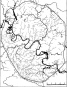
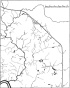
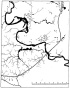
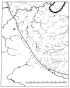
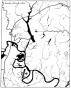
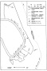
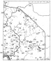
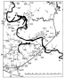
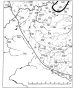
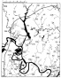

Страницы авторов "Тёмного леса"
Литературный Кисловодск и окрестности
Пишите нам! temnyjles@narod.ru
Депонированная рукопись
УДК 556.5
Аннотированный список названий рек, ручьёв и оврагов Москвы. Насимович Ю.А.; ВНИИ охраны природы Минприроды РФ. М., 1996. - 114 с. - Библиогр. 60 назв. - Рус. (Рукопись деп. в ВИНИТИ 05.05.96, N1454-В96)
На основании картографических, литературных и опросных сведений, а также наблюдений автора описаны водотоки (ВТ) Москвы в пределах Московской кольцевой автодороги по схеме: главное название, синонимы, длина, площадь водосбора, местоположение, притоки, ценные природные объекты (ЦПО) и бывшие населённые пункты (НП) на берегах, происхождение названия. Собраны сведения о 820 ВТ; из них 115-140 - реки. На поверхности города сохранились полностью или частично ок. 355 учтённых ВТ: ок. 70 рек, ок. 80 родников с короткими ручьями вблизи рек, ок. 205 временных ВТ (балок, лощин, ложбин). Густота гидросети и направление стока различны в разных геоморфологических частях Москвы. Значительные чистые ВТ приурочены, в основном, к родникам правого берега р. Москвы и Лосиному Острову. ЦПО разного характера, природные и озеленённые территории обычно приурочены к сохранившейся и даже к исчезнувшей гидросети. Выявлено 335 названий ВТ, относящихся к 154 объектам. Реки получали названия по признакам ВТ (23%), НП (21%), владельцам земли (12%) или иначе; "ручьи" - по НП (31%), владельцам земли (17%), признакам ВТ (16%) или иначе; "овраги" - по владельцам земли (53%), НП (14%), признакам ВТ (3%) или иначе. Материал иллюстрирован 10 картосхемами.
Автор (Ю.А.Насимович)
Данная работа представляет собой самый полный в настоящее время аннотированный список названий водотоков Москвы. В список включены все известные автору названия рек (постоянных естественных водотоков), а также ручьёв и оврагов (значительных временных естественных водотоков) на территории Москвы в пределах Московской кольцевой автомобильной дороги в прошлом и в настоящее время. Приведены также названия некоторых крупных родников.
Приводятся все известные автору синонимы (гидронимы). За основное название принимается либо единственное, либо чаще употреблявшееся, либо бытующее в настоящее время название. Основные названия пронумерованы. Этими же номерами соответствующие водотоки обозначены на схемах, помещённых ниже списка.
Несколько водотоков названы автором по народным названиям населённых пунктов, лесных массивов или прудов, через которые они протекают или протекали. Все эти случаи оговорены в соответствующих местах.
Данные о длине рек и площади их водосбора взяты либо из книги "Москва. Энциклопедия, 1980", либо (чаще) получены автором на основании соответствующих измерений на географических картах. Эти цифры приблизительные, так как в большинстве случаев не известно, где начиналось постоянное течение реки, где проходит водораздел и т.п. Длина, которая указывается для самых маленьких водотоков, - это, как правило, длина их долин.
Сведения о населённых пунктах на берегах рек взяты, в основном, из тех же источников, которые указаны в списке литературы в конце работы.
В некоторых случаях приводятся сведения о находках вблизи тех или иных водотоков видов растений, подлежащих особой охране по решению исполкомов Московского областного и Московского городского Советов народных депутатов от 19.01.1984 г. N39-108 "Об охране дикорастущих растений на территории г. Москвы и Московской области". Эти сведения взяты из работы "Распространение охраняемых видов сосудистых растений на территории Москвы" (Дейстфельдт, Насимович, 1995). Иногда перечисляются другие ценные природные объекты, которые известны автору вблизи данного водотока.
В работе применяются следующие сокращения:
| в. | век, |
| г. | город, |
| д. | деревня, |
| дл. | длина, |
| ж.д. | железная дорога, железнодорожная (станция и т.п.), |
| кв. | квартал (леса), |
| М, 1980 | Москва, Энциклопедия, 1980, |
| МКАД | Московская кольцевая автомобильная дорога, |
| ок. | около, |
| окр. | окрестности, |
| пл. | платформа, |
| ПМ, 1763 | План царствующего града Москвы с показанием лежащих мест на тридцать вёрст вокруг, 1763, |
| пос. | посёлок, |
| р. | река, |
| с. | село, |
| ст. | станция, |
| ТК, 1860 | Топографическая карта Московской губернии, 1860, |
| ТК, 1848 | Топографическая карта окрестностей Москвы, 1848, |
| ТК, 1823 | Топографическая карта окружности Москвы..., 1823, |
| ул. | улица. |
Основные названия водотоков в очерках об этих водотоках тоже сокращаются до одной буквы.
Абица - см. Битца.
Аксиньин ручей - см. Норишка.
1. Алексеевский овраг (А.о. - по современным правилам произношения; Алексеевской о. - Смолицкая, 1976) - левый отвершек Корнеевского оврага в бассейне р. Городни. Точное местонахождение установить пока не удалось.
2. Алтуфьевская речка (А.р. - название дано автором по селу Алтуфьево на самом севере современной Москвы;. Самотека - ТК, 1823) - самый крупный правый приток р.Чермянки. Дл. ок. 5 км (с водотоком, берущим начало у пл. Лианозово и впадающим в пруд у с. Алтуфьево). Вытекает из пруда у с. Алтуфьево, в который впадают 4 безымянных водотока. Пересекает Алтуфьевский лес, где принимает слева Девкин ручей. Ниже Мелиховской ул. - в коллекторе. Долина расположена между улицами Лескова и Белозерской, где она соединяется с долиной р. Чермянки. Площадь бассейна около 15 км2. Иногда рассматривается либо как приток Девкина ручья, либо (местным населением в настоящее время) как исток р. Чермянки. Название "Самотека" может относиться не к реке, а к пруду. Так в прошлом иногда назывались проточные пруды (см. Неглинная). Так как Самотекой назывался также участок р. Неглинной, предпочтительнее искусственное название "А.р.". Русло на всём протяжении трансформировано: ниже пруда - спрямлено, в Алтуфьевском лесу вдоль русла проложены трубы (вода течёт по ним и вне их), ещё ниже - в коллекторе. Вблизи устья в прошлом находилась д. Подушкино.
Алчанка - см. Ольшанка.
Андреевский овраг - см. Кровянка.
Андрюшевской овраг - см. Сартыковский овраг.
3. Антропов ручей (А.р. - название дано автором по прудам Антроповы ямы, из которых он вытекает) - правый приток р. Неглиной. Дл. менее I км. Устье было, у Селезнёвской ул. Антроповы ямы - это засыпанные теперь пруды, которые существовали в 19 - начале 20 в. и назывались по фамилии первого арендатора (Москва. Энциклопедия, 1980). А.р. теперь тоже не существует.
Афанасьев овраг - см. Киней.
Ачестьевской овраг - см. Наверашка.
4. Бекетовский ручей (Б.р. - название дано автором по пруду Бекет у бывшей Бекетовской дачи, через который он протекает) - нижний правый приток р. Чуры. Дл. чуть менее 2 км. Постоянное течение могло быть только в самых низовьях (ниже, пруда Бекет). - Пруд Бекет сохранился у Загородного шоссе, ручей не сохранился.
5. Белая (Б. - Нестерук, 1950;. Агеева, 1985) - левый приток Успенского вражка или правый приток р. Неглинной (Нестерук, 1947). Протекала на месте физического и химического институтов, не сохранилась.
6. Беляева овраг (Б.о. - ТК, 1848) - При соединении с Карнаровым оврагом (правым отвершком) образует Пушкин овраг - левый приток р. Городни. Дл. была ок. I км, теперь - чуть меньше. Начинается у Бакинской ул., частично залесен.
Беляевская речка - см. Чертановка.
7. Беляевский о. (Беляевской о. - Смолицкая, 1976) - Корнеевский овраг или его левый отвершек. Местонахождение не установлено, но указывается для бассейна р. Городни.
Берёзовка - см. Каменка.
8. Бескудниковский ручей (Б.р. - Авилова, Орлов, 1994) - левый приток р. Лихоборки. Долина, показана на старых картах. Теперь - в коллекторе (Авилова, Орлов, 1994). Дл. чуть менее 2 км. Протекал вдоль Дмитровского шоссе и впадал в р. Лихоборку чуть восточнее его (вблизи ж.д.). Начинался вблизи Бескудникова.
9. Бирюлёвский ручей (Б.р. - показан и подписан на современных планах лесонасаждений Царицынского и Бирюлёвского лесопарков) - самый крупный левый приток р. Язвенки (теперь впадает в Верхний Царицынский пруд). Дл. 3 км. Площадь бассейна 4 км2. Вытекает из небольшого пруда в Бирюлёвском лесопарке вблизи пересечения Ряжской и Липецкой улиц. Протекает по границе Бирюлёвского лесопарка вдоль Липецкой ул. В низовьях очистительные сооружения. Устьевая часть запружена. Принимает справа показанный на современных картах приток из Бирюлёвского лесопарка. Там же принимал слева ныне исчезнувший Черепинский овраг (самый крупный приток).
10. Битца (Б. - М, 1980; Агеева, 1985 и др.; Абица - ПМ, 1763; Битцы - ТК, 1860; Битцовская речка и Ивовые кусты - Списки..., 1862) - значительный левый приток р. Пахры. Дл. 24 км (М, 1980), из них в Москве - более 3 км, а не 1 км, как указано в предыдущем источнике. Берёт начало вблизи резервуара с питьевой водой у пересечения МКАД с Профсоюзной улицей, то есть вблизи самой высокой точки Теплостанской возвышенности (253 м над уровнем моря). В прошлом могла иметь, постоянное течение ниже этого места, так как "родники", питающие истоки. Б., по-видимому, имеют связь с питьевым закрытым водохранилищем (сброс заменяемой воды). Два истока Б. протекают по восточной и юго-западной окраинам Голубинского лесного массива. Далее Б. течёт в подземном коллекторе южнее Голубинской ул., выходит на поверхность и пересекает Ясеневский лесной массив, проходит через очистные сооружения у МКАД, пересекает МКАД и примерно 8 км течёт почти на восток вблизи МКАД, принимая многочисленные левые притоки с территории города. Вблизи бывшей усадьбы Знаменские Садки проходит через каскад прудов (вне города, но в непосредственной близости от него). Тут и ниже этого места долина местами залесена и живописна. Б. принимает слева (из города) два Ясеневских оврага, Комаровскую речку, овраги Михайловский, Завьяловский, Петряев, Шалонин, Троицкий и р. Журавенку. Вблизи истоков находились два сельца - Большое и Малое Голубино.
Битцовская речка - см. Битца.
11. Богородский ручей верхний (безымянные ручьи в Богородском - Нестерук, 1950; Богородский ручей - современное название, бытующее среди московских натуралистов) - левый приток р. Яузы. Дл. ок. 3,5 км. Площадь бассейна 6 км2. Одно из бытующих современных названий - Лосиноостровский ручей. Берёт начало в кв. 39 (клетка 4) Яузского лесопарка Лосиного Острова, пересекает квартал 49 у Лосиноостровской ул., проходит под Окружной ж.д. и далее течёт вдоль её ветки то на поверхности, то под землёй. Принимает слева безымянный приток в кв. 48 и справа - Казённый ручей (место слияния под землёй). Впадает в Яузу ниже Краснобогатырского моста. Проходит в кв. 48 через заболоченный пруд, где наблюдался ирис жёлтый.
12. Богородский ручей нижний (безымянные ручьи в Богородском - Нестерук, 1950; показан на старых кастах) - левый приток р. Лузы. Дл. 1-2 км. Площадь бассейна 1,5 км. Исчезнувший или заключённый в коллектор водоток, имевшийся в районе Мясниковской ул. вблизи бывшего с. Богородского.
13. Богородской ручей - одно из названий р. Очаковки вблизи с. Богородского или её маленький правый приток в этом селе, что менее вероятно.
14. Богоявленский ручей (Б.р. - название дано автором по Богоявленскому пруду; безымянный ручей Богоявленского пруда - Нестерук, 1950; Агеева, 1985) - нижний правый приток р. Лихоборки. Дл. не более 1 км. Впадал в Богоявленский пруд на р. Лихоборке вблизи Алтуфьевского шоссе. Не существует.
15. Большой овраг Д.о. - ТК, 1848) - правый приток р. Москвы между Нагатиным и Коломенским. Дл. 3,8 км. Площадь бассейна 4 км2. Начинался у самого Каширского шоссе чуть севернее Коломенского проезда. Из-за него Каширское шоссе делало в этом месте изгиб. Теперь верхние 300-500 м засыпаны. Сохранился на участке почти от Каширского шоссе и до ул. Садовники в виде глубокого оврага или долины речки с древесно-кустарниковой растительностью по склонам. Принимает в этом месте справа сохранившиеся низовья Савкина оврага. По-видимому, назван Б.о. в противоположность несколько меньшему Савкину оврагу. Имеет на этом участке постоянный мощный водоток, обязанный своим происхождением, скорее всего, сточным городским водам. У метро Коломенская заключён в коллектор. Ниже этого места ранее выходил в пойму р. Москвы, где мог не иметь чётко выраженной долины.
Большой овраг - см. Котловка.
Большой Носков ручей - см. Носковка.
Боташевской овраг - см. Старостин овраг.
16. Бояков овраг (Б.о. - ТК, 1848; Буяков овраг? Фиминской овраг? - Смолицкая, 1976) - правый приток р. Городни перед самым её впадением в Царицинские пруды. Дл. чуть менее 2 км. Площадь бассейна ок. 1,5 км.
17. Братовка (Б. - Всё Подмосковье, 1967, с.297) - самый крупный левый приток р. Сходни, который протекает в черте города. дл. 3,5 км (в черте Москвы - 2,3 км). Площадь бассейна 5 км. Берёт начало в загородном лесу западнее Новобутакова, пересекает Путилковское шоссе, МКАД, Алёшкинский лес. Вне Москвы не тлеет постоянного течения. По выходе из Алёшкинского леса протекает между садом у МКАД и улицами Вилиса Лациса и Саломеи Нерис. Опять пересекает МКАД и сразу же впадает в р. Сходню вне города. Принимает слева значительный безымянный приток с заключённым в коллектор верховьем (сохранилась только приустьевая часть) и справа небольшой безымянный приток из сада. Долина в пределах Алёшкинского леса исключительно живописна (крутые склоны, живописное русло, отдельные крупные деревья, единичные экземпляры хохлатки плотной). Ниже леса (у сада) на правом берегу произрастает самая большая в Москве или одна из трёх самых больших популяция хохлатки плотной (многие тысячи экземпляров). На берегах вблизи устья находилось с. Братцево (Братцово), чуть поодаль - усадьба Братцево.
18. Бреховский овраг (название дано автором по д. Брехово, располагавшейся вблизи оврага) - правый приток р. Очаковки, находится на северной окраине Теплостанского леса. Дл. более 1 км. Верховья засыпаны. Живописен. Проходит вдоль ул. Островитянова.
19. Бубна (Б. - Нестерук, 1947, 1950;. Смолицкая, 1976; Агеева, 1985) - нижний левый приток р. Пресни (на территории Зоопарка). Дл. 1 км. Не сохранилась. Начиналась в Козьем болоте (у Малой Бронной ул.), пересекала Садово-Кудринскую ул. и Новую территорию Зоопарка, где сохранились пруды. Далее пересекала Б. Грузинскую ул. и впадала в р.Пресню на Старой территории Зоопарка. Согласно М, 1980, имела дл.1,4 км и теперь заключена в трубу. Название указывает на то, что Б. в прошлом была шумным ручьём (Агеева, 1985).
20. Будайка (Б. - Нестерук, 1950; М, 1980; Агеева, 1985; бытующее современное название; Бучайка? - Смолицкая, 1976) - левый приток р. Яузы чуть выше Лосиного Острова (за ж. д.). Дл. 4,6 км (М, 1980). Площадь бассейна 6 км. Берёт начало на территории воинской части чуть севернее квартала 27 Лосиного Острова, пересекает кв. 27 и 37 Лосиного Острова, далее течёт по западной границе Лосиного Острова в коллекторе или на поверхности, впадает чуть западнее ж. д. Принимает справа сток из Большого Лосиноостровского пруда (у кв. 27), слева - безымянный ручек в кв. 37. На берегах и в русле в кв. 27 имеется значительная популяция ириса жёлтого, в кв. 27 ниже ЛЭП - популяция тысячелистников благородного и хрящеватого (два близких вида или один изменчивый вид), ещё ниже в кв. 37 - по берегам болота и сырые луга с купальницей и горцом змеиным, ещё ниже (вне Лосиного Острова) - единичные экземпляры купальницы. Русло почти на всём протяжении трансформировано (спрямлено, заключено в коллектор и т.п.), вода несколько загрязнена городскими стоками, но обилие особо охраняемых видов растений по берегам реки делает её и её долину ценным природным объектом. На берегу р. Яузы чуть выше устья Б. находилось с. Ростокино. Р.А.Агеева (1985) производит название Б. от слова "буд" - постройка, будка.
21. Буданка (Б. - Нестерук, 1950; Агеева, 1985) - маленький (не длиннее 200 м) правый приток р. Москвы. Теперь не существует. Вытекала из пруда на площади перед Киевским вокзалом. Р.А.Агеева (1985) связывает название со словом "буд" - постройка, будка.
Бусинка - см. Лихоборка. В последнее время не вполне верно рассматривается в качестве левого притока р. Лихоборки М, 1980; Агеева, 1985 - не включена в список; Авилова, Орлов, 1994).
Бутаковский залив - см. Грачёвка.
22. Бутырский ручей (название дано автором; ручей, вытекавший из Бутырского пруда близ д. Бутырки) - верхний правый приток р. Неглинной у Савёловского вокзала. Дл. ок. 1 км. Теперь не существует.
Бутырьев овраг - см. Коровий овраг.
Бучайка - см. Будайка и Ичка.
Буяков овраг - см. Бояков овраг.
23. Вавилон, ручей (В. - Нестерук, 1950 и др.) - левый приток р. Москвы в районе Фрунзенской набережной. Дл. 2,7 км. Есть указания о дл. ок. 1 км (М, 1980), что может объясняться засыпкой верховий в какое-то время. Видимо, исчез в начале 19 в., так как на плане 1811 г. уже не показан (Нестерук, 1947, 1950). Вытекал из колодца под названием Вавилон у Новодевичьего монастыря, протекал по территории в Лужниках, которая называлась "Кочки" (Нестерук, 1950; М, 1980). Видимо, занимал в нижнем течении старицу р. Москвы, так как тёк параллельно р. Москве вдоль современной Фрунзенской набережной. Интересно, что в Сибири вавилонами называются изгибы реки (Мурзаев, 1984), что даёт ещё один ключ к пониманию названия ручья, протекавшего в Лужницкой излучине р. Москвы.
Ваганьковский ручей - см. Студенец.
24. Владыкинский ручей (В.р. - Авилова, Орлов, 1994; долина показана на старых картах) - нижний левый приток р.Лихоборки. Теперь - в коллекторе (Авилова, Орлов, 1994). Дл. 2,3 км. Начинался у д.Слободка (вблизи современной ж.д. ст. Дегунино, которая расположена далеко от бывшего с. Дегунино), протекал западнее и потом восточнее Алтуфьевского шоссе, впадал ниже с.Старое Владыкино, пересекая современную ул. Хачатуряна. Возможно, имел справа небольшой приток.
Вешка - см. Наверашка.
Вишинской овраг - верхняя часть Завьяловского оврага (см.), показан и подписан на ТК, 1848.
Воблинка - см. Чертановка.
Водянка - см. Чертановка и ниже.
25. Водянка (В. - ТК, 1860; Смолицкая, 1976) - левый приток р. Чертановки. Дл. 5,3 км. Площадь бассейна 5-6 км2. Начинается вблизи ст. метро Беляево, пересекает Битцевский лес и территорию конноспортивного комплекса севернее р. Чертановки, впадает, вблизи ст. метро Чертановская, где образует большой длинный пруд. Битцевский лес пересекает в открытом (но трансформированном) русле, на остальном протяжении, заключена в коллектор. Вблизи В. и конноспортивного комплекса несколько лет назад найден экземпляр любки двулистной, но в целом эта часть Битцевского леса наиболее нарушена. Принимает в Битцевском лесу слева три довольно живописных оврага (балки). Вблизи истоков находилась д. Деревлёво (Дереблёво), вблизи устья - д. Чертаново. В перечисленных выше источниках рассматривается как основная река по отношению к Чертановке (Черкасовскому ручью), но с этим трудно согласиться. Лучше рассматривать В. как приток Чертановки, так как другие названия этого водотока до нас не дошли.
Волкона - см. Ленивый вражек.
Волхона - см. Ленивый вражек.
Волхонка - см. Ленивый вражек.
26. Волынский овраг или ручей (овраг и ручей в с.Волынском - название дано автором по селу) - правый приток р. Сетуни чуть выше устья р. Раменки, то есть в месте пересечения Сетуни Киевской ж.д. Показан на старых картах.
27. Воробьёвка (В. - ТК, 1848) - левый приток р. Химки в Химкинском лесопарке. Дл. вместе с заливом Химкинского водохранилища - 1,1 км (залив - 0,7 км). Начинается у пересечения МКАД и ж. д., пересекает Химкинский лес, Левобережную улицу. Представляет собой сухую залесенную балку, а в низовьях - залив. Раньше в низовьях могло быть постоянное течение, но всё равно объект, скорее всего, воспринимался как балка или овраг, но не как водоток. Мог быть назван В. в противоположность аналогичному более крупному объекту на противоположном берегу р. Химки - Грачёвке.
28. Воронинский овраг, ручей (название дано автором по деревне Воронино) - левый приток р. Очаковки. Дл. 1,1 км. Начинается в Теплостанском лесу, сохраняется между домами вблизи ул. Академика Бакулева, ниже не сохранился, но впадал вблизи ул. Островитянова и Ленинского проспекта. Живописен в Теплостанском лесу. Раньше на его берегах было Воронино.
Всходня - см. Сходня.
Входня - см. Сходня.
29. Высоковский ручей (В.р. - Нестерук, 1950; Агеева, 1985; Леоновский ручей - Авилова, Орлов, 1994) - левый приток р. Яузы между проспектом Мира и ст. метро Ботанический сад. Дл. 1-2 км. Мог начинаться чуть северо-восточнее ст. метро Свиблово (здесь не застроены участки вблизи улиц Верхоянская и Радужная, а в прошлом были болота), проходить вблизи ст. Свиблово, протекать через сохранившийся пруд на ул. Нансена. Далее тёк на юг, пересекал современную Леоновскую ул. и впадал чуть ниже села Леоново. Не сохранился или заключён в коллектор.
Выходня - см. Сходня.
Георгия-победоносца родник - см. Голосов овраг.
Глуховской овраг - см. Сартыковский овраг.
Глядянка - см. Чурилиха.
30. Гнилуша, овраг, речка (Г. - Павлов, 1923 и др., фигурирует на ботанических этикетках 20 в.; Большая Гнилуша - бытующее среди биологов и геологов Москвы название, данное в противоположность Малой Гнилуше) - правый приток р. Москвы между Троице - Лыковым и Крылатским. Дл. 2 или 3 км (в зависимости от того, какой исток считать главным), дл. нижней части с мощным водотоком - 0,8 км. Площадь бассейна 4 км. Начинается вблизи Рублёвского шоссе тремя отвертками (правый, в Крылатском, засыпан; средний проходит по границе леса и застройки Крылатского вдоль Осенней ул.; левый пересекает лес). Принимает слева длинный приток, текущий из района бывшего Черепкова (теперь - Кардиологический центр). На берегах - д. Екатериновка. Раньше использовался для геологических экскурсий (Павлов, 1923 и др.), теперь захвачен под огороды. По Г. осуществляется сброс сточных вод с ТЭЦ. Гнилуша, согласно народной географической терминологии, - это "заболоченное верховье речки со стоячей, загрязнённой водой, издающей временами неприятный запах" (Мурзаев, 1984, с. 146).
31. Гнилуша малая, овраг, ручей (бытующее среди биологов и геологов Москвы название, дано в противоположность Б. Гнилуше) - маленький правый приток р. Москвы между Б. Гнилушей и Крылатским (точнее - напротив Крылатского). Дл. ок. 200 м. Имеет 4 совсем маленьких правых отвертка, в низовьях которых протекают еле заметные ручейки. На склонах кое-где сохранилась хохлатка плотная и другие лесные травы. Загрязнена (замусорена в верховьях), но довольно живописна.
Гнилушка - см. Чернушка.
Говорня, или Говорни - см. Городня.
Голединья - см. Чурилиха.
Голедянка - см. Чурилиха.
32. Головинский ручей (Г.р. - Агеева, 1985) - правый приток р. Норишки. Дл. с Головинскими прудами более 1 км или даже 2 км. Иногда рассматривается как правый приток р. Лихоборки и главная река по отношению к Норишке. Тогда длина составляет 2,7 км. Иногда по ошибке считается истоком р. Лихоборки, так как по Г.р. сбрасываются в Норишку и далее в Лихоборку волжские воды из Химкинского водохранилища. Проходит через 3 Головинских пруда (Верхний, Малый, Большой) и впадает в р. Норишку на Кронштадтском бульваре. На Г.р. были с.Головино и усадьба Михалково.
Голодянка - см. Чурилиха.
33. Голосов овраг (Г.о. - бытующее среди геологов и других специалистов, название; Казённый овраг - ТК, 1848; Дворцовый овраг - Гра и др., 1953;. Коломенский ручей - М, 1980; Коломенский овраг - одно из бытующих названий, встречалось в современной периодической печати; родник Георгия-победоносца - там же) - правый приток р. Москвы в Коломенском. Дл. оврага в прошлом - ок. 1 км (верховья могли быть засыпаны при прокладке проспекта Андропова). Дл. ручья - несколько сотен метров. Ручей берёт начало от родника Георгия-победоносца и ряда маленьких родников вблизи него. Есть.сведения о некоторой загрязнённости этого родника (Вечерняя Москва, 28 июня 1995, с.2 и др.). Овраг и ручей очень живописны. На склонах - фрагменты широколиственного леса (дуб, липа, клён, ясень, вяз и др.). Имеется хохлатка плотная (впервые гербаризировалась здесь Д.П.Сырейщиковым в 1893 г., сохранилась до настоящего времени). Выше родника овраг раздваивается. Правый отвершек значительнее. Вблизи верховий оврага (севернее) в прошлом находилась. Садовая слобода. Низовья расположены между сёлами Коломенское и Дьяковское (второе на правом берегу).
Голяденка - см. Чурилиха.
Горбутанской овраг - см. Кузнецовка.
Горедва - см. Сходня.
Горетовка - см. Сходня.
Горленка - см. Горячка.
Горленка? - см. Каменка.
Городенка - см. Городня.
34. Городня (Говорни, то есть Говорня? - ПИ,- 1763; Городнянка - ТК, 1848; Городянка - ТК, 1860 и др.; Сухая Гребенка в Бирюлёво и Городня в Покровском - Списки..., 1862; Городянка - Здановский, 1926; Городенка или Городенка - Смолицкая, 1976; Городня, Городянка или Городенка - Агеева, 1985; Городня - М, 1980; Москва. План города,. 1990 и др.) - второй (после Сетуни) по длине и мощности правый приток р. Москвы в черте города. Дл. 16 км (М, 1980) или 18 км (измерения автора, с учётом меандрирования - значительно более 18 км). Площадь бассейна 109 км2 (М, 1980) или 100 км2 (измерения автора). В настоящее время берёт начало в четырёх близко расположенных оврагах (балках) в южной (юго-западной) половине Битцевского леса у Новоясеневского проспекта и ул. Рокотова. Верховья всех этих оврагов засыпаны. По-видимому, истоки Г. формируются за счёт городских сточных вод, и в прошлом Г. не имела в пределах Битцевского леса постоянного течения или начиналась на восточной его окраине. По выходе из Битцевского леса Г. течёт в подземном коллекторе, питая пруды по Кировоградскому проезду и выше него. Далее Г. проходит под землёй севернее 3-го Дорожного проезда и выходит на поверхность ниже ул. Подольских Курсантов. Ниже этого места она пересекает две ж.д. и впадает в Царицынские пруды. По выходе из Царицынских и Борисовского прудов течёт в открытом русле между Ореховым-Борисовым и Братеевым, впадая в р. Москву вблизи МКАД. Принимает справа Сеньковский, Тепляковский и Бояков овраги, р. Язвенку, Шипиловский овраг и р. Шмелёвку. Принимает слева Пушкин - овраг и р. Чертановку (есть сведения, что воды р. Чертановки в последние годы сбрасываются непосредственно в р. Москву). Долина почти на всём протяжении глубоко врезана, живописна, но сильно трансформирована и сохранила естественный облик только в Битцевском лесу и отчасти вблизи устья. На берегах Г. в прошлом находились населённые пункты Бирюлёво (имеет мало отношения к современному району Бирюлёво, который значительно юго-восточнее), Покровское (Покровское - Городня), Царицыно, Хохловка, Шипиловка, Борисовские выселки (между Г. и р. Москвой), Борисово и Братеево (между Г. и р. Москвой, но ближе к р. Москве). Вблизи р. Городни в пределах Битцевского леса произрастают хохлатки полая, плотная, промежуточная и Маршалла, а также ландыш и охраняемые виды колокольчиков; вблизи Царицына - охраняемые виды колокольчиков (в прошлом здесь находили также тайник яйцевидный - 1867, Краузе, гербарий МГУ); по склонам долины вблизи устья - охраняемые виды колокольчиков. В прошлом где-то на Г. находили бровник одноклубневый.
Городнянка - см. Городня.
Городянка - см. Городня.
35. Горячка, или Останкинский ручей (Т., Горленка или О.р. - Нестерук, 1950; Горленка? - Смолицкая, 1976; Соколка? - Смолицкая, 1976; Г., Горленка или О.р. - Агеева, 1985) - правый приток р. Яузы в районе Останкина и ВДНХ. Дл. 3,4 км. Площадь бассейна ок. 3 км2. В коллекторе. Начинался чуть западнее сохранившегося Останкинского пруда, проходил через этот пруд, тёк на восток вдоль нынешней ул. Академика Королёва, далее - на северо-восток через территорию ВДНХ. Устье вблизи ул. Сергея Эйзенштейна. На берегах находились село и усадьба Останкино (на левом берегу в истоках), д. Пушкинское и отчасти с. Алексеевское (между О.р. и р. Копытовкой, но ближе к р. Копытовке).
Граворновка - см. Нищенка.
Граворонка - см. Нищенка.
Гравороновка - см. Нищенка.
36. Грачёвка (Г. - ТК, 1848; Бутаковский залив - Москва. План города, 1994; Чернава и Чернавка - Смолицкая, 1976 и Агеева, 1985) - крупный правый приток р. Химки вблизи бывшей д. Алёшкино. Дл. ок. 6 км, из них в Москве - 1,3 км. Площадь бассейна 7-8 км2. Берёт начало в Московской области на северо-западной окраине г. Химки, пересекает его (в коллекторе). Нижние 2 км затоплены Химкинским водохранилищем (Бутаковский залив). Названия Чернава и Чернавка могли появиться по ошибке, так как сходное название носит другой приток р. Химки (см. Чернушка).
37. Гузеев овраг (Г.о. - ТК, 1848) - правый приток р. Журавенки. Дл. 1,3 км. Устье вне Москвы в 300-400 м ниже (южнее) МКАД, но верховья, скорее всего, были в Москве. Могли быть засыпаны при прокладке МКАД.
Гуськин овраг - см. Каменная Клетва.
38. Давыдковский ручей (название дано автором по деревне Давыдково, вблизи которой находился объект) - небольшой левый приток р. Сетуни в Давыдкове. Дл. не более 1 км. Верховье весной и после дождей прослеживается в настоящее время между Кременчугской ул. и лесными насаждениями вдоль Славянского бульвара (часть Матвеевского леса).
39. Даев ручей (название дано автором по пруду, из которого ручей вытекал; Даев пруд - Нестерук, 1950) - маленький левый приток р. Неглинной (показан в книге Ф.Я.Нестерука на схеме штриховой линией). Дл. чуть менее 1 км. Протекал вдоль Даева и Б. Сухаревского переулков. Не существует.
40. Даниловка (Даниловский ручей - Нестерук, 1950; Д. - Списки..., 1862; Д. или Даниловский ручей - Агеева, 1985) - маленький правый приток р. Москвы в бывшей Даниловской слободе, дл. 500 м (Нестерук, 1950). Протекал к р. Москве от ул. Даниловский вал. Не существует.
Даниловский ручей - см. Даниловка. Дашин овраг - см. Раменка.
41. Дворцового моста безымянный ручей (безымянный ручей у Дворцового, то есть у Лефортовского моста - Нестерук, 1950) - маленький левый приток р. Яузы чуть ниже ПКиО Окружного дома офицеров (Лефортовского парка). Дл. не более 800 м. Протекал вдоль нынешней Красноказарменной ул. Не существует.
Дворцовый овраг - см. Голосов овраг.
42. Девкин ручей (Д.р. - ТК, 1848) - крупный левый приток Алтуфьевской речки или правый приток р. Чермянки, если его считать главной рекой по отношению к Алтуфьевской речке. Дл. 4 км. Площадь бассейна 6-8 км2. Берёт начало севернее Москвы у рабочего пос. Северный. По Москве проходит несколько метров и сливается с Алтуфьевской речкой в Алтуфьевском лесу.
43. Дегунинский ручей (Д.р. - М, 1980; Авилова, Орлов, 1994) - крупный левый приток р. Лихоборки у пл. Моссельмаш и Лихачёвского переулка. Дл. ок. 4 км. Площадь бассейна 5-7 км2. Заключён в коллектор. Начинался чуть севернее прудов близ улиц Ангарская и Софьи между Бескудниковым и Коровиным. Протекал через эти пруды и пруд у пл. Моссельмаш. Вблизи последнего пруда мог принимать слева значительный приток из Бескудникова.
44. Дубинкинская речка (Улицкой овраг - ТК, 1823; Усков овраг - ТК, 1848; Д.р. - Насимович, Романова, 1991; Авилова, Орлов, 1994; название. Д.р. дано в конце 1980-х годов при объявлении долины памятником природы местного значения, так как на одной из старых карт место именовалось урочищем Дубинкинским) - крупный правый приток р. Чертановки в Битцевском лесу. Дл. 3,4 км. Площадь бассейна 3 км2. Верховья западнее Соловьиного проезда засыпаны или заключены в коллектор. Теперь берёт начало на западной окраине Битцевского леса у Соловьиного проезда и течёт на северо-восток через Битцевский лес. Устье у восточной окраины Битцевского леса. В формировании стока основную роль играют сточные городские воды, поступающие из современного Ясенева. Раньше могла начинаться (иметь постоянное течение) в центре Битцевского леса. Принимает слева крупный овраг с популяцией хохлатки Маршалла, который начинается у Севастопольского проезда. Справа принимает три значительных оврага. Почти вся долина залесена и очень живописна. Живописны и залесены долины всех притоков. На притоках - популяции хохлаток Маршалла, плотной и промежуточной, охраняемые виды колокольчиков и другие интересные виды растений. Вблизи верховьев располагалось село Узкое (Уское), при нём - имение князя Трубецкого.
45. Дьяковский овраг (Д.о. - Мячин, 1977) - правый приток р. Москвы ниже с. Дьяковское (Дьяково) вблизи Коломенского. Дл. менее 1 км. По днищу протекает небольшой ручей длиной порядка сотни метров. Склоны о очень крутые и живописные, с суходольными лугами и ксерофильными (остепнёнными) участками. На этих лугах произрастают осока ранняя, земляника зелёная, клевер горный, синеголовник плосколистный (в Москве сохранился только здесь), порезник горный, зверобой продырявленный, подорожники средний и ланцетный, душица, короставник, колокольчик рапунцелевидный и др. В связи с прекращением выпаса луга изменяются в лучшую сторону. Между обрывом к р.Москве, Д.о. и его правым отвершком расположен холм со знаменитым Дьяковским городищем (Всё Подмосковье, 1967; Гра и др., 1953).
46. Екатерининский овраг, ручей (ручей Екатерининского пруда - название, дано автором по пруду; Екатерининский пруд - название присутствует на современных туристических схемах Нескучного сада и ЦПКиО им. Горького; Елизаветинский пруд? - Москва. Энциклопедия, 1980) - правый приток р. Москвы в Нескучном саду, на котором расположен Ванный домик. Длина не более двух сотен метров. Берёт начало от родничков на ступеньках чуть выше Ванного домика. Устье на Пушкинской набережной. На всём протяжении забетонирован или как-то иначе архитектурно оформлен.
Елизаветинский овраг, ручей, пруд - см. Екатерининский овраг, ручей.
47. Ельницкий ручей (название дано автором по соответствующему урочищу или болоту в Лосином Острове) - правый приток р. Сосенки вблизи Черкизовского пруда. Дл. 3 км. Площадь бассейна ок. 2 км2. Берёт начало от соединения двух канав на территории больничного парка в Лосином Острове (по сути - кв. 40 Лосиного Острова), выходит с территории больницы и в виде канавы пересекает кв. 50 Лосиного Острова (клетки 2, 1, 3) с севера на юг. Ниже Пермской ул. заключён в коллектор или не существует. В прошлом сливался с р. Сосенкой вблизи северного конца Черкизовского пруда. В прошлом мог иметь постоянное течение только вблизи устья, а теперь, по-видимому, постоянно питается стоками из больницы. На берегах или вблизи истока в прошлом была пустошь Ельницкая.
48. Ермаковский ручей (Е.р. - Нестерук, 1950; Агеева, 1985; Москва. Энциклопедия, 1980) - левый приток р. Москвы чуть выше усадьбы Студенец. Дл. 4 км (Москва. Энциклопедия, 1980). Площадь бассейна 3 км2. Начинался из прудов в районе Ермаковской рощи (Нестерук, 1950; Агеева, 1985), то есть где-то в районе Магистральных улиц. Протекал севернее пл. Тестовская и впадал в р. Москву вблизи юго-западной окраины усадьбы Студенец (ПКиО "Красная Пресня"). Теперь заключён в коллектор или не существует.
49. Жабенка (Жабина - ПМ, 1763; Жабовка - ТК, 1848; Жабоска - План окрестностей Ходынского военного поля, 1901; Ж. или Жабина - Агеева, 1985; Ж. или Жабня - Москва. Энциклопедия, 1980) - правый приток р. Лихоборки у пл. НАТИ. Дл. 6,5 км (Москва. Энциклопедия, 1980) или 5 км (измерения автора). Площадь бассейна ок. 7 км2. Берёт начало чуть южнее Верхнего Фермского пруда (но с Фермскими прудами непосредственно не связана), в виде канавы пересекает с востока на запад территорию сельскохозяйственной академии имени К.А.Тимирязева (лесная опытная дача ТСХА), проходит через Большой садовый пруд, ниже которого протекает в подземном коллекторе вдоль Большой Академической ул., и впадает в р. Лихоборку у пересечения её с Дмитровским шоссе. Принимает справа сток с Фермских прудов (см. Фермский ручей). Ниже Б.Садового пруда (видимо, в пойме) был Жабенский луг, где находили горец змеиный. На берегах были с.Петровско-Разумовское (у Б.Садового пруда) и д.Нижние Лихоборы (вблизи устья).
Жабина - см. Жабенка.
Жабня - см. Жабенка.
Жабовка - см. Жабенка.
Жабоска - см. Жабенка.
50. Жуковский овраг Д.о., Козловский о., Комсомольский о., Лёшин родник - личное сообщение директора Кунцевского краеведческого музея Валентины Васильевны Кутя) - левый приток р. Сетуни вблизи бывшей усадьбы Жуковка. Дл. ок. 0,5 км. Восточнее оврага была ул. Козлова, названная так в 20-30-е годы в честь революционера. Примерно в эти же годы в овраге собирался дирижабль "Комсомольская правда". Вблизи устья оврага молодым энтузиастом Лёшей был оформлен родник, за которым сохранилось соответствующее название (Лёшин родник). Лёша погиб в 1993 г. во время событий у Белого дома при попытке разъединить враждующие стороны. В настоящее время низовья Ж.о. залесены, а верховья и средняя часть озеленены в виде парка. Протекающий по днищу оврага ручей сохранился только в самой нижней части оврага и сливается с Лёшиным родником.
51. Журавенка (Ж. - ТК, 1860; Карта окрестностей Москвы, год не указан) - левый приток р. Битцы вблизи Булатникова и г. Видное вне Москвы. Дл. ок. 6 км. Площадь бассейна примерно 10-12 км2. Исток - частично сохранившийся Попов ручей, брал начало северо-восточнее д. Загорье на территории современной Москвы, пересекал линию современной МКАД, протекал через Ближние Прудищи, опять пересекал линию МКАД и впадал в пруд у бывшей д. Загорье. Своё название Ж. приобретает ниже пруда в д. Загорье, где она теперь протекает в подземном коллекторе. Пересекая МКАД, Ж. выходит за пределы современной Москвы и далее течёт открыто. Принимает в Москве справа ниже пруда Никольский овраг, вне Москвы справа - Суслов и Гузеев овраги. Вблизи бывшей д. Загорье в Москве долина залесена и живописна, ниже Москвы - тоже, но в меньшей степени.
52. Завьяловский ручей (З.р. - ТК, 1848) - левый приток р. Битцы. Дл. ок. 2 км. Площадь бассейна ок. 1 км2. Исток был вблизи пруда на Варшавском шоссе. Теперь З.р. начинается чуть ниже этого места, пересекает маленький Анинский лесок (между Дорожной ул. и Варшавским шоссе), проходит через небольшой пруд у МКАД, пересекает МКАД и впадает в р. Битцу вне Москвы чуть ниже устья р. Козловки. В Москве не имеет постоянного течения. Верхняя часть З.р. называлась также Вишинским оврагом (см.).
Завьяловской ручей - то же, что Завьяловский ручей (ТК, 1848; см.).
Завьяловской овраг? - см. Кузнецовка.
53. Заразы (3. - Александров, Некрасова, 1923; Андреевский овраг или Андреевские Заразы - предположение автора: Андреевским называется пруд в Заразах - современные туристические схемы ЦПКиО им. Горького и Нескучного сада) - большая разветвлённая овражно-балочная система с прудом на юге Нескучного сада, правый приток р. Москвы чуть ниже Андреевского монастыря и Окружной ж. д. Дл. несколько сотен метров (до полукилометра). Начинается вблизи Ленинского проспекта. Склоны крутые и залесенные, очень живописны. В прошлом был родник с "целебной" водой. Берега пруда бетонированные, ручей ниже пруда заключён в коллектор, а выше пруда не имеет постоянного течения. Заразами в прошлом назывались любые трудно проходимые участки: леса с оврагами, дебри, обрывы и т.п. (Мурзаев, 1984). На берегах в прошлом была усадьба Трубецких.
54. Захарковский овраг (З.о. - название дано автором по деревне Захарково) - правый приток р. Химки напротив современного Северного речного вокзала. Дл. ок. 1,5 км. Видимо, начинался чуть южнее современной ст. метро Планерная, тёк сначала на юго-восток вдоль ул. Героев Панфиловцев, а потом - на восток вдоль Химкинского бульвара. Постоянное течение, скорее всего, имел только вблизи устья, где была д. Захарково. Сохранился только в виде небольшого (дл. 200 м) залива Химкинского водохранилища.
55. Зачатьевского переулка ручей (ручей в овраге по Зачатьевскому переулку - Нестерук, 1947, 1950) - левый приток р. Москвы. Пересекал ул. Остоженку (Метростроевскую ул.) и впадал на Кропоткинской набережной. Выявлен при метростроевских работах в 1932 г. (Нестерук, 1947, 1950).
Зепиборской овраг - см. Кузнецовка.
Знаменский овраг - см. Старостин овраг.
56. Золотой Рожок (Лефортовский ручей - ПМ, 1763; З.Р. - Москва, 1896; Нестерук, 1950; Москва. Энциклопедия, 1980; Агеева, 1985; Мурзаев, 1985; явно ошибочное Кокуй - Смолицкая, 1976) - нижний левый приток р. Яузы. Дл. чуть менее 2 км. Площадь бассейна ок. 2 км2. Начинался слиянием двух ручьёв (ложбин весеннего стока?) у пл. Серп и Молот, протекал вдоль Горьковского направления ж. д. Постоянное течение мог иметь только на нижнем километровом участке. "Горный поток Москвы" (на длине 950 м падение составляло 11,5 м), назван в честь залива Золотой Рог в Константинополе (Нестерук, 1950; Мурзаев, 1985). Теперь заключён в коллектор или не существует.
Зябликов овраг - см. Шмелёвка. Зябликовский ручей - см. Шмелёвка.
Ивановской овраг - см. Киней.
Ивовые кусты - см. Битца.
Измайловка - см. Серебрянка.
57. Изютинский овраг или ручей (название дано автором по д. Изютино, или Изютино - Волхонка, вблизи современного Зюзина, рядом с которой овраг начинался) - левый приток р. Чертановки. Дл. от 0,7 до 1,5 км. Находился чуть западнее Варшавского шоссе. Сохранился пруд в одном из отвершков (в правом) между Балаклавским проспектом и Черноморским бульваром.
58. Ичка (И. - ПМ, 1763;, ТК, 1848, 1860; Карта окрестностей Москвы, год не указан; Смолицкая, 1976; Москва. Энциклопедия, 1980; Агеева, 1985; Москва. План города, 1990 и др.) - крупный левый приток р. Яузы чуть ниже входа её на территорию Москвы. Дл. 12 км, площадь бассейна 25 км2 (Москва. Энциклопедия, 1980). Берёт начало в кв. 41 (клетка 2) Лосиного Острова в виде ручья (Свитягинский ручей, названный по Свитягинскому болоту и пустоши Свитягина) с углублённым и спрямлённым руслом. Пройдя 2,5 км по кварталам 41, 42, 31 и 32 Лосиного Острова, пересекает МКАД, выходит в загородную часть Лосиного Острова, где сразу же сливается с аналогичным Ступкинским ручьём (несколько меньший правый исток, названный по Ступкинскому болоту в московской части Лосиного Острова, из которого он вытекает). Далее течёт на северо-запад вдоль МКАД по кварталам 17, II, 10 и 9 загородной части Лосиного Острова, опять входит в Москву, пересекает кварталы 4 и 3 московской части Лосиного Острова, выходит из него, течёт в Москве вдоль МКАД, пересекая Ярославское шоссе и Ярославскую ж.д., проходит через Джамгаровский пруд и впадает в р. Яузу вблизи ул. Малыгина. Постоянное течение начинается в загородной части Лосиного Острова. Принимает слева в кв. 3 р. Лось. Большая часть бассейна залесена, в результате чего И. - одна из самых чистых в Москве рек. Русло в Лосином Острове и кое-где ниже его трансформировано - углублено и спрямлено, то есть имеет облик канавы. Долина врезана не глубоко, почти везде заболочена. В названии можно уловить сходство со словом "иштака" - "течение", "исток", "верховье реки", "болотистое место", "небольшой ручей, вытекающий из болота", "проток", "рукав реки" (Мурзаев, 1984), то есть один из двух заболоченных истоков р. Яузы. На болотах и сырых лугах вдоль И. в Лосином Острове произрастают такие декоративные охраняемые виды трав как купальница и горец змеиный (Дейстфельдт, Насимович, 1995), редкий в Москве папоротник телиптерис болотный (Насимович, 1994) и только здесь имеющийся в Москве лютик длиннолистный (наблюдения Л.А.Дейстфельдт, гербарий ГБС). На берегах И. находились пустошь Свитягина (в истоках) и д. Малые Мытищи (на левом берегу у пл. Лось).
59. Кабаниха (К. - Нестерук, 1950; К. или Кабанка - Агеева, 1985; К. - Смолицкая, 1976) - не существующий теперь левый приток р. Пресни. По-видимому, протекала и впадала чуть севернее территории Зоопарка. Могла иметь связь с Козьим болотом. Возможно, то же самое, что и Кабанка (см. ниже).
60. Кабанка (К. - Нестерук, 1950; К. или Кабаниха? - Агеева, 1985) - то же, что Кабаниха или другой левый приток р. Пресни, который впадал в неё выше Кабанихи (у Белорусского вокзала).
Кадашевский овраг - см. Чура.
61. Казённый ручей (бытующее в современной документации и т.п. название ручья, протекающего через Казённый пруд в Лосином Острове) - правый приток Богородского ручья (верхнего). Дл. 2,7 км. Берёт начало в кв.38 (клетке 2) Лосиного Острова, пересекает кварталы 38, 48 (клетка 1) и 47, проходя под Окружной ж. д. Постоянное течение имеет в кв.47. Впадает в Казённый пруд и после этого (в подземном коллекторе) в Богородский ручей. Долина залесена. В истоках имеется популяция купальницы.
Казённый овраг - см. Голосов овраг.
62. Каменка Д. - ПМ, 1763; Нестерук, 1950; Берёзовка? - Смолицкая, 1976; К., Кашенка или Берёзовка в верховьях - Агеева, 1985) - правый приток р. Яузы вблизи устья р. Лихоборки. Дл. 4,2 км. Площадь бассейна 5 км2. Брала начало вблизи Савёловской ж. д. между ст. Тимирязевская и Окружная. Протекает сначала в подземном коллекторе вдоль ул. Академика Комарова, потом - на поверхности через территорию Главного ботанического сада РАН, где образует каскад из пяти прудов. Вблизи устья принимала справа безымянный приток, от которого сохранился пруд. Видимо, в прошлом протекала по каменистому ложу, от чего и получила название (Мурзаев, 1984). Долина в среднем и отчасти в нижнем течении залесена и живописна (ГБС РАН). Её растительность подробно изучена (гербарий ГБС РАН). В низовьях, по-видимому, был Каменкин или Кашенкин луг (луг мог называться по владельцу, и тогда Каменка - это искажённое название Кашенка). На левом берегу Каменки ближе к истоку было сельцо Марфино.
63. Каменная Клетва, овраг с родником (К.К. - ТК, 1860; Карта окрестностей Москвы, год не указан; Всё Подмосковье, 1967; Крылатский ручей - Москва. Энциклопедия, 1980; Гуськин о. - Авилова, Орлов, 1994) - правый приток р. Москвы в Крылатском; овраг, выходящий на пойму р. Москвы. Общая дл. оврага ок. 1 км. В его нижней части протекает Крылатский ручей длиной не более 0,4 км, берущий начало от родника Руденская божья мать (в честь иконы в соседней церкви). В низовьях оврага расположены очистительные сооружения, ниже которых ручья теперь нет (заключён в коллектор). В прошлом по выходе из оврага ручей тёк к р. Москве ещё на протяжении половины километра (значит, общая дл. овражно-балочной системы с ручьём составляла более 1 км). Площадь бассейна ок. 2 км2. Крылатский ручей по выходе из Каменной Клетвы принимал слева ручей из Каменных Зараз и справа ручей из оврага вдоль современной Крылатской улицы. Родник Руденская божья мать расположен в нижней части правого отвертка Каменной Клетвы. Это один из самых чистых родников Москвы (Анохин, 1995 и др.). Левый отвершек К.К. длиннее правого, склоны с отдельными группами деревьев и кустарников (перелесками), где произрастает хохлатка плотная. На склонах обоих отвершков преобладают нарушенные в результате рекреационного использования и подсыпки грунта суходольные луга. Склоны исключительно живописны. Имеются геологические обнажения меловых песков аптского яруса (Павлов, 1923 и др.). Овраг посещается геологическими экскурсиями (Всё Подмосковье, 1967). Родник популярен у местного населения. Родник и обнажения песков (по левому склону) объявлены памятниками природы местного значения. Русло Крылатского ручья ниже родника нарушено прокладкой труб и т.п. На склонах и коренных берегах находилось с. Крылатское.
64. Каменные Заразы, овраг (К.З. - ТК, 1860; Карта окрестностей Москвы, год не указан; Всё Подмосковье, 1967; Кладбищенский овраг? - Авилова, Орлов, 1994) - овраг (или овражно-балочная система с небольшим ручьём в нижней части), выходящий справа в пойму р.Москвы. Ручей по выходе в пойму р. Москвы в прошлом впадал слева в Крылатский ручей (см. Каменная Клетва). Дл. всей системы более полукилометра. Склоны оврага на большей их части залесены и исключительно живописны. Имеются хохлатки полая и плотная, охраняемые виды колокольчиков (Дейстфельдт, Насимович, 1995). На левом склоне кое-где - суходольные луга в относительно хорошем состоянии (земляника зелёная, душица). В недавнем прошлом в верховьях К.З. имелся промытый в песчанике каньон с вертикальными стенками (наблюдения автора). Теперь он засыпан. Южнее К.З. находилось с. Крылатское. "Заразами" в старину называли леса с оврагами, обрывы и т.п. (Мурзаев, 1984"), откуда и происходит название оврага. Посещался геологическими экскурсиями (Всё Подмосковье, 1967).
65. Камушки, или ручей у Камушков (ручей у К. - Нестерук, 1950) - короткий правый приток Ермаковского ручья, вытекал из озерков в районе Камушков (Нестерук, 1950). Теперь не существует.
65. Каневский овраг (К. - ТК, 1848; Каняевский овраг - иногда относимое к р. Чертановке, видимо, не совсем верное название) - левый приток р. Чертановки чуть ниже Узкого, то есть в Битцевском лесу перед Лысой горой. Дл. 2,5 км. Площадь бассейна 1 км2. Начинался чуть западнее прудов в Коньково у современной Профсоюзной ул., протекал через пруды (ул. Введенского). Теперь на этом участке не существует или заключён в коллектор. Сохранились пруды и нижний участок в Битцевском лесопарке, который очень живописен. На стрелке с р. Чертановкой - декоративная многоствольная ветла, одно из самых красивых деревьев Битцевского леса (Насимович, Романова, 1991). Иногда рассматривается как главная река по отношению к Чертановке Даняевский овраг). В истоках находилось с. Коньково - Сергиевское, слившееся потом с с. Коньковым-Троицким на другой стороне Калужской дороги (Профсоюзной ул.).
Каняевский овраг - см. Каневский овраг и Чертановка.
Капелька - см. Капля.
Капитовка - см. Копытовка.
66. Капля (К. - Агеева, 1985; Нестерук, 1950; К. или Капелька - Москва. Энциклопедия, 1980) - маленький левый приток р. Напрудной. Дл. 1 км (Москва. Энциклопедия, 1980). Начиналась вблизи Капельского переулка и впадала чуть ниже пруда в парке ЦДСА (теперь - ЦДРА). Видимо, не существует или заключена в коллектор.
Каришка - см. Норишка.
67. Карнаров овраг (Карнарок? - ТК, 1848) - при соединении с о. Беляева образует Пушкин овраг (левый приток Городни), то есть является правым отвершком Пушкина оврага. Дл. 3,5 км. Площадь бассейна 3-4 км2. Проходит вдоль Днепропетровской ул. и Днепропетровского проезда, пересекает Павелецкую ж. д. и Котляковское кладбище. Во многих местах засыпан.
Кастеевский овраг - см. Филька.
Кашенка - см. Каменка.
Квилка - см. Филька.
Киней, овраг Д., Ниней, Наней, о. Сапунов, о. Ивановской, о. Козмодемьянской, о. Афанасьев - Смолицкая, 1976) - фигурирует в качестве левого притока р. Чертановки. Местоположение установить не удалось.
68. Кипятка (К. - ТК, 1848; Агеева, 1985; устные сообщения старожилов Троицкого-Голенищева; Синичка - Списки..., 1862) - нижний правый приток Сетуни на Воробьёвых горах. Дл. 1,5-1,9 км. Площадь бассейна 1,5 км2. Начиналась на территории современного МГУ в виде ложбины весеннего стока, пересекала перекрёсток Университетского и Мичуринского проспектов. На этом участке теперь не существует. Ниже сохранилась глубоко врезанная узкая долина, пересекающая Мосфильмовскую ул. и выходящая к р. Сетуни чуть выше церкви в бывшем Троицком - Голенищеве. Река на этом участке заключена в коллектор. Долина исключительно живописна. Выше Мосфильмовской ул. она озеленена (ель обыкновенная, ель колючая, туя, сосна обыкновенная, берёза, липа, клён американский, ива ломкая, рябина и др.) и благоустроена (дорожка, фонари), ниже - сохранилась естественная растительность с большой примесью самосевных деревьев, свойственных городу (залесена). Название может объясняться большой скоростью течения - этот "горный поток" спускался к Сетуни с Воробьёвых гор. Вблизи устья находилось с. Троицкое - Голенищево.
Кладбищенский овраг - см. Каменные Заразы.
Ключики - см. Нищенка.
69. Кобылий овраг (К.о. - Нестерук, 1950; Агеева, 1985) - сухой почти полностью засыпанный овраг, который был у бывшей Дорогомиловской Ямской слободы (ст. метро Кутузовская, чуть западнее моста Окружной ж.д.), правый приток р. Москвы.
70. Кожевнический вражек (К.в. - Мурзаев, 1985) - овраг, подходивший справа к р. Москве вблизи бывшей Кожевенной слободы (у Шлюзовых переулков) (Мурзаев, 1985). Может быть, по нему проложен Водоотводный канал? Или канал и здесь проложен по старице р. Москвы, а овраг был рядом?
Козловский овраг - см. Жуковский овраг.
Козмодемьянской овраг - см. Киней.
Кокуй - см. Кукуй.
Коломенка - см. Нищенка.
71. Коломенка? (К.? - Смолицкая, 1976 и др.) - названный так по ошибке левый приток р. Нищенки у пл. Текстильщики. Дл. 3 км. Площадь бассейна 3-4 км2. Практически не сохранился. В виде ложбины весеннего стока брал начало вблизи бывшей д. Вязовка (в районе современных Вязовских проездов). Приобретая постоянное течение значительно ниже этого места, протекал вдоль Окской ул., пересекал Волгоградский проспект, тёк вдоль (чуть севернее) 11-ой ул. пос. Текстильщики, проходил через ныне существующий пруд Садки и ниже его сразу же впадал в р.Нищенку. Под названием К. иногда рассматривался как главная река по отношению к р. Нищенке (Коломенке). Название по ошибке перенесено с р. Коломенки вблизи г. Коломна (см. Нищенка).
Коломенский ручей - см. Голосов овраг.
72. Комаровский овраг (К.о. - Куваев и др., 1992; Комаровская речка - Списки..., 1862) - левый приток р. Битцы в Битцевском лесу ниже усадьбы Знаменские Садки. Дл. 2 км (постоянное течение только в низовьях на участке длиной не более 150-200 м). Площадь бассейна 2 км2. Очень разветвлённая балочная система на юге Битцевского леса, живописна, целиком залесена, примыкает с севера и с востока к ельнику - памятнику природы местного значения. Расположена, в основном, внутри МКАД, но своими низовьями пересекает её и имеет вне МКАД (на территории Знаменских Садков) каскад из трёх небольших прудов (один - на главном водотоке, два - в правом отвертке).
Комсомольский овраг - см. Жуковский овраг.
Конской овраг (К.о. - Смолицкая, 1976) - один из оврагов, выходивших к р. Москве; возможно, то же самое, что Кобылий овраг (см.) или Большой овраг (см.). Левый отвершек назывался О. Старостин, о. Боташевской или о. Знаменской (Смолицкая, 1976).
73. Коптевский ручей (ручей, вытекавший из Коптевского болота, название дано автором) - левый приток р. Жабенки, сливался с ней, впадая с запада в Б.Садовый пруд в Петровско-Разумовском, где тлеется длинный залив. Изначальная дл. не более 1 км (с заливом). Начинался где-то возле деревень Старое и Новое Коптево. Мог не иметь постоянного течения.
74. Копытовка (Трестенка - ПМ, 1763; Капитовка - ТК, 1848, 1860; К. - Списки..., 1862; Карта окрестностей Москвы, год не указан; К. и в 18 в. Трепанка - Нестерук, 1950; К. или Капитовка - Смолицкая, 1976; К. или Трепалка - Агеева, 1985; К. - План г. Москвы, 1939; Москва. Энциклопедия, 1980) - правый приток р. Яузы чуть выше Сокольников и Ярославской ж. д. Дл. 4,5 км (или 5,6 км - Москва. Энциклопедия, 1980). Площадь бассейна 6-7 км2. Заключена в коллектор. Начиналась вблизи Пашенского или Пошенского болота южнее или юго-западнее пл. Останкино, пересекала железную дорогу и текла на месте современных Звёздного бульвара, Ракетного бульвара, ул. Константинова, огибая с севера Алексеевское кладбище. В нижнем течении принимала справа ручей Студенец. На берегах находились д. Марьино (на правом берегу у бывшей Марьиной рощи) и с. Алексеевское (Копытово) (на левом берегу). В начале нашего века между ними появилось Новоостанкино (посёлок или что-то подобное) (План г. Москвы, 1939).
Корнеевский овраг (Корнеевской - Микловской? Беляевской? - Смолицкая, 1976) - фигурирует в качестве левого притока Городни. Левый отвершек - Алексеевской овраг (Смолицкая, 1976).
75. Коровий овраг (Коровий враг в качестве названия деревни Коровино на данном водотоке - Карта окрестностей Москвы, год не указан; о. Бутырьев или о. Коровей - Смолицкая, 1976) - левый верхний приток р. Лихоборки (Бусинки). Дл. 4,2 км, из них 0,3 км - вне Москвы. Начинается из каскада маленьких прудиков вне Москвы у Савёловской ж. д., пересекает МКАД, проходит через пруд у пл. Марк. Ниже заключён в коллектор или не существует. Проходил южнее современной Ижорской ул. и сливался с р. Лихоборкой за Коровинским шоссе напротив с. Бусиново. По левому берегу у пл. Марк - небольшой лесок. На берегах были деревни Фуниково и Коровино. Коротенка - то же, что Копытовка?
76. Коршуниха (К. - ТК, 1848; Агеева, 1985; Москва. План города, 1990; К. или Черёмушка - Москва. Энциклопедия, 1980) - левый приток р. Котловки. Дл. 3,4 км (или 3,5 км - Москва. Энциклопедия, 1980). Площадь бассейна 4-5 км2. Сохранилась в нижнем и отчасти в среднем течении, на остальных участках заключена в коллектор. Брала начало у ст. метро Профсоюзная и текла на восток. Устье у 6-го Загородного проезда. Долина местами целиком засыпана, а местами сужена насыпями. В низовьях течёт среди зарослей клёна американского и т.п. На правом берегу находилось сельцо Шаболово, ниже - с. Знаменское (Черемошки), вблизи которого в 19 в. отмечались колокольчики персиколистный и крапиволистный (Дейстфельдт, Насимович, 1995).
Котёл - см. Котловка и Чура.
77. Котловка Д., о. Большой в верховьях - ТК, 1848; К. - Списки..., 1862; Агеева, 1985; План г. Москвы, 1939; Москва. План города, 1990; Москва. Энциклопедия, 1980) - третий по величине в городе правый приток р. Москвы. Дл. 8,5 км, по другим данным - 7,5 (Москва. Энциклопедия, 1980). Площадь бассейна ок. 20 км2. Брала начало вблизи современной ст. метро Калужская (о. Большой) и текла на восток до Нахимовского проспекта, после чего поворачивала на северо-восток и впадала в р. Москву северо-восточнее пл. Нижние Котлы. В среднем и нижнем течении сохранилась, протекает в глубокой живописной и местами залесенной долине. В нижнем течении принимает слева р. Коршуниху. На берегах были сёла Зюзино и Никольское. Вблизи Зюзина в 19 в. находили башмачок настоящий.
78. Котляковский ручей (название дано автором по деревне Котляково, вблизи которой ручей впадал в р. Чертановку) - левый приток р. Чертановки. Дл. 2-2,5 км. Площадь бассейна 2,5 км2. Протекал или по-прежнему протекает между ул. Москворечье и 1-ым Котляковским переулком.
79. Кровянка (К. - План г. Москвы, 1939; Москва. План города, 1939; Москва. Энциклопедия, 1980; К. или Андреевский овраг - Агеева, 1985) - левый приток р. Чуры возле Даниловского кладбища. Дл. 4,5- км. Площадь бассейна 5 км2. Брала начало на территории МГУ, пересекала территорию Дворца пионеров и школьников, где до сих пор сохранился большой пруд, далее текла чуть южнее Воробьёвского шоссе и ст. метро Ленинский проспект. Сохранился только приустьевый участок - речка выходит из трубы и сразу же впадает в Чуру. В долине К. между Дворцом пионеров и больницей АН СССР в 1982 г. встречен один экземпляр дремлика болотного (Макаров - гербарий ГБС). Вблизи левого берега К. были Андреевская слобода и Живодёрная слобода (этим могут объясняться оба названия), вблизи правого берега - два кирпичных завода. Долина К. отделяет Воробьёвы горы от остальной части Теплостанской возвышенности. Гипотезы по поводу странного приближения р. Кровянки к р. Москве с последующим удалением рассматривались ранее (Насимович, 1994).
Крупань - см. Шмелевка.
Крутой овраг (К. - Смолицкая, 1976) - одно из названий Чуры, Кровянки, Котловки, Сары, Даниловки или т.п.
Крылатский ручей - см. Каменная Клетва.
Кузнецов овраг - см. Кузнецовка.
80. Кузнецовка (Кузнецы - ПМ, 1763; о. Кузнецовка - ТК, 1848; Кузнецов о., о. Рукав, о. Попов, о. Язовской, о. Зепиборской, о. Семиовражной, о. Завьяловской, Печатинка? - Смолицкая, 1976) - крупный правый приток (или по некоторым источникам - исток) р. Шмелевки. Дл. 2,5 км. Площадь бассейна 3 км2. Начинается вне Москвы вблизи Развилки, пересекает МКАД вблизи бывшего Зябликова, где принимает слева Горбутанской овраг (дл. 0,8 км, отделяет Зябликовский лес у МКАД от застройки по Гурьевскому проезду, постоянного течения нет, живописен, но травяной покров сильно нарушен). Долина и в Москве, и вне Москвы очень живописна (склоны, лес, луга).
Кузнецы - см. Кузнецовка.
81. Кукринский ручей (К.р. - ТК, 1848) - верхний правый приток р. Очаковки в Теплостанском лесу. Дл. 1,1 км. Берёт начало от известного и популярного у населения родника западнее ст. метро Коньково. Впадает в пруд на р. Очаковке. Долина залесена и очень живописна. Слева к ней подходит залесенная балка. Вблизи ручья - единичные экземпляры купальницы, на склонах - красочные "ковры" из весенних эфемероидов.
82. Кукуй (К. или Чечёрка - Нестерук, 1950; Москва. Энциклопедия, 1980; Кокуй - Смолицкая, 1976; К. или Кокуй - Агеева, 1985) - левый приток р. Чечеры. Дл. 1 км (Москва. Энциклопедия, 1980). Давно засыпан (Нестерук, 1950). Протекал в районе современной Бауманской ул. На ручье располагалась Немецкая слобода (слобода Кукуй). Где-то рядом было сельцо Елохово.
83. Куминский овраг (К.о. - План окрестностей Москвы, 1991) - нижний правый приток р. Ходынки. Дл. 0,7 км. Располагался возле Хорошевской ул.
84. Кунцевская балка (название дано автором по находящейся рядом ст. метро Кунцевская) - подходит слева к бывшей р. Фильке у ст. метро Кунцевская со стороны Дубовой рощи в Фили - Кунцевском лесопарке. Окружена деревьями. В верховьях - небольшая популяция хохлатки плотной и "пятна" других весенних эфемероидов.
85. Кунцевские Заразы, овраги и т.п. (К.З. - Мурзаев, 1984; Проклятое место - Воскресенский, 1838; Рысин и др., 1995) - пять глубоких овражно-балочных систем с небольшими постоянными водотоками в низовьях, которые впадают в р. Москву во 2-ом и отчасти в 4-ом кварталах Фили - Кунцевского лесопарка. Дл. не более 0,4 км. Залесены, живописны, подробно описаны ранее (Насимович, 1994). Имеются многочисленные охраняемые виды растений - хохлатки полая и плотная, колокольчики крапиволистный и широколистный, ландыш (Дейстфельдт, Насимович, 1995; Насимович, Романова, 1990, 1991), а также редкие виды папоротникообразных - многорядник Брауна, щитовник буковый, пузырник ломкий (Васильков, 1915; Насимович, 1994а). Объяснение названия - см. Заразы.
86. Кусковская "речка" (К.р. - Авилова, Орлов, 1994) - верхний правый приток р. Чурилихи в Кусковском парке. Дл. 3,4 км. Ручей, не имевший в прошлом (и сейчас) постоянного течения и почти полностью превращенный в каскад прудов. Впадал в Чурилиху у современной Вешняковской ул. В верхнем течении залесен (канава). На левом берегу - бывшие усадьба и село Кусково.
Лебедь - родник в Покровском-Стрешневе (см. Химка). Ленивка - см. Ленивый вражек.
87. Ленивый вражек (Л.в. - Нестерук, 1947, 1950; Волкона, Волхона, Волхонка - Смолицкая, 1976; Волхона, Волкона, Волхонка, Ленивка и Л.в. - Агеева, 1985) - левый приток р. Москвы у самого устья Черторыя или чуть ниже его. Дл. не более 0,4 км. Находился вблизи ул. Волхонка, где потом были храм Христа - Спасителя к бассейн "Москва". Давно исчез (Нестерук, 1947), иногда рассматривался как нижний приустьевый приток Черторыя (Нестерук, 1947). Видимо, отличался медленным "ленивым" течением и назван так в противоположность быстрому Черторыю.
Леоновский ручей - см. Высоковский ручей.
88. Лесной ручей (Л.р. - Вильямс, 1941; Авилова, Орлов, 1994) - нижний левый приток р. Плинтовки. Дл. порядка 1 км. Вытекал из лесных болот южнее Кузьминок, терялся в торфяном болоте Чагина, где его воды сливались с водами р. Плинтовки. Позднее стал впадать в Главную отводную канаву на востоке Люблинских полей орошения (Вильямс, 1941). Видимо, название, судя по его характеру, дано работниками Люблинских полей орошения.
Лефортовский ручей - см. Золотой Рожок.
Лёшин родник - см. Жуковский овраг.
Лихобора - см. Лихоборка.
89. Лихоборка (Л. - ПМ, 1763; ТК, 1848, 1860; Карта окрестностей Москвы, год не указан; Нестерук, 1950; Л. или Лихобора - Смолицкая, 1976; Л. - Агеева, 1985; План г. Москвы, 1939; Л. и Бусинка в верховье - Москва. План города, 1990; Л. с Бусинкой в качестве притока - Москва. Энциклопедия, 1980) - самый крупный правый приток р. Яузы, одна из крупнейших речек Москвы. Дл. 18 км, из них 14 - в Москве. Площадь бассейна 55 км2 (Москва. Энциклопедия, 1980). Берёт начало в лесах вне МКАД западнее Дмитровского шоссе и теперь называется в верхнем течении р. Бусинкой. Пересекает МКАД между Ново-Киреевым и Коровиным, после чего протекает в подземном коллекторе до Лихоборской набережной. Открыто течёт по Лихоборской набережной, пересекает Октябрьскую (Николаевскую, Ленинградскую) ж. д., Савёловскую ж. д., Главный ботанический сад РАН и впадает в р. Яузу напротив метро Ботанический сад. Принимает справа Норишку и Жабенку, слева - Коровий овраг, Дегунинский, Бескудниковский и Владыкинский ручьи. Все притоки, кроме Норишки, заключены в подземные коллекторы. В настоящее время в Л. из Химкинского водохранилища через Головинские пруды, Головинский ручей и р. Норишку перебрасывается волжская вода для обводнения рек Яузы и Москвы. Поэтому Л. характеризуется противоестественной многоводностью и очень быстрым течением. Русло, долина и т.п. в черте города почти полностью трансформированы и в естественном виде сохранились только на территории Главного ботанического сада РАН. На берегах Л. регистрировались в прошлом веке башмачок настоящий и тайник яйцевидный (Ховрино), бровник одноклубневой и хохлатка плотная (Владыкино), горец змеиный Дабенский луг) и в нашем веке - горечавка лёгочная (1913, Лихоборы) (Дейстфельдт, Насимович, 1995). Теперь места произрастания этих охраняемых видов растений нарушены, а леса, луга и болота по Л. сохранились только вне города и в самых низовьях. На берегах Л. были с. Бусиново, с. Ховрино с усадьбой Грачёвка, д. Нижние Лихоборы и с. Новое Владыкино (все на правом берегу), а также д. Верхние Лихоборы и с. Старое Владыкино (на левом берегу).
90. Лосёнок (современное и, видимо, искусственное название, которое бытует среди натуралистов и других работников Лосиного Острова) - правый приток ручья Лось. Дл. 1,9 км. Площадь бассейна 2 км2. Протекает в кварталах 15 и 14 Лосиного Острова. В сухие годы полностью пересыхает до устья. На берегах отмечены единичные экземпляры купальницы и горца змеиного (наблюдения Л.А. Дейстфельдт и Ю.А. Насимовича в 1995 г.). Русло на всём протяжении спрямлено и углублено, то есть превращено в канаву.
Лосиноостровский ручей - см. Богородский ручей (верхний).
91. Лось (современное и, видимо, искусственное название, которое бытует среди работников Лосиного Острова и натуралистов; фигурирует на изданных в последние годы картах Москвы) - самый крупный левый приток р. Ички. Дл. 4,5 км. Площадь бассейна 8 км2. Берёт начало от слияния нескольких ручьёв в кварталах 40, 28-30 Лосиного Острова. Далее протекает через кварталы 14, 9 и 3 Лосиного Острова. Принимает справа ручей Лосёнок. В сухие годы постоянное течение имеется только ниже пруда в кв. 9. Русло ручья Лось и всех его притоков спрямлено и углублено, то есть по сути превращено в канаву. На берегах Л. отмечены единичные экземпляры купальницы (наблюдения Л.А. Дейстфельдт и автора), высажены две популяции лунника оживающего в центре кв. 14 (Дейстфельдт, Насимович, 1995). Л. - самый большой водоток в Москве, бассейн которого полностью залесен.
92. Лужа ("Лужа" - Вильямс, 1941) - левый приток р. Москвы на Люблинских полях орошения. Сток с бывшего Чагинского болота (один из двух стоков), а позднее - с Люблинских полей орошения, короткий пересыхающий ручей. Устье было чуть выше устья р. Плинтовки.
93. Лыхина овраг (существует сейчас и показан со странной подписью "Бер. Лыхина" на ТК, 1848) - левый приток р. Шмелевки чуть выше устья р. Кузнецовки. Дл. 0,9 км (теперь, видимо, верховья засыпаны). Залесен. Есть маленький постоянный водоток. Встречаются охраняемые виды колокольчиков.
94. Люберка (название фигурировало в одной из публикаций о Люберцах или Люберецком районе, но источник забыт автором; название отнесено к водотоку, пересекающему г. Люберцы) - правый приток р. Пехорки. В настоящее время начинается в Москве в виде широкой канавы со сточными водами, пересекает МКАД северо-восточнее Капотни и образует вне Москвы длинный пруд, ниже которого, по-видимому, заключён в подземный коллектор.
Люблинка (Нестерук, 1950) - см. Чурилиха.
Ляхвинский овраг (Л.о. - ТК, 1848) - исток р. Очаковки (см.).
Маланинский ручей, овраг - см. Олений ручей.
Малая Гнилуша - см. Гнилуша Малая.
Малый Носков ручей - см. Носков ручей малый.
Меленка - см. Филька.
Микловской овраг - то же, что и Корнеевский о. (см.) или его левый отвершек.
95. Михайловский овраг (М.о. - Куваев и др., 1992) - левый приток р. Битцы юго-восточнее Битцевского леса. Дл. 1,7 км. Площадь бассейна 1,5 км2. Начинается в Москве, где сильно трансформирован. Пересекает МКАД.
96. Москва - левый приток р. Оки. Дл. 502 км, площадь бассейна 17000 км2 (Краткая географическая энциклопедия, 1962, т.З). Реке посвящена обширная литература: Быков В.Д. Верховье Москвы-реки. - "Тр. геогр. станции "Красновидово"", вып.1, 1948; Быков В.Д. Москва-река. М., 1951; Астраков В.И. Гидрографический очерк Москвы-реки и ея притоков. М., 1879; Здановский К.А. Каталог рек и озёр Московской губернии. М., 1926. 96 с; Нестерук, 1947, 1950; Река Москва. Участок от г. Звенигорода до устья..., М., 1912. Издание Правления Моск. Округа путей сообщения (сост. Г.Ф. Бухгольц) и др. Принимает справа в черте г. Москвы Серебряный овраг, Большую и Малую Гнилушу, Крылатский ручей, 21 постоянный водоток на территории фили - Кунцевского лесопарка (ручьи Кунцевских Зараз и др. - Насимович, 1994), Фильку, Кобылий овраг, Буданку, Сетунь, ручьи Воробьёвых гор (Воробьёвские Заразы), ручьи Нескучного сада (Заразы, Екатерининский), Кожевнический вражек, Даниловку, Чуру, Котловку, Растань, Большой, Голосов и Дьяковский овраги, Городню. Принимает слева в черте г. Москвы Сходню, Химку, Соболев овраг, Студёный овраг, Ходынку, Ермаковский ручей, Студенец, Пресню, Проток, Помётный вражек, Вавилон, Черторый, Ленивый вражек, Неглинную, Сорочку, Рачку, Яузу, Сару, Подон, Нищенку, Лужу, Плинтовку, Носков ручей. Всего имеет в черте города 42 притока с известными названиями (в течение последних двух-трёх веков). Вдоль р. Москвы сосредоточены многочисленные природные территории: по правому берегу - Строгинский залив, Щукинский полуостров, Строгинский мыс, Троице-Лыковский берег, Крылатский берег с Б. и М. Гнилушей, Крылатская пойма и Крылатские холмы, Фи-ли - Кунцевский лесопарк, Воробьёвы горы, Нескучный сад, Коломенское, низовье Городни; по левому берегу - низовье р. Химки, Соболев овраг (с примыкающими к нему естественными участками берега), Карамышевская набережная, Мневниковская пойма, Нагатинская пойма, Люблинские поля фильтрации. Здесь произрастали и произрастают многочисленные охраняемые редкие и декоративные виды трав (Дейстфельдт, Насимович, 1995), редкие виды папоротников (Васильков, 1915; Насимович, 1994) и мхов (Игнатов, Игнатова, 1988), имеются ценные геологические, гидрологические и биогеоценологические объекты (Насимович, Романова, 1991). На берегах р. Москвы были населённые пункты Тушино, Строгино, Щукино, Троице - Лыково, Солдатская слобода (Серебряный Бор), Татарово, Хорошево, Карамышево, Мневники, Терехово, Крылатское, Кунцево, Фили, Шелепиха, Дорогомиловская Ямская слобода, Кудрино, Бережковская слобода, Новая Конюшенная слобода, Хамовная слобода, Потылиха, Воробьёво, Лужницкая слобода, Шереметевская слобода, Андреевская слобода, исторический центр Москвы с Кремлём, Садовая слобода, Кадашевская слобода, Котельническая слобода, Таганская слобода, Кожевенная слобода, слобода Арбатец, Симоновская слобода, Даниловская слобода, Тухолево, Нижние Котлы, Новинки, Кожухово, Нагатино, Печатниково, Богословское, Перервинская слобода, Коломенское, Дьяковское, Батюнино, Курьяново, Марьино, Беляево, Сабурово, Борисовские выселки, Братеево, Чагино, Капотня и Резанцово. Происхождение названия не выяснено. Сходство со словом "моква", означающим "сырость, влажность, болото" (Мурзаев, 1984), может быть только кажущимся. Тем не менее, широкая долина р. Москвы в пределах города и ниже его (в Мещерской низменности) в прошлом изобиловала озёрами и низинными болотами. В черте города были пойменные озёра Батюнинское, Большое Кривое, Долгое, Емельяново, Истружино, Карташиха, Кривая Баба, Кривое, Кругленькое, Лужи, Лягушатник, Малое Новинское, Ногтево, Радино, Чёрное и другие, а также болота Балчуг, Кочки, Сукино, Чагинское и другие.
97. Наверашка (Новеш - ПМ, 1763; Новишка - ТК, 1848; о. Терешковской, о. Симаковекой, о. Очестье, о. Ачестьевской, Неверка, ручей Новишки, Навершка, Навешка - Смолицкая, 1976; Навершка или Вешка - Агеева, 1985; Натошенка? - Агеева, 1985; Навершка - Москва. Энциклопедия, 1980) - правый приток р. Сетуни выше Матвеевского. Дл. 6 км. Площадь бассейна 10 км2. Берёт начало вне Москвы из большого пруда на территории дачного пос. Мещерский, пересекает МКАД, проходит через два небольших пруда, вблизи Рябиновой ул. сливается со своим несколько меньшим левым истоком, который тоже берёт начало вне Москвы и проходит через каскад прудов (один - вне Москвы, два - в Москве). Далее течёт вдоль ул. Генерала Дорохова. На этом участке, в основном, заключена в подземный коллектор и проходит через два довольно больших по площади пруда. Устье вблизи Аминьевского шоссе. Загрязнена стоками с предприятий. В прошлом вблизи правого берега находились Очаково и Амине-во (с. и сельцо).
Навершка - см. Наверашка.
Навешка - см. Наверашка.
Наней, овраг - см. Киней.
98. Напрудная (Н. в качестве левого притока Неглинной - Москва, 1896; Москва. Энциклопедия, 1980; Н. или Рыбная - Нестерук, 1947, 1950; видимо, ошибочное Н, или Самотёка в качестве левого притока Неглинной - Агеева, 1985; видимо, ошибочное Н. в качестве правого притока Неглинной - Смолицкая, 1976) - левый приток р. Неглинной вблизи парка ЦДСА (теперь - НДРА). Дл. 2,7 км, по другим данным - 3,5 км (Москва. Энциклопедия, 1980). Площадь бассейна 4-5 км2. Брала начало вблизи Марьиной рощи и текла на север через территорию современного сада ЦДСА (ПДРА), где до сих пор сохранился пруд. Устье было на месте современного Самотечного бульвара. Принимала слева ниже пруда в ЦДСА р. Каплю. Полностью заключена в подземный коллектор.
Натошенка - см. Наверашка.
Неверка - см. Наверашка.
Неглимна - см. Неглинная.
Неглина - см. Неглинная.
Неглинка - см. Неглинная. Неглинна - см. Неглинная.
99. Неглинная (Н. - ТК, 1848, 1860; ПМ, 1768; Неглина - "Годуновский" план Москвы, 1598-1600; Н., Неглинка, Неглинна, Неглимна - Смолицкая, 1976; Н. с 1525 г., Самотёка или Самотечная в верховье - Нестерук, 1947, 1950; Н. с правым истоком - Карта окрестностей Москвы, год не указан; Москва. Энциклопедия, 1980 и др.) - левый приток р. Москвы у западной стены Кремля. Дл. 7 км. Площадь бассейна 13-14 км2. Брала начало в Нашенском или Пошенском болоте западнее бывшей Марьиной рощи, текла вдоль 3-го или 4-го Стрелецких переулков, вдоль улиц Новосущевская, Достоевского,. Самотечная, Цветной бульвар, Неглинная, Охотный ряд, Манежная. Устье было вблизи западной стены Кремля. В конце 18 в. Н. была пущена по каналу, а с 1819 г. заключена в трубу (отсюда - Трубная площадь) (Нестерук, 1950; Лущихин, 1947 и др.). Принимала справа ручей из Бутырского пруда, ручей из Антроповых ям, Белую и Успенский вражек, слева - Напрудную и ручей из Даева пруда. В верховьях Н. находились населённые пункты Бутырки и Сущево (отсюда - Сущевский вал) (на правом берегу), а также с. Напрудское (в 14 в., на р. Напрудной - Нестерук, 1950).
100. Никольский овраг (Никольской о. - ТК, 1848) - левый приток или исток р. Журавенки вблизи Михневского проезда. Дл. 3,4 км. Площадь бассейна 2 км2. Образуется при соединении оврагов Пожинского и Подосёлки (длина указана с Пожинским оврагом). У Михневского проезда сохранились два пруда, между которыми в открытом русле протекает небольшой ручей (видимо, только часть стока, а остальная вода идёт по подземному коллектору). Вблизи ручья - ракитник. Пруды с естественными берегами. Выше и ниже прудов ручей в подземном коллекторе, его долина (овраг) частично засыпана. Вблизи устья была д. Загорье (Заборье).
Ниней, овраг - см. Киней.
101. Нищенка (Гравороновка - Списки..., 1862; Коломенка, Гравороновка, Граворновка, Граворна - Смолицкая, 1976; Н. - Москва. Энциклопедия, 1980; Ключики в качестве пруда в истоках и самого истока - Москва. Энциклопедия, 1980; Н., Граворонка, в верховье Коломенка - Агеева, 1985; Н. - Москва. План города, 1990) - левый приток р. Москвы в районе Печатников или правый приток Чурилихи, если считать Чурилиху главной рекой по отношению к Нищенке. Дл. 10-13 км. Площадь бассейна 70 км2. Берёт начало в юго-западном углу Измайловского леса в виде полукилометровой в длину канавы без постоянного течения. Постоянное течение начинается у самой окраины Измайловского леса - от болота западнее аллеи Пролетарского входа. Течёт то в подземном коллекторе, то на поверхности вдоль Окружной ж. д. (западнее её) до Новохохловской ул., пересекает Окружную ж. д., течёт вдоль 1-го и 2-го Грайвороновских переулков, далее вдоль Курской ж. д. В низовьях в разные времена протекала по-разному. Когда-то, видимо, питала своими водами обширное Сукино болото, могла протекать несколькими рукавами, то есть частично теряться в этом болоте. На некоторых картах устье Н. показано у Южнопортовой ул. в виде одного из стоков с Сукина болота (здесь мог впадать в р. Москву один из её второстепенных протоков) и у пристани Печатники (чуть выше ул. Кухмистерова). Иногда устье показывается чуть ниже ул. Кухмистерова или вообще вблизи Перервинской слободы (в этом случае низовья Н., видимо, занимают одну из москворецких стариц). Не исключено, что Н. могли в разное время пускать по тому или иному надземному коллектору. В верхнем течении Н. когда-то проходила через пруд Ключики, вблизи которого били ключи (истоки или только притоки Н.). Речка могла в разные сезоны года иметь истоки в разных местах. Принимает справа Хохловку, слева - сток с Хлудовского пруда, ручей вблизи Карачарова (иногда показывается как исток Н., но, видимо, по ошибке), Коломенку (ошибочное название, иногда принимается за исток Н., то есть рассматривается как главная река с общим ошибочным названием Коломенка) и Чурилиху (часто рассматривается как главная река по отношению к Н., по-видимому, длиннее и многоводнее её). Название Коломенка, видимо, по ошибке перенесено из-под Коломны, где протекает речка с таким же названием (это могло произойти, например, из-за сходства названий сёл на берегах и т.п.). На берегах были пос. Владимирский (если принимать за исток Н. Хлудовекий ручей с началом у 3-ей Владимирской ул.), Карачарово (или с. Корочарово), д. Граворново (отсюда - р. Граворновка и ул. Грайвороновская), сц. Садки (Чесменка), д. Печатниково (Кутузово). Все населённые пункты располагались, видимо, на более высоком левом берегу. Н. с Чурилихой - это пятый по величине приток реки Москвы в городе (уступает Яузе, Сходне, Сетуни и Городне).
Новеш - см. Наверашка.
102. Новинская старица (название дано автором по находившимся в этом месте старинным озёрам Новинское Ближнее и Новинское Малое) - предположительно правый приток р. Москвы вблизи современной Нагатинской набережной. По-видимому, по старице между озёрами и ниже озёр в весеннее время бежал ручей на восток.
Новишка - см. Наверашка.
Новишки - см. Наверашка.
103. Норишка (Н. - ПМ, 1763; Каришка - Смолицкая, 1976; Агеева, 1985; Аксиньин ручей - Авилова, Орлов, 1994) - правый приток р. Лихоборки на Кронштадском бульваре, в последнее время по ошибке принимается москвичами за р. Лихоборку, то есть считается её истоком. Дл. 2,7 км. Площадь бассейна не менее 5 км2. Брала начало в 300 шагах выше пруда в бывшем селе Аксиньино (северо-западнее Петровско - Разумовского) из бочага с сильным ключом, до пруда текла какое-то время по канаве и принимала здесь три осушительные траншеи; у плотины пруда (теперь это пруды в парке Дружбы в Химки - Ховрине) был второй ключ, то есть приток (Предварительный отчёт..., 1912). Ниже пруда текла на восток до современного Кронштадского бульвара, по нему и по окончании его впадала в Лихоборку. Принимала справа Головинский ручей (сток с Головинских прудов). Теперь по руслу Н. из Химкинского водохранилища в Лихоборку сбрасывается волжская вода через Головинские пруды и Головинский ручей. Таким образом, можно считать, что Н. протекает в открытом русле по Кронштадскому бульвару, а выше этого места заключена в подземный коллектор. Иногда главной рекой по отношению к Н. считают Головинский ручей, что в настоящее время не лишено оснований из-за сброса волжской воды по нему.
Носков ручей Большой - см. Носковка.
104. Носков ручей Малый (Н.р.м. - ТК, 1848) - левый приток Носковки в Капотне. Дл. 0,7 км. Начинался чуть выше пруда, сохранившегося в центре Капотни; протекал через этот пруд и впадал на юге в пруд у р. Москвы на р. Носковке.
105. Носковка (Большой Носков ручей - ТК, 1848; Здановский, 1926; Н., ручей Носков - Смолицкая, 1976; Агеева, 1985; ручей Носков - Карта окрестностей Москвы, год не указан) - левый приток р. Москвы в Капотне. Дл. 2 км. Площадь бассейна 2 км2. Начиналась в северной части современной Капотни, проходила перед впадением в р. Москву через пруд, который сохранился. Принимает слева Малый Носков ручей, впадающий в тот же пруд. В низовьях Н. находилась д. Чагино.
Овляхов овраг (О.о. - ТК, 1848) - овраг с ручём, левый приток р. Москвы ниже города. Находится в непосредственной близости от МКАД, и некоторые его отвертки в прошлом могли начинаться на современной территории города.
106. Олений ручей (О.р. - Нестерук, 1950; О.р. или Маланинский ручей - Агеева, 1985; оба названия бытуют сейчас) - правый приток р. Яузы в юго-восточной части Сокольников. Дл. 2 км. Площадь бассейна 1,5 км2. Берёт начало в кв. 9 Сокольников вблизи 3-го Лучевого просека в виде канавы. Пересекает кв. 10, 11 и 12. Проходит через цепочку переходных и низинных болот (в кв.10), через пруды Верхний Майский, Нижний Майский, Лебяжий, Большой Олений и Малый Олений (в кв.11 и 12). Выше прудов в сухое время года пересыхает, между прудами и ниже прудов заключён в подземный коллектор. На нижнем болоте в кв. 10 произрастает популяция касатика жёлтого (более 600 вегетативных и генеративных побегов) (Дейстфельдт, Насимович, 1995), на среднем - имеется сфагнум (наблюдения М.С.Игнатова и автора). Русло выше прудов везде спрямлено и углублено, то есть превращено в канаву. Почти весь бассейн залесен.
107. Олений ручей в Измайловском лесу (О.р. - название дано Г.В.Морозовой по Оленьему пруду, из которого идёт канава, где начинается этот ручей) - левый приток ручья, протекающего через Красный пруд. Начинаясь вблизи Оленьего пруда, проходит ещё через два пруда. Дл. менее 1 км. Бассейн залесен.
Ольховка - см. Чечёра.
108. Ольховец (О. или Ольховецкий проток - Смолицкая, 1976; О. - Москва, 1896; Агеева, 1985; Ольховецкий проток в качестве главной реки по отношению к Чечёре - ПМ, 1768; О. в качестве правого истока р. Чечёры - Москва. Энциклопедия, 1980) - правый приток р. Чечёры у Разгулял. Дл. 1,9 км. Протекал от Сретенского бульвара через Садовую - Спасскую ул. и Орликов переулок, далее вдоль Новорязанской ул. к Разгуляю.
Ольховецкий проток - см. Ольховец.
109. Ольшанка, или Алчанка (А. или о. Фёдоровской - Смолицкая, 1976; А. - Агеева, 1985; О. - Москва. Энциклопедия, 1980) - правый приток р. Чермянки в Бибиреве. Дл. 3-3,5 км. Площадь бассейна 5 км2. Брала начало между ст. Бескудниково и пл. Лианозово Савёловской ж. д., текла южнее Илимской ул., далее между улицами Костромская и Пришвина. Сохранился только приустьевый участок у ж. д. моста ветки на Медведково. Видимо, принимала справа приток, от которого сохранился пруд у проезда Черского. На правом берегу было с Бибирево (Биберово, Кивирево).
110. Онучин овраг (О.о. - ТК, 1848) - правый приток р. Раменки в Раменках. Дл. 1,5 км. Верховья засыпаны. Сохранился нижний участок дл. ок. 400 м, по которому протекает постоянный поток сточных вод. Устье чуть ниже устья Рогачёвки. Останкинский ручей - см. Горячка.
111. Остроумовский родник, ручей, овраг (название дано автором по Остроумовской роще на Воробьёвых горах, где находится данный объект; Остроумовская роща - Родин, 1924) - правый приток р. Москвы в северной части Воробьёвых гор, один из оврагов Воробьёвских Зараз (Мурзаев, 1984). Роща получила название от дачи профессора Остроумова (Родин, 1924). Дл. ок. 400 м. Постоянный водоток в низовьях. Родник популярен у местного населения. Овраг косо подходит к р. Москве, залесен, живописен.
112. Охотничий ручей (название дано автором по Охотничьему ПРУДУ, через который этот ручей протекает) - правый приток р. Яузы чуть юго-западнее Сокольников. Дл. 1,5 км. Когда-то был каскад из 8 прудов (Москва, 1896), из которых сохранился только один. Ручей не существует или заключён в коллектор. Видимо, принимал слева приток из Сокольников, который протекал через Собачий пруд.
113. Очаковка (Тарасовка как левый исток Раменки - ТК, 1848, 1860; Карта окрестностей Москвы, год не указан; Тропарёвка - Списки..., 1862; Богородский ручей в Тропарёве - Списки..., 1862; Тарасовка - Здановский, 1926; Тропарёвка; ручей Богородской, Тарасовка или Очаковка - Смолицкая, 1976; Тропарёвка в качестве притока Сетуни, Тарасовка и Очаковка в качестве левого притока Раменки - Агеева, 1985; О. - Москва. Энциклопедия, 1980; Москва. План города, 1990 и др.; ручей или овраг Ляхвинский от Тёплого Стана до Богородицкого в качестве истока О. - ТК, 1848) - в современном понимании правый приток р. Раменки. Дл. 11 км. Площадь бассейна 30 км2. Берёт начало в Теплостанском лесу вблизи ст. метро Тёплый Стан. Исток - Ляхвинский овраг, но в последнее время истоком часто считается его правый отвершек, по которому сбрасываются воды искусственного происхождения. Пересекает Теплостанский лес, где образует пруд. От ул. Академика Бакулева до ул. Академика Анохина заключена в подземный коллектор. Далее течёт между Тропарёвским лесом и Тропарёвской ул., образует пруды вблизи Никулинской ул. и ниже её, протекает вдоль Озёрной ул., пересекает Аминьевское шоссе и впадает в р. Раменку у Мичуринского проспекта. Принимает справа Кукринский ручей, Бреховский овраг и Самородинку, слева - Воронинский овраг. Верховья залесены. Здесь произрастают охраняемые виды колокольчиков (широколистный, крапиволистный), ландыш, встречаются единичные экземпляры купальницы, гнездовки, пальчатокоренника Фукса (Дейстфельдт, Насимович, 1995), имеется живописная поляна среди леса, обитает ондатра (Насимович, Романова, 1991). В среднем и нижнем течении долина сильно трансформирована (искусственно сужена, частично засыпана), преобладают рудеральные травы с отдельными кустами и деревьями. Очаковка мощнее Раменки и в прошлом считалась главной рекой по отношению к ней, то есть считалась правым притоком р. Сетуни под названием Тропарёвка (дл. 15 км, площадь бассейна 45 км2). Иногда считали, что р. Раменка образуется слиянием речек Тропарёвка (левый исток) и Очаковка (так называли не современную Очаковку, а её правый приток Самородинку), а современное верхнее течение Раменки называлось либо Дашиным, либо Тарасовским оврагом и считалось правым притоком Раменки. Потом в результате ошибок на географических картах истоком Раменки стали считать ручей, текущий из Воронцовского парка (Тарасовский овраг). "Освободившееся" название Тарасовка было, по-видимому, перенесено на главную реку выше устья её притока (Тарасовка и Раменка как бы поменялись местами). Возникшая ошибка, видимо, породила цепочку последующих искажений. Разросшееся в 20 в. Очаково "коснулось" Тарасовки и "оттянуло" к ней название "Очаковка". Оставшаяся без названия настоящая Очаковка с середины 20 в. вдруг стала называться Самородинкой (вновь данное или искусственно воскрешённое старинное название - автору обнаружить его в источниках до 20 в. не удалось). Восстановление всех этих старых названий теперь не желательно, так как усилит путаницу. На берегах Очаковки (в современном понимании) были д. Брехово (Брюхово), д. или с. Воронино, с. Богородское (Богородицкое), с. Тропарёво, д. Никулино и д. Никольское (чуть в стороне - на р. Самородинке). Все населённые пункты, кроме Воронина, были на правом берегу.
Очаковка - см. Самородинка.
Очестье - см. Наверашка.
Панамарка - см. Чурилиха.
114. Перекоп (П. - ТК, 1848; Карта окрестностей Москвы, год не указан) - залив или левый приток р. Москвы, по которому, видимо, осуществлялся сток с Чагинского болота (с Люберецких полей орошения). Возможно, то же самое, что ручей "Лужа" (см. Вильямс, 1941), но на картах рядом с П. показаны также озёра Лужи. Поэтому можно предполагать, что П. - это ещё один сток с болота.
Песочный ручей - см. Проток.
115. Петряев овраг (П.о. - ТК, 1848) - левый приток р. Битцы чуть ниже Курской ж.д. Дл. 2,7 км. Площадь бассейна ок. 3 км2. Разветвлённая овражно-балочная система с постоянным водотоком в низовьях на самом юге Москвы у Курской ж.д. и чуть восточнее её. Начиналась у Мелитопольской ул. (засыпана здесь). Пересекает МКАД у ж. д. пл. Битца. Устье вне Москвы.
Пехорка (Агеева, 1985 и др.) - предположительно одно из старых названий р. Копытовки в верховьях, а также название крупной речки восточнее Москвы.
Печатинка - см. Чурилиха, Нищенка, Шмелевка. Фигурирует в качестве водотока в системе р. Кузнецовки (Смолицкая, 1976), но может быть одним из названий Чурилихи или Нищенки (возле этих речек находилась д. Печатники) или каким-то правым притоком реки Москвы (Агеева, 1985).
116. Плинтовка (П. - Вильямс, 1941; Авилова, Орлов, 1994) - левый приток р. Москвы на Люблинских полях орошения. Дл. 3 км. Площадь бассейна 3-6 км2. Брала начало из лесных болот южнее Кузьминок; терялась в обширном торфяном болоте Чагина (теперь - Люблинские поля фильтрации), принимая здесь слева воду из Среднего и Лесного ручьёв; вновь оформлялась в виде единого водотока по выходе из болота и тут же впадала в р. Москву выше д. Чагино (Вильямс, 1941). Позднее стала впадать в Главную отводную канаву на востоке Люблинских полей орошения (Вильямс, 1941). Слово "плинтовка" означает участок пахотной земли на болоте (Мурзаев, 1984). Теперь существует только в виде канав на полях фильтрации.
Погорельский овраг (о. Погорельской, о. Черышевской, о. Терышевской, о. Казаковской - Смолицкая, 1976) - овраг в Москве? Местоположение не выяснено.
Поддоубенка (опечатка на карте?) - см. Чертановка.
Поддубенка - Чертановка в Узком (см. Чертановка).
117. Подон (П. - Лущихин, 1947; Москва, 1896; Нестерук, 1947; Агеева, 1985) - левый приток р. Москвы у бывшей слободы Арбатец. Дл. 1,1 км (дл. оврага). Исчез (Нестерук, 1947). Протекал у Дубровского проезда и по Подоиному переулку (Лущихин, 1947). Вдоль Шарикоподшипниковской ул.?
118. Подосёлки, овраг (П. - ТК, 1848). Подходя справа к По-жинскому о. и соединяясь с ним, образует Никольский о. - правый приток или исток р. Журавенки. Дл. 0,6 км. Видимо, засыпан.
119. Пожинский овраг (И.о. - ТК, 1848). Подходя слева к о. Подосёлки и соединяясь с ним, образует Никольский о. - правый приток или исток р. Журавенки. Дл. 1-1,5 км. Видимо, в основном засыпан.
120. Помётный вражек (П.в. - Нестерук, 1947, 1950; Лущихин, 1947; Агеева, 1985) - овраг, ручей, левый приток р. Москвы. Дл. ок. 1 км. Начинался вблизи Зубовской площади, проходил через северную часть Девичьего поля, по Вражским переулкам и впадал на Ростовской набережной. Засыпан (Лущихин, 1947).
Пономарка - современное название Чурилихи (см.).
121. Поперечный овраг (П.о. - ТК, 1848) - подходил справа к р. Раменке чуть выше устья р. Очаковки. Дл. 0,6 км. Засыпан (теперь здесь ул. Раменки).
122. Попов овраг (П.о. - ТК, 1848) - правый отвершек Тепля-ковского оврага в системе р. Городни. Дл. 1,3 км. Начинался у Харьковского проезда, пересекал ул. Подольских курсантов, Покровское кладбище, Курскую ж.д. южнее пл. Покровская (Покровское) и соединялся с Тепляковским о. чуть выше пруда у 2-ой Покровской ул. Вблизи располагалось с. Покровское (Покровекое - Городня). Частично засыпан, но частично, видимо, сохранился.
123. Попов ручей (П.р. - ТК, 1848) - верхнее течение р. Журавенки в Ближних Прудищах и в Загорье. Дл. 3,4 км. Начинался в Москве в Бирюлёвском лесопарке, пересекал МКАД, тёк на запад вдоль неё через Ближние Прудищи, вновь входил в Москву и впадал в пруд в Загорье. Вблизи МКАД всюду заключён в подземный коллектор, но кое-где в истоках и вне Москвы, видимо, сохранился, хотя везде трансформирован.
124. Пресня (П. - ТК, 1848; Москва, 1896; Москва. Энциклопедия, 1980 и др.; П. или Синичка - Нестерук, 1950; Агеева, 1985) - левый приток р. Москвы в районе Пресни. Дл. в далёком прошлом ок. 7 км, по некоторым данным - 4,5 км (Москва. Энциклопедия, 1980). Площадь бассейна 12 км2. По-видимому, вытекала из Горелого болота (где-то между Савёловским вокзалом и пл. Гражданская Белорусской ж. д.). проходила через не существующий теперь Кирхгофский пруд - карьер от торфоразработок (Нестерук, 1950), проходила через Петровский парк, огибала с востока ипподром, текла вдоль Малой Грузинской ул., то есть по Новопресненскому переулку, проходила через пруды в Зоопарке, далее текла между Дружинниковской и Конюшковской улицами. Устье было у моста на Пресненской набережной. Между Дружинниковской и Конюшковской улицами были пруды, которые служили садками для "государевой рыбы" (Лущихин, 1947). Теперь П. протекает в подземном коллекторе, а её верховья полностью уничтожены. Этим объясняется указанная Н.Н. Лущихиным (1947) дл. реки - 2,5 км (и площадь бассейна ок. 4,5 км2). Все пруды на П., кроме прудов Зоопарка, в начале 20 в. были засыпаны (Лущихин, 1947). П. принимала слева Кабанку, Кабаниху (возможно, то же, что Кабанка) и Бубну (пруды на Новой территории Зоопарка). На берегах находились Тверская Ямская слобода, Грузинская слобода, с. Воскресенское, д. Кудрино (позднее - село). Название "Пресня" могло произойти от пресняковского леса, то есть берёзового нестроевого леса (Мурзаев, 1984).
Проклятое место (ручьи и овраги Проклятого места) - см. Кунцевские Заразы. Проклятым место названо за то, что здесь из-за оползня ушла под землю церковь и, возможно, с людьми во время богослужения (Воскресенский, 1838, роман "Проклятое место").
125. Проток, ручей (П. или Песочный ручей - Лущихин, 1947; Нестерук, 1950; Агеева, 1985) - левый приток р.Москвы чуть ниже устья р.Пресни. Дл. 0,7 км. Начинался в болотах у Новинского бульвара (ул. Чайковского или Композиторская ул.?), проходил по понижению у Смоленской площади и далее по Проточному переулку (Лущихин, 1947). Долина засыпана (Нестерук, 1950).
Путеевский ручей - см. Путяевский ручей.
126. Путяевский ручей (П.р. - Нестерук, 1950; Москва. Энциклопедия, 1980; Путеевский ручей - Агеева, 1985; иногда по ошибке считается Копытовкой - Авилова, Орлов, 1994) - правый приток р. Яузы на севере Сокольников. Дл. 1,9 км. Площадь бассейна 1,5 км2. Начинается у ж.д. путей Ярославской ж.д. между пл. Москва-3 и Маленковская, проходит через Большой Путяевский пруд и каскад из пяти маленьких узких прудов с бетонированными берегами. В истоках - одна из крупнейших в Москве популяций касатика жёлтого: более 1000 вегетативных побегов (Дейстфельдт, Насимович, 1995).
Болото южнее Большого Путяевского пруда - ценный природный объект.
127. Пушкин овраг (П.о. - ТК, 1848) - левый приток р. Городни чуть выше Царицынского пруда, образуется соединением двух отвершков - оврагов Карнарова (правый) и Беляева (левый). Дл. с Карнаровым о. 4,2 км, без него - 0,7 км. Площадь бассейна 6 км2. Сохранился западнее Бакинской ул., но его отвертки-истоки в верховьях частично засыпаны. Имеется постоянный водоток.
128. Раменка (Раенка, но село Раменки - ПМ, 1763; Раменка от слияния Тарасовки в смысле Очаковки и Очаковки в смысле Самородинки, от Воронцовских же прудов идёт Тарасовский овраг, соединяется с Рогачёвкой и образует Дашин овраг, который является правым притоком Р., а не её истоком в современном смысле - ТК, 1848; Р. от слияния Тарасовки в смысле Очаковки и Очаковки в смысле Самородинки - ТК, 1860; Карта окрестностей Москвы, год не указан; Р. - Списки..., 1862; План г. Москвы, 1939; Р. или Роменка - Смолицкая, 1976; Р. и Тропарёвка в качестве двух независимых правых притоков Сетуни или в качестве синонимов, а Тарасовка в смысле левого притока Раменки, идущей от Воронцовских прудов - Агеева, 1985; Р. от Воронцовских прудов, а Очаковка в качестве крупного левого притока - Москва. План города, 1990; Москва. Энциклопедия, 1980; многие другие источники второй половины 20 в., то есть устоявшееся и бытующее среди населения мнение) - крупнейший правый приток р. Сетуни с истоком в Воронцов-ском парке. Дл. 9 км, с Очаковкой - 15 км. Площадь бассейна 45 км2. Берёт начало из каскада из четырёх прудов в Воронцовском парке у Ленинского проспекта и ул. Академика Пилюгина (на правом слабо выраженном верхнем притоке ещё два пруда).- В подземном коллекторе пересекает проспекты Ленинский и Вернадского вдоль ул. Кравченко, образуя здесь два пруда. Выходит на поверхность ниже проспекта Вернадского, течёт вдоль ул. Удальцова через парк 50-летия Октября, пересекаем Мичуринский проспект и течёт вдоль Киевской ж.д. Устье вблизи Минской ул. Принимает справа Рогачёвку, Онучин овраг, Поперечный овраг (не сохранился) и, по-видимому, овраг Федотова смерть, слева - Очаковку, которая длиннее и во много раз многоводнее Раменки. Причина этого описана выше (см. Очаковка). В долине Р. - огороды, маленькие перелески, пашни, пустыри, свалки мусора, парк с редким расположением деревьев (молодые посадки, фрагменты лугопарка). Ведётся строительство коттеджей и т.п. В прошлом веке в долине Р. отмечены из охраняемых в настоящее время видов трав башмачок пятнистый, тайник яйцевидный, дремлик широколистный, пололепестник зелёный, ятрышник шлемовидный, ветреница лесная, купальница, колокольчик крапиволистный (Дейстфельдт, Насимович, 1995), а в недавнее время - горец змеиный (наблюдался в 1988 г. К.В. Авиловой - личное сообщение). На берегах были с. Воронцово, д. Раменки, д. Матвеевская, д. Гладышево и д. Каменная Плотина. Участок от Воронцова до устья Рогачевки назывался Тарасовским оврагом, от устья Рогачевки до устья Очаковки - Дашиным оврагом (ТК, 1848). Название "Раменки", видимо, происходит от. слова "рамень" - густой лес, хвойный еловый лес (Мурзаев, 1984).
129. Растань (Списки..., 1862) - правый приток р. Москвы у бывшей деревни Нижние Котлы. Дл. 1,1 км. Площадь бассейна 1,5 км2. Брала начало у д. Верхние Котлы, то есть у развилки Варшавского и Каширского шоссе. Устье было у д. Нижние Котлы чуть ниже устья р. Котловки. Название может происходить от слова "росстани" - перекрёсток дорог (Мурзаев, 1984), то есть место, где расстаются. В прошлом веке на берегах Р. наблюдались шалфей луговой (вблизи истоков), ветреница лесная и незабудка лесная (вблизи устья или на склоне к р. Москве вблизи устья Р.). В настоящее время не существует. Могло сохраниться понижение у 1-го Нагатинского проезда.
130. Рачка (Р. - Лущихин, 1947; Нестерук, 1950; Смолицкая, 1976; Агеева, 1985; Москва. Энциклопедия, 1980) - левый приток р. Москвы чуть выше устья р. Яузы. Дл. 1,9 км. Площадь бассейна 1,5 км2. Вытекала из болота "Поганая лужа" (позднее - Чистые пруды) на современном Чистопрудном бульваре, текла по Колпачному и Подкопаевскому переулкам, пересекала Подколокольный переулок и ул. Солянку, впадала чуть выше устья р. Яузы на Москворецкой набережной. Теперь заключена в трубу и выведена в р. Яузу чуть выше её устья (Лущихин, 1947 и др.У. Сохранился крутой левый берег со сквером на пересечении Хохловского и Большого Трёх-святительского переулков (вблизи ясли-сада N304). Название, видимо, связано с ловлей раков в прудах на Р. или в р. Москве вблизи её устья.
Робка - см. Серебрянка (Измайловка). Ровенка - см. Рыбинка.
131. Рогачёвка, овраг и ручей (Р. - ТК, 1848) - правый приток р. Раменки ниже проспекта Вернадского. Дл. 2,7 км. Площадь бассейна 3 км2. Начиналась вблизи ст. метро Университет или даже на территории МГУ, текла сначала на юг, а потом - на запад, пересекая ул. Строителей, ул. Крупской и проспект Вернадского. Между улицами Строителей и Крупской сохранились крутые прибрежные склоны на территории одной из школ. Сохранился также приустьевый участок длиной ок. 0,5 км, где протекает мощный поток воды (видимо, стоки с предприятий, так как сама Р. в прошлом была еле заметным ручейком). Остальная часть долины и овражно-балочная система в верховьях засыпаны.
Ромашковский овраг - вне Москвы (см. Чачинка).
Роменка - см. Раменка.
132. Рубцовский ручей (название дано автором; ручей у Рубцовского переулка - Нестерук, 1950; Агеева, 1985) - правый приток р. Яузы у Рубцовского переулка на Рубцовской набережной. Дл. чуть более 0,5 км. Рядом находилось с. Рубцово-Покровское. Ручей заключён в подземный коллектор или не существует. Руденская божья мать - родник в Крылатском, даёт начало Крылатскому ручью; вода чистая (см. Каменная Клетва). Рукав - см. Кузнецовка. Рыбенка - см. Рыбинка.
133. Рыбинка (Рыбенка - ТК, 1848; Смирнова, 1958; Москва, 1896; Р. - Лущихин, 1947; Р. или Ровенка - Нестерук, 1950; Смолицкая, 1976; Агеева, 1985; Москва. Энциклопедия, 1980) - правый приток р. Яузы вблизи Окружной ж. д. Дл. ок. 4 км, по другим данным - 5 км (Москва. Энциклопедия, 1980). Площадь бассейна 3,5 км2. Брала начало на юго-западе Сокольников в районе Рыбинских улиц. Не исключено, что в качестве сохранившегося истока Р. можно рассматривать глубокую залитую водой канаву, которая идёт на запад от Золотого пруда в Сокольниках. Вне парка Сокольники продолжение канавы прослеживается в рельефе. Оно поворачивает на юго-запад приблизительно в направлении Рыбинских улиц. Далее Р. текла на восток, чуть-чуть отклоняясь к югу (вдоль и чуть севернее Окружной ж. д.). На всём протяжении ниже Сокольников заключена в трубу (Нестерук, 1947). Вблизи устья и у Рыбинских улиц были пруды (Лущихин, 1947), которые, по-видимому, были богаты рыбой (отсюда название речки). В истоках была Переяславская Ямская слобода, по левому берегу ниже - Сокольническая слобода. У самой речки (по левому берегу), видимо, было Сокольницкое поле.
Рыбная - см. Напрудная.
134. Савкин овраг (С. о. - ТК, 1848) - правый отвершек Большого оврага вблизи ул. Академика Миллионщикова. Дл. 0,4 км. Сохранилась только самая нижняя часть, по которой протекает небольшой постоянный водоток с загрязнённой водой.
135. Садковский овраг (С. о. - ТК, 1848) - левый верхний приток р. Шмелевки между Тамбовской и Воронежской улицами. Дл. 1,1 км. Верховья засыпаны, но нижние 0,5 км сохранились. Залесен, живописен.
136. Самородинка (Очаковка в качестве правого истока Раменки - ТК, 1848, 1860; Списки..., 1862; Карта окрестностей Москвы, год не указан; ручей Очаковский - Списки..., 1862; С - План г. Москвы, 1940; Москва. План города, 1990; Москва. Энциклопедия, 1980 и др.) - крупный правый приток р. Очаковки вблизи Аминьевского шоссе. Дл. 6,4 км, по некоторым данным - 7 км (Москва. Энциклопедия, 1980). Площадь бассейна 10 км2. Брала начало возле ст. метро Беляево, пересекала ул. Волгина и Ленинский проспект возле ул. Обручева. Теперь на этом участке, по-видимому, заключена в подземный коллектор, но вблизи лесного массива сохранились долина и пруд (у Ленинского проспекта). Ниже Ленинского проспекта выходит на поверхность и течёт вдоль всей ул. Лобачевского (чуть юго-западнее её). На этом участке местами заключена в коллектор, в низовьях образует каскад из четырёх прудов. Вода загрязнена (мутно-белая). Вблизи верховий (у Ленинского проспекта) сохранился довольно большой лесной массив с двумя живописными балками, которые подходят к С. слева. В лесу имеется популяция купальницы, много ландыша. Интересен также нижний участок с прудами и лугопарком вокруг них. В истоках в прошлом находилась деревня Беляево Дальнее (Беляево, Дальняя Беляева), на правом берегу вблизи устья - д. Никольское.
Самотёка - см. Неглинная и Напрудная.
Самотёка - см. Алтуфьевская речка.
Самотечная - см. Неглинная.
Сапунов овраг - см. Киней.
137. Сара (С - Лущихин, 1947; Нестерук, 1950; Москва, 1896; Москва. Энциклопедия, 1980) - левый приток р. Москвы на Крутицкой набережной. Дл. до 1,3 км. Начиналась в районе М. Калитниковскойул., проходила около Крестьянской заставы (ст. метро Пролетарская) и впадала у Новоспасского моста (Лущихин, 1947). Летом была безводна (Нестерук, 1950). Слово "сара" означает большое или заосоченное болото, заболоченную реку (Мурзаев, 1984).
Сартыковский овраг (Сартыковской о., Глуховской о., Андрюшевской о., Сухой о. - Смолицкая, 1976). Фигурирует в качестве правого притока р. Чертановки. Местоположение не выяснено.
Семёновский овраг - см. Чура.
Сенинской овраг - см. Шубин овраг, Сеньковский овраг.
Семиовражной овраг - см. Кузнецовка.
138. Сеньковский овраг (С. о. - ТК, 1848) - правый приток р. Городни у Варшавского шоссе. Дл. 1,9 км. Площадь бассейна 2 км2. Начинается южнее ул. Академика Янгеля в обособленной юго-восточной части Битцевского леса у военного городка, где хорошо сохранился. Ниже ул. Академика Янгеля, в основном, засыпан. Проходил на север вдоль Кировоградской ул., постепенно приближаясь к Варшавскому шоссе. Устье было чуть ниже сельца Бирюлёво на Городне (далеко от современного района Москвы с таким названием). Не исключено, что Сеньковский и Шубин овраги (Смолицкая, 1976) - это синонимы С. о. Они тоже фигурируют в качестве притока Городни, но левого. Ошибка?
139. Серебрянка, или Измайловка (И. - ТК, 1848, 1860; Карта окрестностей Москвы, год не указан; С. или И., в древности Робка - Нестерук, 1950; Агеева, 1985; С. или И. - Смолицкая, 1976; С. - План г. Москвы, 1939; Лущихин, 1947; Москва. План города, 1990; С. в качестве левого истока р. Хапиловки - Москва. Энциклопедия, 1980) - левый исток или приток р. Хапиловки. Дл. 12 км, в черте Москвы - 8,6 км (Москва. Энциклопедия, 1980). Площадь бассейна подсчитать трудно (нет данных по загородной его части), но она не менее 30-35 км2. Начинается восточнее Москвы, входит в город вблизи шоссе Энтузиастов, пересекает Измайловский лес с востока на северо-запад, проходит через Серебряно-Виноградный пруд и далее течёт на запад до 1-ой Пугачёвской ул., где сливается со стоком из Черкизовского пруда (Сосенка или Хапиловка), образуя р. Хапиловку или впадая в неё. В Москве на поверхности протекает только в пределах Измайловского леса. Выше и ниже его заключена в подземный коллектор. Принимает справа в пределах Измайловского леса два значительных безымянных притока (иногда им искусственно дают названия по имевшимся на них в прошлом прудам) и ниже (в Серебряно-Виноградном пруду) Стеклянный ручей (Стеклянку). Принимает слева в пределах Измайловского леса Чёрный ручей и Красный ручей (искусственно названный по Красному пруду). Ниже принимала в прошлом ручей из Черничного болота (см. Черничный ручей). Долина С. в пределах Измайловского леса - ценный природный объект. Во многих местах по берегам тянутся черноольшаники, заболоченные ивняки или березняки, имеются заболоченные поляны и сырые луга. Здесь в большом количестве произрастают горец змеиный (рассредоточен по всем сырым лугам) и купальница (особенно много на частично осушенном болоте в кв.22 и в кв.18, на остальной территории единичными экземплярами), имеется популяция касатика жёлтого в кв.8, встречаются единичные экземпляры пальчато-коренника мясо-красного (кв.17) (Дейстфельдт, Насимович, 1995; Насимович, Романова, 1991; недавние наблюдения автора). Помимо официально охраняемых видов растений, вблизи С. произрастают редкие для Москвы калужница болотная (кв.6 и 17), телиптерис болотный (кв.17) (Насимович, Романова, 1991; Насимович, 1994). Долина С. в Измайловском лесу - это " единственная в Москве долина реки с комплексом следующих особенностей: 1) сравнительно широкая пойма, 2) незарегулированный сток с весенними разливами, 3) наличие пойменных лугов - сырых и относительно сухих, 4) самые большие по площади черноольшаники города, 5) сравнительно малая нарушенноеть природных комплексов, 6) живописность, 7) почти не нарушенное русло, 8) наличие декоративных охраняемых видов трав" (Насимович, Романова, 1991, стр. 21). Только здесь в Москве в 20 в. обнаружена ива филиколистная (1983, 1984, Скворцов - гербарии ГБС и МГУ в Москве). По входе в Измайловский лес воды С. проходят через очистные сооружения, а потом по траншее пущены в обход Лебедянского пруда. В прошлом на С. или вблизи неё располагались с. Ивановское (на левом берегу у МКАД), с. Измайлово с прилегающими к нему впоследствии слободами - Калгановской, Поповой, Хохловской, Штатной и другими (на некотором удалении по правому берегу вблизи Серебряно-Виноградного пруда), с. Черкизово (вблизи слияния с р. Сосенкой, на некотором удалении от правого берега).
140. Серебрянка - давно исчезнувший правый приток р. Яузы вблизи её устья (Нестерук, 1947, 1950). Не исключено, что теперь вблизи устья С. в р. Яузу вливаются воды р. Рачки (см.).
141. Серебряный овраг (С. о. - Павлов, 1923) - подходит справа к р. Москве у с. Троице-Лыково выше устья Большой Гнилуши. Не ясно, который из двух оврагов у Троице-Лыкова имеется ввиду.
Сетунка - см. Сетунь и Сетунька.
142. Сетунь (С. - ПМ, 1763; ТК, 1848, 1860; Здановский, 1926; План г. Москвы, 1939; Смолицкая, 1976; Агеева, 1985; Москва. План города, 1990; Сетунка - Списки..., 1862; Шмелёв, 1990) - правый приток р. Москвы напротив Новодевичьего монастыря. Дл. 38 км (Москва. Энциклопедия, 1980), из них в Солнцеве - ок. 6 км, в Москве в пределах МКАД - более 15 км. Площадь бассейна 190 км2 (Москва. Энциклопедия, 1980). Третий по величине приток р. Москвы в городе (уступает только рекам Яузе и Сходне), крупнейший правый приток р. Москвы в городе и самая большая река города, протекающая почти на всём своём протяжении в естественном русле и в сохранившейся долине. Вытекает из пруда в д. Саларево Московской области. Часто за исток С. не вполне верно принимаются её верхние притоки: левый - Екатерининский ручей с истоком у населённого пункта Лапшинка или правый - Румянцевский ручей с истоком у с. Румянцево. Постоянное течение начинается ниже с. Картмазово Московской области. Сетунь протекает через Солнцево, выходит за его пределы в Московской области, пересекает МКАД недалеко от Можайского шоссе и впадает чуть ниже Краснолужского моста Московской окружной ж. д. напротив Новодевичьего монастыря. По Москве течёт несколько южнее Можайского шоссе и Кутузовского проспекта на всём протяжении этих улиц. Принимает в Солнцеве справа - Румянцевский ручей, Симагин овраг, Сетуньку (см.), слева - Алёшинку; между Солнцевым и МКАД слева - Самаринку; в пределах МКАД справа - Троекуровский ручей, Наверашку (Натошенку), Волынский ручей (видимо, исчез или почти исчез при строительстве Киевской ж. д.), Раменку и Кипятку, слева - Жуковский овраг (Лёшин родник). Почти на всём протяжении протекает по живописной долине в естественных берегах, особенно красива в Матвеевском лесу. Долина С. в Матвеевском лесу - это "единственный в Москве участок со следующим комплексом особенностей: сравнительно крупная река (до 10-15 м на плёсах), крутые склоны с совершенно не нарушенными липняками, ивняк с мощными деревьями (максимальный периметр ствола - 442 см), живописная долина, относительная близость к центру города" (Насимович, Романова, 1991, стр. 42). Этот участок объявлен памятником природы местного значения. В 19 в. в пойме С. можно было встретить дикие гладиолусы (шпажник черепитчатый), синие сибирские ирисы (касатик сибирский), горечавку лёгочную, живокость высокую, орхидеи (бровник одноклубневый, тайник яйцевидный, дремлик болотный), а в самой С. - касатик жёлтый, кувшинку белоснежную (Дейстфельдт, Насимович, 1995), нимфейник (гербарий МГУ), фрагменты прежней естественной растительности, помимо Матвеевского леса, представлены также ракитником в Жуковке, перелесками и лугами Аминьевского участка, галереей из ракит во многих других местах. В балках и на лесных склонах вблизи С. по-прежнему цветут хохлатка плотная, печёночница, три вида крупных колокольчиков и другие охраняемые и декоративные растения местной флоры (наблюдения автора). Глубокая и широкая долина С. отделяет Татаровекую возвышенность с Поклонной горой и Крылатскими холмами от остальной части Теплостанской возвышенности с Воробьёвыми горами. "По отношению к современной долине р. Москвы долина р. Сетуни является более древней" (Лущихин, 1947). Название могло произойти от вышедшего из употребления слова "седун". Седун - это трясина, топкое место (Мурзаев, 1984), то есть низкое как бы "просевшее" место. Этот гидроним иногда встречается в Московской области: другая река с таким же названием впадает в р. Москву выше Звенигорода. На берегах С. на участке от МКАД до устья в прошлом находились с. Троекурово, с. Сетунь (позднее - пос), с. Спасское-Манухино, усадьба Жуковка, сельцо Аминьево, с. Волынское,. д. Давыдково, д. Каменная Плотина, с. Троицкое-Голенищево, слобода Потылиха (Сетунь, Жуковка и Давыдково - на левом берегу, остальные населённые пункты - на правом).
143. Сетунька (С. - Москва. План города, 1990 и другие современные карты города) - правый приток р. Сетуни в Солнцеве. Дл. ок. 8 км. В настоящее время берёт начало из трубы у МКАД вблизи ул. Академика Варги. Сточные воды по трубам выходят из города, проходя под МКАД, и дают начало С. вне Москвы. Сначала течёт на северо-запад вдоль МКАД вне Москвы, потом пересекает Солнцево вдоль Боровского шоссе. В Солнцеве во многих местах заключена в подземный коллектор.
Сивец - см. Сивцев вражек.
Сивка - см. Сивцев вражек.
144. Сивцев вражек (Сивка - Лущихин, 1947; Сивка или Сивец - Нестерук, 1947, 1950; Агеева, 1985; Сивка или Св. - Смолицкая, 1976) - правый приток Черторыя в переулке Сивцев вражек. Дл. 0,8 км. Исчез (Нестерук, 1950).
Симаковской овраг - см. Наверашка.
Синичка - см. Кипятка.
Синичка - см. Пресня.
Синичка - см. Рыбинка.
Синичка - см. Ленивый Вражек.
145. Синичка (С. - ТК, 1860; Карта окрестностей Москвы, год не указан; Москва, 1896; Нестерук, 1947, 1950; Смолицкая, 1976; Москва. Энциклопедия, 1980; Агеева, 1985) - левый приток р. Яузы вблизи ул. Новая дорога (ниже моста Казанской ж. д.). Дл. 3 км. Площадь бассейна 4 км2. По некоторым источникам дл. составляет 3,7 км (Москва. Энциклопедия, 1980). Заключена в трубу (Нестерук, 1947). Брала начало где-то у пересечения шоссе Энтузиастов с ул. Буракова. По некоторым источникам (Нестерук, 1950; Авилова, Орлов, 1994) верховья были соединены с верховьями р. Нищенки (бифуркация рек) или находились очень близко. Видимо, это ошибочное представление. Или, же в верховьях этих речек были вырыты канавы, которые действительно соединялись, но вода могла течь по "синичкиной" канаве в двух направлениях: от какого-то места - к Нищенке, от какого-то - к Яузе (такие кажущиеся случаи "бифуркации рек" обычны, например, в Лосином Острове). С. пересекала Казанскую ж. д., текла по 2-ой и 1-ой Синичкиным улицам южнее Введенского кладбища и впадала в Яузу на Госпитальной набережной вблизи ул. Новая дорога. В среднем течении был довольно большой Синичкин пруд, к которому справа подходил небольшой безымянный приток. Гидроним "синичка" обычен в Московской области. В одной только Москве ещё четыре речки имели такое название (см. выше). В словаре Э.М. Мурзаева (1984) приводится похожее слово "синявка" - трясина, топь, лужа, стоячая вода. На правом берегу С. находилась Александровская слобода с имением княгини Козловской "Крюково", на левом берегу вблизи устья (в Лефортово) - Синичкина слобода (Солдатская слобода).
146. Слободской овраг, ручей (название дано автором - овраг и ручей у Солдатской слободы, или у Конюшенной слободы) - левый приток р. Москвы вблизи Хорошевского Серебряного бора. Дл. 1,9 км. Тянулся вдоль западной части ул. Маршала Тухачевского, пересекал набережную Новикова-Прибоя у канала. Далее шёл на юг к р. Москве по месту, где был проложен канал, или чуть западнее канала. Не существует. Рядом находились с. Хорошево (Хорошово) и Солдатская (Конюшенная) слобода, ставшая потом посёлком Серебряный Бор.
147. Собачий ручей (название дано автором по Собачьему пруду на юго-востоке Сокольников) - левый приток Охотничьего ручья. Дл. не более 0,4 км. Слабо выраженная ложбина весеннего стока, в которой был вырыт Собачий пруд. Шла от Собачьего пруда к Егерскому, пересекая Богородское шоссе. Практически не существует.
148. Соболев овраг (С. о. - План окрестностей Ходынского военного поля, 1901) - левый приток р. Москвы вблизи улиц Живописная и Рогова. Дл. 1-2 км. Площадь бассейна 2 км2. Шёл от ул. Максимова. Сохранился участок оврага ниже Живописной ул. длиной не более 0,3 км, по которому бежит мощный поток сточных вод. Этот участок залесен и довольно живописен. На р. Москве чуть выше оврага была д. Щукино.
Соколка? (Агеева, 1985) - фигурирует в качестве притока Берёзовки (Каменки).
Соколка - см. Горячка.
149. Соровский или Соровской овраг (Соровской о. - ТК, 1848) - правый нижний приток р. Шмелевки. Дл. 1,9 км. Площадь бассейна 1,5 км2. Начинается вне Москвы и пересекает МКАД. Имеется постоянный водоток, который тоже начинается вне Москвы. Залесен и довольно живописен (берёза, чёрная ольха). Черноольшаник лабазни-ковый в Москве у МКАД - ценный природный объект.
150. Сорочка (С. - Нестерук, 1950; Агеева, 1985) - маленький левый приток р. Москвы ниже Кремля. Дл. 0,45 км. Протекала по середине Васильевского луга, а позднее - вдоль Китайского проезда. В устье когда-то была мельница (Нестерук, 1950).
151. Сосенка (С. - ИМ, 1763; ТК, 1848, 1860; Карта окрестностей Москвы, год не указан; Лущихин, 1947; Нестерук, 1950; С. в качестве главной реки по отношению к Серебрянке - Смолицкая, 1976; С. в качестве правого истока Хапиловки - Москва. Энциклопедия, 1980; С. в качестве правого притока Хапиловки - Агеева, 1985) - правый исток р. Хапиловки. Дл. 8,8 км (Москва. Энциклопедия, 1980). Площадь бассейна порядка 30 км2 (точнее не подсчитана, так как нет сведений по загородной части бассейна). Начинается восточнее Москвы, вступает в город чуть южнее Щёлковского шоссе, далее до устья протекает в подземном коллекторе. В прошлом по входе в город текла вдоль современных улиц Хабаровская, Уссурийская, 2-ой и 1-ый Иртышские проезды, Тюменская, Набережная Шитова, 1-ая Пугачёвская. Проходила через сохранившиеся Гольяновский и Черкизовский пруды. Принимала справа 4-8 притоков из Лосиного Острова (в Лосином Острове сохранились истоки пяти из них и в том числе Ельницкого ручья). На берегах были с. Гольяново, д. Черницыно и с. Черкизово (все на левом берегу).
152. Средний ручей (С. р. - Вильямс, 1941; Авилова, Орлов, 1994) - верхний левый приток р. Плинтовки. Дл. не более 1 км. Вытекал из лесных болот южнее Кузьминок, терялся в торфяном болоте Чагина, где его вода соединялась с водами р. Плинтовки. Позднее стал впадать в Главную отводную канаву на востоке Люблинских полей орошения (Вильямс, 1941).
Старостин овраг (Со., Боташевской о., Знаменской о. - Смолицкая, 1976) - левый отвершек Конского оврага. Местоположение не выяснено.
153. Стеклянка (С. - ТК, 1848; Стеклянный ручей - Нестерук, 1950; Агеева, 1985) - правый приток р. Серебрянки, впадал в Серебряно-Виноградный пруд (точнее - в его северную часть, то есть в Виноградный пруд). Дл. 2,3 км. Тёк со стороны Измайловского бульвара. В прошлом на берегах было с. Измайлово с окружавшими его позднее слободами Далгановская, Попова, Хохловская, Штатная и другие). Были попытки (видимо, искусственные?) называть С. ручьём Измаилом (или это искажённое картографами название речки Измайловки). На С. был стекольный завод (отсюда название).
154. Студенец (С. - Лущихин, 1947; С. в низовьях и Чёрная в верховьях - Нестерук, 1950; С, Ваганьковский ручей - Москва. Энциклопедия, 1980; С. или Чёрная - Агеева, 1985) - левый приток р. Москвы на территории усадьбы Студенец (парк "Красная Пресня"). Дл. 3,8 км. Площадь бассейна 3-4 км2. Начинался севернее Ваганьковского кладбища, где был сток воды с Ходынской водокачки (это показано на одной из старых карт). Далее тёк по западной границе Ваганьковского кладбища, вдоль Красногвардейского бульвара, Мантулинской ул. и через усадьбу Студенец. Заключён в подземный коллектор. Сохранились пруд на Красногвардейском бульваре, на Мантулинской ул. и два странной формы кольцевых пруда на территории усадьбы Студенец. Постоянное течение было только в низовьях (в районе прудов). Слово "студенец" в прошлом означало родник, ключ, колодец (Мурзаев, 1984).
155. Студенец (С. - ТК, 1848, 1860; Карта окрестностей Москвы, год не указан; Лущихин, 1947; Нестерук, 1950; Смолицкая, 1976; Агеева, 1985) - правый приток р. Копытовки на пересечении Ракетного бульвара с ул. Константинова. Дл. 1,7 км. Тёк на северо-восток из района современного метро Алексеевская. По-видимому, в прошлом веке вода была сильно загрязнена, так как на одной из карт имеется надпись "сток нечистот".
156. Студёный овраг (С. о. - Павлов, 1923; Нестерук, 1950; Агеева, 1985) - овраг, подходивший слева к р. Москве в районе ул. Демьяна Бедного (Карамышевская набережная). Дл. ок. 0,8 км. Использовался для проведения геологических экскурсий. Здесь можно было наблюдать отложения секванского, гортландского и аквилонского ярусов юрского периода (Павлов, 1923). Засыпан отвалами из канала имени Москвы (Нестерук, 1950).
Ступкинский ручей - см. Ичка.
157. Суслов овраг (С. о. - ТК, 1848) - правый приток р. Журавенки непосредственно за МКАД. Дл. 0,6 км. Устье вне Москвы, но верховья могли быть под МКАД. Видимо, засыпан при строительстве МКАД.
Суходня - см. Сходня.
Сухой овраг - см. Сартыковский овраг.
Сухой ручей - см. Татаровский овраг.
158. Сходня (Суходня - ПМ, 1763; С. - ТК, 1860; Карта окрестностей Москвы, год не указан; Агеева, 1985; Москва. План города, 1990 и почти все современные карты города и области; С, Всходня, Входня, Выходня - Смолицкая, 1976) - крупный левый приток р. Москвы на северо-западе города. Дл. 47 км, из них в черте Москвы - 5 км (Москва. Энциклопедия, 1980). По данным автора в черте Москвы - 7,2 км (река очень сильно петляет). Берёт начало вблизи дачного пос. Алабушево в Московской области. Площадь бассейна 259 км2 (Всё Подмосковье, 1967). Пересекает города Зеленоград и Сходню, далее протекает по юго-западным окраинам рабочего пос. Новоподрезково и города Химки. Пересекает МКАД и входит на территорию города вблизи усадьбы Братцево. С двух сторон обходит ул. Василия Петушкова и Походный проезд. Далее пересекает Рижскую ж.д., Волоколамское шоссе и впадает в р. Москву чуть выше Тушинского аэродрома. Принимает справа вне Москвы р. Горетовку и р. Муравку (Москва. План города, 1990; многие современные карты области). Принимает слева вне Москвы р. Ржавку (гербарные этикетки) и р. Черногрязку, а также в черте города - р. Братовку и Деривационный канал. Сходня - это второй по величине приток р. Москвы в пределах города (уступает только р. Яузе). Кроме того, это самая крупная река города, которая почти вся протекает в естественном русле (Сетунь течёт по городу дольше, но по естественной многоводности несколько уступает Сходне). В долине С. в черте города сохранились многочисленные ценные природные объекты. Наиболее живописна долина р. С. в Братцеве (высокие берега, лес, старицы, красочное цветение хохлатки плотной и других весенних эфемероидов). Живописна также так называемая Тушинская "чаша" - пойменная территория с низинными болотами, сырыми лугами, огородами и небольшим ивняком у реки. Территория с трёх сторон ограничена высокими крутыми коренными берегами рек Сходня и Москва, в результате чего действительно напоминает чашу. Вне этих двух территорий С. тоже довольно живописна, так как в некоторых местах течёт в обрамлении ракит ("галерейные" леса, как на Сетуни). Ниже впадения Деривационного канала С. особенно широка и многоводна, хотя этот участок бывшей реки, наверное, правильнее считать частью Деривационного канала, по которому волжская вода поступает из Химкинского водохранилища в р. Москву для её обводнения. В прошлом веке в районе Братцева отмечалась живокость высокая, в Тушинской "чаше" или вблизи неё - бровник одноклубневый и ятрышник шлемовидный (Дейстфельдт, Насимович, 1995). Вблизи С. в Братцеве до сих пор произрастают хохлатка плотная, ландыш и охраняемые виды колокольчиков (наблюдения автора), а в низинном болоте на "дне" Тушинской "чаши" - какой-то из ятрышников или пальчатокоренников (наблюдения Е.А.Наливайко, личное сообщение). В далёком прошлом р. Горетовка, видимо, считалась главной рекой по отношению к р. Сходне в её современном понимании: она при слиянии со С. длиннее и многоводнее её. Тогда вся река называлась Горетовкой или, точнее, Горедвой, как произносилось это название. Более позднее название "Сходня" обычно объясняют следующим образом: "в древности (Сходня) имела большое транспортное значение: из Москвы-реки по ней поднимались вверх по течению ("всходили", отсюда "Всходня" или "Сходня") " (Всё Подмосковье, 1967). Вероятнее, однако, несколько другое объяснение: вблизи устья реки, по-видимому, была пристань, до которой плыли по р. Москве и на которой сходили, чтобы дальше идти вдоль берега Сходни и тянуть по ней лодки. По Э.М. Мурзаеву (1984), сходня - это "место на берегу реки, озера, где можно легко пристать судну и человеку удобно спуститься к воде" (стр. 534), что очень близко к объяснению, предложенному автором. На левом берегу С. в черте города в прошлом были село и усадьба Братцево (Братцово), а также деревня (позднее - посёлок и город) Тушино.
159. Таракановка (Т. в качестве притока Ходынки - Нестерук, 1950; Москва. Энциклопедия, 1980; Агеева, 1985; Т., Ходынка? Ходынь? Ходыня? - Смолицкая, 1976; Т. в качестве главной реки по отношению к Ходынке - План г. Москвы, 1939) - правый приток р. Ходынки у Песчаного переулка вблизи ст. метро Сокол. Дл. 3,4 км. По другим данным дл. 7,6 км (Москва. Энциклопедия, 1980), но, видимо, в данном случае Т. рассматривали в качестве главной реки по отношению к р. Ходынке. Площадь бассейна порядка 4-5 км2. Брала начало где-то возле Старопетровского проезда, пересекала Ленинградское шоссе вблизи начала Волоколамского шоссе, далее текла вдоль Песчаного переулка и впадала в р. Ходынку по окончании его. Где-то возле истоков Т. находилась д. Коптево, а вблизи устья было с. Всесвятское (Всехсвятское), позднее - дачная местность Песочный переулок. В верховьях, по-видимому, теперь не существует, а в низовьях, скорее всего, заключена в подземный коллектор. Не исключено, что когда-то названия Т. и Ходынка относились к одной и той же речке, впадавшей в р. Москву, а позднее закрепились за двумя разными её истоками, и нижнее течение ещё какое-то время имело оба названия. Верховья засыпаны отвалами шахт Метростроя.
Тарасовка - см. Очаковка.
Тарасовский (Тарасовской) овраг - см. Раменка и Очаковка.
160. Татаровский овраг (Т.о. - название дано Г.В. Морозовой по находившейся вблизи устья оврага деревне Татарово и использовано в проекте ландшафтного заказника "Крылатские холмы"; Сухой ручей - название упоминается в проекте спортивных сооружений на Крылатских холмах и, по-видимому, дано проектировщиками) - овраг, прорезающий Татаровские высоты вблизи Северного Крылатского и выходящий справа в долину р. Москвы. Дл. оврага 0,7 - 0,8 км. В самой нижней части оврага начинается крайне маленький ручеёк с постоянным течением, который в прошлом тёк по пойме р. Москвы. Дл. оврага вместе с этим ручьём ок. 2 км. Верховья Т.о. залесены и живописны. Здесь произрастают единичные экземпляры хохлатки плотной и ландыша (наблюдения автора). В начале 1980-ых годов в Т.о. были обнажения песчаника. В прошлом вблизи Т.о. добывали неокомский песчаник - так называемый татаровский камень. (Всё Подмосковье, 1967 и др.). Здесь сохранились многочисленные карьеры и холмы-отвалы.
161. Тепляковский овраг (Тепляковской о. - ТК, 1848) - подходит справа к р. Городне западнее пл. Покровская Курской ж. д. Дл. 1,5 км. Площадь бассейна 2 км2. Начинался чуть севернее пл. Красный Строитель и шёл вдоль Курской ж.д. Правый отвершек - Попов овраг. В низовьях сохранился узкий пруд длиной 380 м. Верховья, по-видимому, засыпаны.
Терешковской овраг - см. Наверашка (?).
Трепанка - см. Копытовка.
Трестенка - см. Копытовка.
162. Троекуровский ручей (Т.р. - название дано автором по селу Троекурово) - правый приток р. Сетуни в Троекурове. Дл. 1,5 км (постоянное течение на протяжении 0,8 км от устья). Площадь бассейна 1-1,5 км2. Начинается в Троекуровской роще вблизи Троекуровского кладбища, течёт в залесенной долине по северо-восточной окраине Троекуровской рощи и впадает в р. Сетунь в с. Троекурове у церкви, где проходит через пруд.
163. Троице-Лыковский ручей или овраг (Т.р. - название дано автором по селу Троице-Лыково) - правый приток р. Москвы у северной окраины Троице-Лыкова. Дл. оврага была порядка 0,5 км, а ручей, скорее-всего, имел постоянное течение только в самых низовьях оврага или был пересыхающим до самого устья. Видимо, не имеет отношения к Серебряному оврагу, устье которого было расположено ниже по течению р. Москвы вблизи того же Троице-Лыкова. Трансформирован: перекопан, а по его днищу проложен подземный коллектор, по которому к р. Москве сходят сточные воды (наблюдения автора).
164. Троицкий овраг (Троицкой о. - ТК, 1848) - овраг, начинающийся юго-западнее Востряковского проезда у МКАД (Бирюлёво), пересекающий МКАД и подходящий слева к р. Битце вне Москвы. Верховья (в Москве и вблизи Москвы), скорее всего, полностью засыпаны.
Тропарёвка - см. Раменка и Очаковка.
Тростенка - см. Копытовка.
Трубная? - указывается в перечне Р.А.Агеевой (1885) в качестве правого притока р. Неглинной, который протекал по Трубной ул., но, во-первых, такой приток мог быть только левым, а, во-вторых, на старинных картах не показан овраг вдоль Трубной ул., зато показаны два пересекающих её оврага (сток с Даева пруда вдоль Большого и Малого Сухаревских переулков и овраг вдоль Печатникова переулка). Название Трубной улицы, видимо, правильнее связывать с Трубной площадью и с трубой, в которую была заключена сама р. Неглинная.
Улицкой овраг - см. Дубинкинская речка.
Усков овраг - см. Дубинкинская речка.
165. Успенский Вражек (У.В. - Лущихин, 1947; У.в. или Синичка - Нестерук, 1950; Агеева, 1985; Успеньев враг, вражек - Смолицкая, 1976) - правый приток р. Неглинной вблизи Манежа. Дл. порядка 0,7 - 0,8 км. "Начинался в районе Георгиевского пер., пересекал ул. Горького, тянулся вдоль ул. Белинского, пересекал территорию Университета, и впадал в р. Неглинную на Моховой ул. вблизи, Манежа" (Лущихин, 1947, стр. 99). С деятельностью водотока У.З., по-видимому, связаны деформации здания Физического института (Лущихин, 1947). Есть указания, что У.В. образововался от слияния Синички (у старого здания Университета) и Белой (химический и физический институты), проходил по Елисеевскому переулку, то есть по Успенскому вражку (Нестерук, 1950). В этом случае Белая должна рассматриваться как левый исток или приток У.В., а не как самостоятельный приток р. Неглинной.
Успеньев враг - см. Успенский вражек.
166. Федотова смерть - овраг вблизи д. Раменки (Петунников, 1901). Возможно, первый значительный правый приток р. Раменки ниже устья р. Очаковки в самой д. Раменки или один из двух правых притоков ниже этого места. В овраге была самая значительная в Москве популяция башмачка пятнистого (Петунников, 1901). Овраг мог частично сохраниться вблизи Виницкой ул., если он был здесь.
167. Фермский ручей (название дано автором по Фермским прудам - Москва. План города, 1990) - правый приток р. Жабенки. Дл. 1,5 км. Начинался чуть южнее Верхнего Фермского пруда, тёк на север, проходил через каскад из трёх прудов (Верхний и Нижний Фермские, ещё один пруд ниже их), пересекал Жабенский луг и впадал в пределах него в р. Жабенку. Пруды сохранились.
Фёдоровской овраг - см. Ольшанка.
168. Филька (Квилка - ТК, 1848, 1860; Хвилка - Списки..., 1862; Карта окрестностей Москвы, год не указан; Здановский, 1926; Нестерук, 1950; о. Кастеевской, Мелинка, Ф., Хвилка, Фильня, Хвыля, Хилка - Смолицкая, 1976; Ф. или Хвилка - Лущихин, 1947; Агеева, 1985; Ф. - План г. Москвы, 1939; Москва. Энциклопедия, 1980) - правый приток р. Москвы в Филях. Дл. 11 км, но постоянное течение имелось только на протяжении 5-6 км. По другим данным дл. 9,8 км (Москва. Энциклопедия, 1980). Площадь бассейна 13-15 км2. Берёт начало в южном московском массиве Серебряноборского опытного лесничества РАН в небольшом болотце у МКАД в виде слабо выраженной ложбины весеннего стока. Течёт на восток, пересекая Серебряноборский лес, входит на территорию больницы и ниже этого места до самого устья заключена в подземный коллектор. Долина Ф. хорошо прослеживается в рельефе. Она тянется между улицами Партизанская и Оршинская, круто поворачивает к ст. метро Молодёжная, пересекая Оршинскую ул., тянется чуть южнее Ельнинской ул., а потом почти до ст. метро Фили в точности совпадает с Филёвской линией метрополитена, проложенной по ней. Интересная особенность водосборного бассейна р. Фильки - это его крайняя вытянутость и узость (причины этого анализировались ранее - Насимович, 1994). Поэтому р. Филька, хотя и является одной из самых длинных речек в Москве, почти не имеет притоков и никогда не отличалась многоводностью (воспринималась как ручей). Постоянное течение имел только один маленький приток Ф. Он тёк параллельно р. Москве и впадал в Ф. слева вблизи её устья, то есть, по-видимому, занимал старицу р. Москвы (показан на схеме в работе В.В. Алёхина "На весенней экскурсии в Кунцеве под Москвой", 1923). Кроме того, слева в Ф. впадали, во-первых, слабо выраженная ложбина весеннего стока у ст. метро Молодёжная (частично сохранилась в берёзовой роще у этой ст.) и, во-вторых, Кунцевская балка у ст. метро Кунцевская (сохранилась почти вся, см.). Открытая Филёвская линия метрополитена в долине р. Фильки - уникальный в Москве ботанический объект. Здесь произрастают многие заносные более южные виды трав - шалфей остепнённый и другие (наблюдения М.С. Игнатова). Ландыш и некоторые другие охраняемые виды растений имеются также вблизи истоков р. Фильки. В прошлом берега р. Фильки были местом произрастания многих интересных видов растений (Алёхин, 1923; Дейстфельдт, Насимович, 1995). Долина Ф. рассекает Татаровскую возвышенность на Поклонную гору (по правому берегу) и Крылатские холмы с высотами Фили-Кунцевского лесопарка (по левому берегу). От Ф. сохранились пруд на территории больницы вблизи ул. Маршала Тимошенко и Мазиловский пруд у ст. метро Пионерская. В прошлом на берегах Ф. были Кунцево (село на левом берегу, позднее - дачная местность и потом город на двух берегах), д. Мазилово (на правом берегу), д. Новые Фили и с. Фили (на левом берегу). Названия "Хвили" и "Хвилка", по-видимому, происходят от "хвилого" места, то есть хилого нездорового пониженного заболоченного места в пойме р. Москвы, где были Фили (Агеева, 1985).
Фильня - см. Филька.
Фиминской овраг - см. Бояков овраг?
Хапиловка? - см. Черничный ручей.
169. Хапиловка (Х. - Москва, 1896; План г. Москвы, 1939; Лушихин, 1947; Нестерук, 1950; Агеева, 1985; Х. или Хопиловка - Смолицкая, 1976) - самый крупный левый приток р. Яузы. Дл. от места слияния Сосенки и Серебрянки 2,8 км. Дл. с р. Сосенкой ок. 13 км, с Серебрянкой - 12-13 км. Площадь бассейна 76 км2. По площади бассейна Х. - это самый большой приток р. Яузы и шестая река Москвы (уступает рекам Москве, Яузе, Сходне, Сетуни и Городне). По длине Х. - это второй приток Яузы (уступает р. Лихоборке, а также всем перечисленным выше рекам). Образуется от слияния рек Сосенка (правый исток) и Серебрянка (левый исток), описания которых приведены в соответствующих местах. Иногда считают, что Х. вытекает из Черкизовского пруда. Тогда истоком Х. должна считаться р. Сосенка, впадающая в этот пруд с другой стороны, а Серебрянка является левым притоком Х. На одной из старых карт за исток- Х. принят Черничный ручей, а Серебрянка и Сосенка в этом случае должны рассматриваться как правые притоки Х. (ТК, 1823), но, скорее всего, это ошибка картографов, и Черничный ручей никогда не рассматривался как исток Х. местным населением. Раньше на Х. был большой Хапиловский пруд между Малой Семёновской ул. и Преображенским валом, существовавший примерно до 1931-го года (Лущихин, 1947). Видимо, этот же пруд назывался когда-то Прачечным? (Нестерук, 1950). На запруженном участке Х. принимала несколько маленьких безымянных притоков (в основном, слева). Вблизи устья Х. находились слободы Преображенская (на правом берегу) и Семёновская (на левом берегу). В настоящее время Х. на всём протяжении заключена в трубу (Нестерук, 1947). Она протекала в точности вдоль ж. д. ветки от пересечения 1-ой и 2-ой Пугачёвских улиц южнее Преображенского кладбища между Заваруевским переулком и улицами Ткацкая и Малая Семёновская. Устье было на Преображенской набережной напротив Рубцовско-Дворцовой ул. Название, кажется, происходит от прозвища владельца мельницы на Хапиловском пруду (источник данного сведения забыт автором).
Хвилка - см. Филька.
Хвыля - см. Филька.
Хилка - см. Филька.
170. Химка (Х. - ПМ, 1763; ТК, 1860; Списки..., 1862; Лущихин, 1947; Нестерук, 1950; Агеева, 1985; Москва. План города, 1990; Х. и Хинка - Смолицкая, 1976; Х. в нижнем течении, а также явно ошибочные Халека в верховьях и Хамка в среднем течении (Карта окрестностей Москвы, год не указан) - значительный левый приток р. Москвы вблизи устья канала имени Москвы. Дл. 16-17 км, из них ок. 4 км вне Москвы выше Химкинского водохранилища, ок. 2 км вне Москвы в виде Химкинского водохранилища и канала имени Москвы, 6,5 км в виде Химкинского водохранилища в Москве и 3,4 км в Москве ниже Химкинского водохранилища. Площадь бассейна более 40 км2. Четвёртый по величине левый приток р. Москвы в черте города (уступает рекам Яузе, Сходне и Нищенке с Чурилихой). Берёт начало на окраине Химкинского лесопарка севернее города Химки в Московской области. От Химок до Покровского-Стрешнева в Москве 8-9 км долины затоплены водами Химкинского водохранилища. Большая часть стока р. Химки перехватывается высокой земляной плотиной Химкинского водохранилища и поступает в р. Москву вместе с волжской водой через канал имени Москвы и Деривационный канал с р. Сходней. Ниже плотины Химкинского водохранилища в Покровском-Стрешневе Х. начинается второй раз от многочисленных родников ниже этой плотины. Среди этих родников - знаменитый родник "Лебедь". Видимо, все эти родники питаются водами Химкинского водохранилища и по сути являются искусственными. Далее Х. проходит под каналом и течёт вдоль него до устья. Устье Х. широкое и глубокое, в него могут заходить моторные лодки. Однако выше места, где сказывается подпор воды рекой Москвой, Х. в настоящее время маловодна. Широкое русло слишком велико для маленькой речки, протекающей здесь теперь (после перехвата воды плотиной и каналом). Поэтому оно заросло разнообразными водными травами и т.п. Химка принимает справа р. Грачёвку (теперь - Бутаковский залив Химкинского водохранилища), Захарковский ручей (тоже залив) и безымянный ручей вблизи Тушина; слева - Воробьёвку (в прошлом - овраг или ручей, теперь - залив) и р. Чернушку. На берегах Х. и Химкинского водохранилища в Москве расположены многочисленные природные территории и парки: 1) Химкинский лес (часть Химкинского лесопарка с заливом Воробьёвка); 2) Захарковский сад (яблони, новое озеленение и т.п.); 3) парк Дружбы в Химки-Ховрино; 4) лесопарк Покровское-Стрешнево; 5) низовья р. Химки с ивняками, старицами и низинными болотцами. В низовьях р. Химки в 1980 г. в большом количестве наблюдался пальчатокоренник мясо-красный (Дёмин, Игнатов - гербарий ГБС). В долине у Покровского-Стрешнева и Иванькова - хохлатка плотная, колокольчики широколистный и крапиволистный (наблюдения автора; Насимович, Романова, 1991). В прошлом веке примерно в этих же местах наблюдались мякотница однолистная, тайник яйцевидный, дремлик болотный, гудайера ползучая, бровник одноклубневый, то есть различные редкие и охраняемые виды орхидных (Дейстфельдт, Насимович, 1995). Долина Х. на всём протяжений глубоко врезана и живописна, что характерно для
Клинско-Дмитровской возвышенности, по которой протекает река. На берегах Х. в черте современной Москвы в прошлом находились д. Алёшкино, д. Химки (иначе - Тимофеевка, не имеет отношения к возникшему позднее вне Москвы городу Химки), д. Захарково, сельцо Никольское, сельцо Елизаветино, д. Иваньково. Алёшкино, Захарково и Иваньково были на правом берегу, остальные населённые пункты - на левом.
Хинка - см. Химка.
171. Хлудовский ручей (Х.р. - название дано автором по Хлудовскому пруду; Хлудовский пруд - Нестерук, 1950 и др.) - левый приток (или по некоторым данным - исток) р. Нищенки у ст. метро Шоссе Энтузиастов. Дл. 1,5 км. Брал либо у 3-ей Владимирской ул. начало, либо начинался ниже у проездов Перова Поля. Устье было на пересечении шоссе Энтузиастов с ул. Уткина. Сохранился только Хлудовский пруд. В истоках был пос. Владимирский.
Хмелевка - см. Шмелевка.
172. Ходынка (Х. - ТК, 1848, 1860; Карта окрестностей Москвы, год не указан; Здановский, 1926; Лущихин, 1947; Нестерук, 1950; Агеева, 1985; Тараканавка в качестве главной реки по отношению к Х. - План г. Москвы, 1939; Х., Ходынь, Ходыня - Смолицкая, 1976) - левый приток р. Москвы на Карамышевской набережной у 3-го Силикатного проезда. Дл. 7,6 км. Дл. до слияния с Таракановкой 3 км (М, 1980). Площадь бассейна 15-16 км2. Брала начало где-то вблизи пл. Красный Балтиец Рижской ж. д., текла на юг к ст. метро Аэропорт, пересекала Ленинградское шоссе и поворачивала на запад по улицам Викторенко, Георгиу-Дежа, Сальвадора Альенде. Далее текла на юг вдоль Окружной ж. д. и 3-го Силикатного проезда. Принимала справа р. Таракановку и Куминский овраг. Постоянное течение имелось от Старого Зыкова у Ленинградского шоссе (Нестерук, 1950). На всём протяжении заключена в подземный коллектор. На берегах были Старое Зыково (Нестерук, 1950) и с. Всесвятское (несколько в стороне от правого берега).
Ходынь - см. Ходынка.
Ходыня - см. Ходынка.
Холодная - см. Шмелевка.
173. Хохловка (Х., речка - Списки,.., 1862; Х. - Смолицкая, 1976; Агеева, 1985; ручей Хохловский - Москва. План города, 1990) - правый приток р. Нищенки у Новохохловской ул. Дл. 2 км. Площадь бассейна 2 - 2,5 км2. Вытекал из Калитникова пруда. У пл. 4-ый км принимал слева небольшой приток. Устье вблизи Окружной ж.д. Водоток местами сохранился на поверхности, но почти вся долина трансформирована (застроена и т.п.). Сохранился также Калитников пруд с естественными берегами. На левом берегу вблизи истоков была д. Хохловка.
Хохловский ручей - см. Хохловка.
Царицынский ручей - см. Язвенка.
Чаченка - см. Чачинка.
174. Чачинка (Чашенка, в низовьях Попозка - ТК, 1848; Ч. - Карта окрестностей Москвы, год не указан; Здановский, 1926; Ч., Верхи. Чачека - Смолицкая, 1976) - правый приток р. Москвы выше города в Раздорах. Известна также под названием Ромашковский овраг. Берет начало в Серебряноборском опытном лесничестве РАН вне Москвы и до устья протекает вне города. Однако безымянные левые притоки Ч., некоторые из которых можно считать истоками, начинаются в Москве (два в Серебряноборском лесничестве и один вне его у Барвихинской ул.).
Чашенка - см. Чачинка.
175. Черепинский овраг (Черепинской о. - ТК, 1848) - значительный левый приток Бирюлёвского ручья. Может рассматриваться и в качестве главного истока Бирюлёвского ручья, то есть как левый приток р. Язвенки, впадающий теперь в Царицынский пруд. Дл. 1,9 км. Начинался у пл. Бирюлёво-Товарное (точнее - у ст.), тянулся с поворотами вдоль улиц Донбасская, Бирюлёвская, Элеваторная. Устье у Липецкой ул. Практически весь засыпан.
Черепянка - см. Чермянка.
Черёмушка - см. Коршуниха.
Черкасовский ручей - см. Чертановка.
176. Чермянка (Черница - ПМ, 1763; Ч. - ТК, 1848; Агеева, 1985; Москва. План города, 1990; бытующее современное название; Черепянка - Списки..., 1862; Ч. или Чёрная - Смолицкая, 1976) - второй по величине после Лихоборки правый приток р. Яузы в Отрадном. Дл. 12 км, в Москве - 10,3 км (Москва. Энциклопедия, 1980). По измерениям автора дл. в Москве 5,7 км (видимо, указывая большую длину реки, за её исток не вполне правильно принимали Алтуфьевскую речку с Девкиным ручьём). Берёт начало вблизи усадьбы Вешки севернее Москвы, пересекает МКАД вблизи ул. Корнейчука, течёт вдоль ул. Плещеева, между Ясным и Юрловским проездами. Устье напротив Тенистого проезда. Принимает справа Алтуфьевскую речку (Самотёку, Девкин ручей) и Алчанку. Почти везде протекает по поверхности, но в несколько трансформированной долине (местами долина сужена, застроена гаражами и т.п., естественная растительность уничтожена, преобладают рудеральные травы, американский клён и т.п.). На берегах в черте современной Москвы в прошлом находились д. Подушкино, д. Юрлово, д. Сабурово, д. Козьево, д. Чернево и с. Медведково. Название может происходить и от слова "чёрный" (Черница, Чёрная), и от слова "чёрмный", то есть красный: например, чермнолесье - это красный лес, сосняки и т.п. (Мурзаев, 1984). Однако, вероятнее первая версия, так как, во-первых, на берегах Ч. была деревня Чернево, и, во-вторых, в Москве и вблизи него многие речки называются чёрными или чернушками.
Чернава - см. Грачёвка.
Чернавка - см. Грачёвка.
Черница - см. Чермянка.
177. Черничный ручей (Хапиловка? - ТК, 1823; Ч.р. - название дано автором по Черничному болоту, из которого ручей вытекал; Черничное болото - ТК, 1848) - левый приток р. Серебрянки западнее Измайловского леса. Дл. 2,5 км. Брал начало из ныне исчезнувшего Черничного болота на самом западе Измайловского леса (теперь здесь Круглый пруд, который назывался также Измайловским и Сафроновским). Ручей пересекал Окружную ж. д. и тёк вдоль неё на север до самого устья за Лечебной улицей. Не существует или заключён в трубу.
Чернишка или Чернишкой ручей? - см. Шмелевка.
178. Черногрязка (Ч. - Лущихин, 1947; Нестерук, 1950; Москва, 1896; Чёрная Грязь - Смолицкая, 1976) - нижний правый приток р. Яузы вблизи Курского вокзала. Дл. 1,9 км. Площадь бассейна ок. 2 км2. Начиналась северо-восточнее Чистопрудного бульвара (связи с Чистым прудом не имела) и текла на восток, огибая с севера Курский вокзал и чуть-чуть отклоняясь к югу. Устье было напротив парка имени 1 мая и чуть ниже устья р. Чечёры. Садовое кольцо пересекала в районе Садово-Черногрязской улицы. Заключена в коллектор. Вблизи устья Ч. р. Яуза в прошлом была запружена (Нестерук, 1950), и Ч. по сути впадала в большой пруд. Вблизи Ч. была Басманная (Капитанская) слобода.
179. Чернушка (Чёрной ручей - ТК, 1848; Чёрная - План окрестностей Ходынского военного поля, 1901; Чёрная и Ч. - Нестерук, 1950; Агеева; 1985; Ч. и Гнилушка - Смолицкая, 1976; Ч. - М, 1980) - нижний левый приток р. Химки в Покровском-Стрешневе. Дл. 6 км (М, 1980). Дл. с истоком в Покровском-Стрешневе 3,8 км. Площадь бассейна порядка 3-4 га. Брала начало где-то возле ст. метро Войковская и текла на запад. Теперь на этом участке, по-видимому, заключена в трубу. Протекает на поверхности через территорию лесопарка Покровское-Стрешнево, где проходит через пруды и сливается с правым притоком или истоком. Эти два истока Ч. образуют в Покровском-Стрешневе каскад из шести прудов (или из восьми прудов, так как у нижнего пруда три обособленные части). Неглубокая долина правого притока или истока пересекает лесопарк с севера на юг. Ручей несёт совсем мало воды, летом почти пересыхает, но образует 4 пруда. В пятом пруду оба истока сливаются. Левый исток в настоящее время, благодаря городским сточным водам, во много раз полноводнее правого, выходит из-под застройки, пересекает Окружную ж. д., проходит через два (или четыре) нижних пруда и по сути является главной рекой. Ниже лесопарка Ч. течёт в подземном коллекторе, но её долина хорошо видна в современном рельефе. По левому берегу проложена Рижская ж. д., а над бывшим руслом стоит ряд гаражей. Устье расположено в 10 м ниже места пересечения Волоколамского шоссе с р. Химкой. Ч. здесь маловодна, так как большая часть стока перехвачена и сбрасывается непосредственно в р. Москву вблизи Щукина (М, 1980). В прошлом на берегу Ч. находились усадьба и с. Покровское-Стрешнево.
Чертанова - см. Чертановка.
180. Чертановка (Ч. - ГОЛ, 1763; Агеева, 1985; о. Поддубенка в Узком, Каляевский овраг ниже устья Каневского оврага, ручей Чертанова ещё ниже в Битцевском лесу до д. Чертаново - Тк, 1823; Поддубенка в Узком, ручей Чертановский в смысле, видимо, Чертановский от устья Дубинкинской речки до устья Водянки выше Чертанова, Городнянка ниже устья Водянки - ТК, 1848; Водянка в качестве главной реки, а верхнее течение Ч. в качестве правого притока Черкасовского ручья - ТК, 1860; Ч. в Чертанове, Котлякозе и Ближнем Беляеве, но речка Беляевская в Шадрове - Списки..., 1862; Черкасовской ручей выше Чертанова - Карта окрестностей Москвы, год не указан; Ч., Чертонавка, Чертона - Смолипкая, 1976; Ч. - Москва. План города, 1990) - левый приток р. Городни в Нижнем Царицынском пруду, одна из крупнейших рек Москвы. Дл. ок. 14 км, по другим данным - 12 км (М, 1980). Площадь бассейна ок. 30 км2. Берёт начало вблизи самой высокой точки города на Теплостанской возвышенности вблизи ст. метро Тёплый Стан. Течёт через Узкое, в восточном направлении пересекает Битцевский лес и далее течёт на восток чуть южнее Балаклавского проспекта, улиц Котляковская и Москворечье, Каширского шоссе. Устье у Курской ж. д. южнее пл. Москворечье. Принимает справа сток с прудов в Узком и Дубинкинскую речку в Битцевском лесу. Принимает слева Каневский овраг, Водянку, Изютинский и Котляковский овраги. В Узком и Битцевском лесу протекает среди леса в глубоко врезанной и живописной долине, минуя вблизи устья Каневского оврага большую поляну - так называемую Лысую гору. Ниже Битцевского леса долина сильно трансформирована - местами засыпана или сужена, застроена или искусственно озеленена, а речка течёт то на поверхности, то в подземном коллекторе. Большая часть стока, по-видимому, отведена непосредственно в р. Москву и не попадает в Царицынские пруды. (М, 1980). На берегах Ч. в прошлом находились с. Узкое (Уское), д. Чертаново, д. Котляково, д. Ближнее Беляево, д. Шайдрово и с. Сабурово (вблизи устья на Царицынских прудах и р. Москве). Беляево и Сабурово были на левом берегу, остальные населённые пункты - на правом. На Ч. сохранились пруды у Варшавского шоссе и вблизи ул. Кошкина.
Чертановский ручей - см. Чертановка.
Чертона - см. Чертановка.
Чертонавка - см. Чертановка.
Черторой - см. Черторый.
181. Черторый (Ч. - Лущихин, 1947; Нестерук, 1950; Агеева, 1985; Черторой - Смолицкая, 1976; Ч. - Мурзаев, 1984) - левый приток р. Москвы в центре города у храма Христа Спасителя. Дл. 2,3 км. по другим данным - 1,4 км (М, 1980). Площадь бассейна 2,5 км2. Вытекал из Козьего болота, которое было в районе Патриарших прудов. Тёк вдоль Спиридоновки, далее по Никитинскому и Гоголевскому (Пречистенскому) бульварам. До создания этих бульваров наполнял водой ров вдоль Белогородской стены. Кроме правого истока, шедшего вдоль Спиридоновки, был также левый исток, который тёк с Тверского бульвара (Нестерук, 1950). В 19 в. заключён в трубу (Нестерук, 1947). У Кропоткинской площади ручей протекал в глубокой долине, от которой и получил название ("чёрт рыл"). Чёртороями раньше называли овраги и глубокие ямы (Мурзаев, 1984). Принимал справа Сивку (или Сивцев Вражек), а слева - Ленивый Вражек (Ленивку). Ленивка могла впадать в Ч. вблизи его устья или непосредственно в р. Москву (см.).
182. Чечера или Чечёра (Ч. - Москва, 1986; Нестерук, 1950; Лущихин, 1947; Ч., Ольховец? Ольховецкий проток? - Смолицкая, 1976; Ч. и Ольховка в верховьях - Агеева, 1985; Ольхавецкий проток с истоком Ольховцом - ПМ, 1768) - правый приток р. Яузы напротив Первомайского парка (парк им. Первого мая). Дл. ок. 4 км. Площадь бассейна ок. 6 км. Заключена в подземный коллектор. Брала начало севернее Ярославского вокзала вблизи находившегося тут Красного пруда, проходила через пруд, пересекала Краснопрудную, Ольховскую и Спартаковскую улицы, далее текла вдоль Добролюбовской ул. и Елизаветинского переулка. Принимала справа у Новорязанской ул. ручей Ольховец, слева у Денисовского переулка - ручей Кукуй (Кокуй). На левом берегу Ч. находились с. Красное и сельцо Елохово, на ручье Кукуй - слобода Кукуй (Немецкая слобода). Происхождение названия не ясно, но слово "чичера" означало в прошлом метель, осенний ветер с дождём и снегом (Мурзаев, 1984) а слово "чечора" - старое русло реки, топкое болото (Агеева, 1985). Название "Ольховка", по-видимому, относилось когда-то ко всей речке, но позднее относилось только к участку выше Красного пруда.
Чечёрка (поэма Н.Кончаловской о Москве: "Наша древняя столица"?) - см. Чечёра.
Чечёрка? - см. Кукуй.
Чистый Вражек (Ч.В. - Очерки..., 1947) - левый приток р. Москвы, древний овраг на Плющихе; видимо, то же самое, что Помётный Вражек (см.).
Чуиха (Чуриха?) - см. Чурилиха.
Чур - см. Чура.
183. Чура (Котёл? - ПМ, 1763; Кровянка в нижнем течении - ТК, 1848; Ч. - План г. Москвы, 1939; Лущихин, 1947; Нестерук, 1950; М, 1980; Москва. План города, 1990; Ч. или Кадашевский овраг - Агеева, 1985) - правый приток р. Москвы у Речного вокзала (у пл. ЗИЛ Павелецкой ж. д.). Дл. 6,8 км; по другим данным - 7,2 км (М, 1980). Площадь бассейна 14 км2. Брала начало вблизи ул. Гарибальди или несколько ниже у Черёмушинского рынка. Текла вдоль улиц Архитектора Власова, Вавилова и Черёмушинского проезда, где хорошо прослеживается в рельефе. Далее пересекала Окружную ж. д., протекала вдоль южной окраины Даниловского кладбища и впадала у Речного вокзала. Сохранилась в открытом русле только у окраины Даниловского кладбища, где довольно живописна (окружена мощными ивами). На всём остальном протяжении заключена в подземный коллектор. Принимает слева у Даниловского кладбища р. Кровянку. В прошлом принимала справа чуть ниже этого места Бекетовский ручей, проходивший вблизи устья через сохранившийся пруд Бекет у Бекетовской дачи (на Загородном шоссе). В прошлом в истоках Ч. находилось село Семёновское. Отсюда происходит современное бытующее среди местного населения название Ч. - Семёновский овраг. По Э.М. Мурзаеву (1984) "чура" - это отмель, коса, сложенная крупным песком с мелкой галькой. По-видимому, название московской речки происходит не от этого слова. Р.А. Агеева (1385) производит название реки от слова "чур" - граница, грань (то есть, видимо, граница чьих-то владений). От этого же слова может происходить и название р. Чурилихи.
184. Чурилиха (Чуриха в верхнем течении, в нижнем течении показана Голодянская мельница - ТК, 1848; Чуриха в Выхине и Голедянка в Печатниках и Юрьевке - Списки..., 1862; Чуиха? - Предварительный отчёт..., 1912; Панамарка - План г. Москвы, 1940; Люблинка - Нестерук, 1950; Коломенка? Голедянка, Голодянка, Голединья - Смолицкая, 1976; Гольдянка, Глядянка, Голяденка в качестве левого притока Нищенки - Агеева, 1985; Ч. - М, 1980; Пономарка - современное бытующее среди местного населения название). - крупный левый приток р. Нищенки в Люблине. Дл. ок. 15 км. Площадь бассейна определить трудно из-за трансформированности рельефа бассейна, отсутствия сведений о большинстве имевшихся в прошлом притоков и малых перепадов высот (бассейн целиком расположен в пределах Мещерской низменности). По некоторым данным дл. 13,4 км (М, 1980). Выше и ниже Кузьминского лесопарка заключена в подземный коллектор. Исток в Перово, проходит через Вешняки - Владычино (долина хорошо прослеживается в рельефе на протяжении большей части Вешняковской ул.), под МКАД, через Косинское (Выхинское) болото, ещё раз под МКАД и появляется на поверхности вблизи Кузьминских прудов. В Кузьминском лесопарке проходит через пруды Верхний Кузьминский (Кустовский), Нижний Кузьминский, Шибаевский (пруд Заиконоспасского монастыря). Ниже Кузьминского лесопарка проходит через пруд господина Толококникова, Люблинский пруд и ещё один маленький пруд перед Курской ж. д., пересекает ж. д. пути и сливается под землёй с р. Нищенкой, по отношению к которой может рассматриваться и притоком, и главной рекой (см. Нищенка). Принимает справа Кусковскую "речку" (пересыхающий сток с Кусковских прудов). Возможно, имела в прошлом правый приток, шедший вдоль 1-ой Новокузьминской ул. Принимает слева вне Москвы Косинский ручей (из Чёрного озера). Берега в Кузьминском лесопарке очень живописны (черноольшаник ниже прудов, родники по правому берегу). В прошлом на берегах Ч. находились сельцо Владычино (в истоках), д. Выхино (на правом берегу), Жулебино (на левом берегу вне Москвы напротив Выхина), д. Аннино (на правом берегу у впадения в Кузьминские пруды), с. и усадьба Кузьминки (Влахернское), Невидимка (деревня, дача или что-то подобное), Шабаевская (тоже маленькая деревня или, вероятнее, дача - все три населённых пункта на правом берегу Кузьминских прудов), дачная местность Юрьевская или Юрьевка (ранее - дача, ещё ранее - мельница), д. Вешки, усадьба, посёлок и позднее город Люблино (все три населённых пункта на левом берегу ниже Кузьминских прудов).
Чурилка - см. Чурилиха.
Чуриха - см. Чурилиха.
185. Шалонин овраг (Ш.о. - ТК, 1848) - левый приток р. Битцы вне города в дачном посёлке Битца (в 5 км ниже Знаменских Садков по р. Битце). Дл. 1,9 км. Начинается в Москве вблизи Востряковского проезда, но верховья засыпаны. Пересекает МКАД. Показан вне города на современных картах Москвы (Москва. План города, 1990 и др.) в качестве временного водотока.
186. Шепиловский овраг (название дано автором "по бывшей деревне Шепилово или Шипиловка на берегу Борисовского пруда) - подходил справа к р. Городне (точнее - к Борисовскому пруду). Дл. 1,3 км. Имел два крупных отвертка, которые сходились вблизи устья оврага и пересекали Шипиловскую ул. и ул. Маршала Захарова. Низовье могло частично сохраниться.
187. Шмелевка (Шмилевка с оврагом Крупань в качестве истока - ТК, 1848; Шмилевка - ТК, 1860; Карта окрестностей Москвы, год не указан; Чернишка, Чернишной о., р. Хмелевка в качестве левого притока Кузнецовки и одновременно с этим Хмелевка или Шмелевка в качестве главной реки по отношению к Кузнецовке и даже к Городне - Смолицкая, 1976; Хмелевка в качестве притока Кузнецовки или притока р. Москвы - Агеева, 1985; Зябликов ручей - М, 1980) - нижний правый приток р. Городни вблизи самого её устья. Дл. 5,5 км. Площадь бассейна 11-12 км2. Брала начало на пересечении Каширского шоссе с Ореховым бульваром. Верховья, называвшиеся оврагом Крупань, засыпаны. Ниже течёт на поверхности до самого устья - между Ореховым бульваром и Воронежской ул., а потом - между МКАД и Задонским проездом. Принимает справа Садковский овраг, р. Кузнецовку и Соровской овраг, слева - овраг Лыхина. Долина глубоко врезана и живописна. Имеются перелески (дубняки, осинники, березняки, есть колокольчик крапиволистный), а также фрагменты ключевых и приречных низинных болот, пустыри и огороды. В прошлом на берегах находилось Зябликово (вблизи устья Кузнецовки).
Шмилевка - см. Шмелевка.
Шубин овраг (Ш.о., Сенинской о. - Смолицкая, 1976) - фигурирует в качестве левого притока р. Городни. Местоположение выяснить не удалось.
Явуза - см. Яуза.
Язва - см. Язвенка.
188. Язвенка (Я. или Язва - Смолицкая, 1976; Агеева, 1985; Я. - Авилова, Орлов, 1994; современное бытующее название; Царицынский ручей - М, 1980) - правый приток р. Городни в Царицынских прудах. Дл. с Верхним Царицынским прудом ок. 5 км. Площадь бассейна 10 км2. Берёт начало вне Москвы чуть западнее Каширского шоссе, пересекает МКАД и течёт на северо-запад вдоль Шипиловского проезда и ул. Баженова (по окраине Орехова-Борисова). Впадает в Верхний Царицынский пруд. Принимает слева в этом пруду Бирюлёвский ручей. Долина глубоко врезана и живописна. Имеются перелески, огороды, низинные болотца и суходольные луга. В прошлом на правом берегу находились д. Орехово (Орехова пустошь, Орешки) и с. Царицыно (Чёрная Грязь, Богородское). Название может происходить от слов "яз" (запруда, закол для ловли рыбы) и от слова "язва" - трещина на поверхности земли, то есть овраг (Мурзаев, 1984).
189. Ясеневский овраг (Я.о. - Куваев и др., 1992) - левый приток р. Битцы вне города. Дл. 0,7 км. Пересекал проезд Карамзина и МКАД. Верховья засыпаны. Сохранился ниже МКАД. Имеется постоянный водоток (сточные воды?). В прошлом вблизи верховий находилось с. Ясенево.
190. Ясный овраг (Нестерук, 1950) - подходил слева к р. Москве со стороны Турчанинова переулка, имелся также в конце ул. Чудовки (Нестерук, 1950).
191. Яуза (Я. - ПМ, 1763; ТК, 1860; Здановский, 1926; Агеева, 1985 и др.; Я. и Явуза - Смолицкая, 1976) - левый приток р. Москвы в центре города, вторая по величине река города после р. Москвы. Дл. 48 км, из них в Москве - 29 км, площадь бассейна 452 км2 (М, 1980). Берёт начало в Яузских болотах Лосиного Острова или чуть выше Лосиного Острова. Пересекает г. Мытищи, пос. Тайнинский, дачный пос. Перловку, с. Тайнинское, после чего входит на территорию Москвы. Подробно описана во многих сводках по Москве и её гидрографической сети (Лущихин, 1947; Нестерук, 1947, 1950 и др.). Принимает справа вне Москвы Работню и Сукромку (Стебельку), в Москве - Чермянку, Лихоборку, Каменку, Горячку, Копытовку, Путяевский ручей, Олений ручей, Охотничий ручей, Рыбинку, Рубцовский ручей, Чечеру и Черногрязку (в прошлом также - Серебрянку, в настоящее время - Рачку). Принимает слева вне Москвы канаву Торфянку с впадающим в неё ЦНИЛовским ручьём, в Москве - Высоковский ручей, Будайку, Верхний и Нижний Богородские ручьи, Хапилов-ку, Синичку, сток с прудов Лефортовского парка, Золотой Рожок (Лефортовский ручей). В относительно естественном состоянии долина Я. в черте города сохранилась только между Сокольниками и Лосиным Островом, где она в некоторой степени залесена. Выше этого места она местами сужена, застроена, но вдоль реки сохраняются низинные болота и пустыри с рудеральной растительностью. Ниже она полностью трансформирована, и сохранились только отдельные парки Лефортовский, Первомайский, парк усадьбы Усачёвых-Найдёновых). В первом и последнем из них сохраняются хохлатка плотная и некоторые виды других весенних лесных эфемероидов. Хохлатка плотная имеется также в долине р. Яузы в пределах Лосиного Острова, но в малом числе экземпляров. Особенно много её в парке усадьбы Усачёвых-Найдёновых (Дейстфельдт, Насимович, 1995). На берегах Я. в черте города в прошлом имелись д. Кашутино (Ватутино), д. Райево, сельцо филино, с. Медведково, с. Леоново, с. Свиблово, сельцо Ростокино, с. Богородское, Преображенская слобода, Сокольническая слобода, Семёновская слобода (Введенское), Синичкина слобода, слобода Кукуй (Немецкая слобода), Сыромятническая слобода, Котельническая слобода. Кашутино, Райево, Медведково, слободы Сокольническая, Немецкая и Сыромятническая были на правом берегу, остальные населённые пункты - на левом. Вблизи Немецкой слободы были также Новонемецкая слобода и с. Рубцово-Покровское, а также сельцо Елохово (на некотором удалении от р. Яузы). Из природных и т.п. объектов на правом берегу Я. были Ширяево поле (низовья Собачьего ручья). Сокольницкое поле (выше устья р. Рыбинки), Васильевский луг. На левом берегу между устьями рек Хапиловка и Синичка высокий берег Я. назывался Введенскими горами. В настоящее время Яуза искусственно обводнена волжскими водами в истоках (через Торфянку и другие канавы), а также через р. Лихоборку.
После перепечатки списка водотоков выяснилось, что некоторые водотоки или синонимы по тем или иным причинам пропущены. Сведения о них приводятся в данном разделе работы.
Андреевские Заразы - см. Заразы.
192. Воробьёвские Заразы (В.З. - Мурзаев, 1984) - прорезанный многочисленными короткими оврагами и балками залесенный оползневой склон Воробьёвых гор, с которого к р. Москве стекают маленькие ручейки с подземным питанием. Из оврагов наиболее значителен Остроумовский (см.). Если под Воробьёвыми горами понимать также Нескучный сад, то к В.З. относятся также Андреевские Заразы (см.) и Екатерининский овраг (см.).
Горедва (Г., Горетовка - многие старинные и современные карты Московской области) - предположительно одно из старинных названий р. Сходни, а в настоящее время - правый приток Сходни вне Москвы, который по длине и многоводности несколько превосходит главную реку.
Горетовка - см. Горедва.
193. Косинский ручей (К.р. - название дано Г.В.Морозовой по Косинскому пруду, через который этот ручей когда-то протекал, и использовано в проектных предложениях и т.п. по ландшафтному заказнику "Измайловский лес"; Косинский пруд - Кругликов, 1959) - правый приток р. Серебрянки в Измайловском лесу. Дл. 0,8 км. Видимо, начинался в районе 7-ой Парковой ул., но верховья в настоящее время засыпаны, и ручей выходит на поверхность в Измайловском лесу вблизи места, где поезда метрополитена уходят под землю. Течение постоянное (видимо, осуществляется сброс сточных вод, но вода визуально не сильно загрязнена). Долина залесена, заболочена и довольно живописна (черноолыпаники и т.п.). В низовьях - единичные экземпляры купальницы и горца змеиного.
194. Косинский ручей Д.р. - название дано автором по общеизвестным Косинским озёрам, через которые ручей протекает) - левый приток р. Чурилихи вне города. Берёт начало в канаве северо-восточнее Чёрного озера, подходит почти к самой МКАД, впадает с севера в Чёрное озеро и вновь вытекает из него на юге, после чего течёт на юг (русло сразу же по выходе из Чёрного озера превращено в канаву), уходит на небольшом участке под землю, вновь появляется на поверхности и впадает в водоём вне Москвы. Вода потом, видимо, поступает в подземный коллектор р. Чурилихи вне города.
195. Красный ручей Д.р. - название дано Г.В. Морозовой по существующему ныне Красному пруду в Измайловском лесу, через который этот ручей протекает) - левый приток р. Серебрянки приблизительно напротив станции метро Измайловская. Дл. 2,3 км. Начинается в виде трёх соединяющихся в одной точке канав вблизи Главной аллеи южнее Красного пруда. Проходит через Красный пруд и ещё один пруд вблизи р. Серебрянки. Принимает слева в нижнем пруду Собачий ручей. Постоянное течение только ниже второго пруда. Весь бассейн залесен. Русло трансформировано, то есть превращено в канаву.
196. Липитинский ручей (Л.р. - название дано Г.В. Морозовой по бывшему Липитинскому пруду, через который этот ручей когда-то протекал; Липитинский пруд - Кругликов, 1959) - значительный правый приток р. Серебрянки в Измайловском лесу чуть ниже Лебедянского пруда. Дл. в прошлом не менее 2 км. Сохранился нижний участок длиной не более 800 м (в пределах Измайловского леса). В настоящее время выходит на поверхность вблизи 12-ой и 14-ой Парковых улиц и течёт на юго-запад в живописной залесенной и заболоченной долине. Имеются единичные экземпляры купальницы и горца змеиного. Течение постоянное. Видимо, питается, в основном, сточными водами, но вода не производит впечатление визуально грязной. Принимает слева Харигозинский ручей.
Лихоборка (см.). Кроме указанных выше притоков принимала в прошлом Богоявленский ручей (см.).
197. Олений ручей (О.р. - название дано Г.В. Морозовой по существующему ныне Оленьему пруду в Измайловском лесу, из которого выходит канава, где берёт начало этот ручей) - левый приток Собачьего ручья в Собачьем пруду. Дл. не более 200 м. Берёт начало в канаве в точности по середине между Оленьим и Собачьим прудами, течёт по этой канаве на юг и впадает в Собачий пруд. Естественного постоянного течения, видимо, нет? В месте истока или родник, или, что вероятнее, выход откуда-то сточных вод. Залесен.
Свитягинский ручей - см. Ичка.
Седун - старинное название р. Сетуни и её долины (см. Сетунь).
198. Сергина овраг (Со. - ТК, 1848) - левый приток Соровского оврага вне Москвы, но в непосредственной близости от МКАД.
199. Собачий ручей (С. р. - название дано Г.В. Морозовой по Собачьему пруду в Измайловском лесу, через который этот ручей протекает) - левый приток Красного ручья. Дл. ок. 0,8 км. Начинается в виде канавы западнее Собачьего пруда, проходит через этот и ещё один пруд в виде такой же канавы. Принимает слева Олений ручей. Бассейн залесен. Собачий ручей (в Сокольниках) (см.). Соровской овраг (см.). Принимает слева вне Москвы овраг Сергина (см.).
200. Харигозинский ручей (Х.р. - название дано Г.В. Морозовой по бывшему Харигозинскому - пруду в Измайловском лесу, через который этот ручей протекал; Харигозинский пруд - Кругликов, 1959) - левый приток Липитинского ручья. Дл. 2,1 км. Постоянное течение только вблизи самого устья (порядка одной-двух сотен метров). Крайне маловоден, но интересен именно тем, что питание исключительно естественное и большая часть бассейна залесена. Берёт начало (в весеннее время) из болота у МКАД в самой восточной части Измайловского леса. Течёт на запад, чуть отклоняясь к югу через Измайловский лес по поляне, пересекает Большой Купавенский проезд, ниже которого выражен более или менее чётко. Здесь долина заболочена и залесена, а на окружающих сырых полянах имеются единичные экземпляры купальницы и много горца змеиного.
Чёрная - см. Чермянка. Чёрная - см. Чернушка. Чёрная - см. Студенец. Чёрная - см. Черногрязка. Чёрной ручей - см. Чернушка.
201. Чёрный ручей (Ч.р. - современное бытующее название среди краеведов, лесников и местного населения) - значительный левый приток р. Серебрянки в Измайловском лесу в нескольких метрах выше Лебедянского пруда. Дл. порядка 1-2 км (не ясно, какие водотоки в канавах выше Терлецких прудов условно считать его истоками). Вытекает из Терлецких прудов в Терлецком лесопарке, пересекает Шоссе Энтузиастов и впадает в канаву, по которой воды Серебрянки обходят Лебедянский пруд. Заболочен и залесен (черноольшаник), живописен и визуально чист, но питается, видимо, частично очищенными сточными водами. В долине - купальница, горец змеиный. Были единичные находки тайника яйцевидного.
202. Ясеневский овраг (нижний) (Я.о. - Куваев и др., 1992) - левый приток р. Битцы вне города. Дл. 1,5 км. Начинается в юго-восточной части Битцевского леса вблизи усадьбы Ясенево, проходит по окраине леса у застройки современного Ясенева, пересекает МКАД и подходит к пруду выше Знаменских Садков. Ниже МКАД имеется постоянный водоток. Залесен, живописен. Наблюдался сочевичник чёрный (наблюдение Л.А.Дейстфельдт?).
203. Горбутанской овраг (Г.о. - ТК, 1848) - подходит слева к р. Кузнецовке на территории Москвы. Дл. 0,8 км. Проходит по окраине Зябликовского лесного массива в Москве вдоль Гурьевского проезда. Живописен, но травяной покров сильно вытоптан. Постоянное течение отсутствует.
Картосхемы гидрографической сети Москвы составлены автором на основании совокупности тех же источников, которые использовались при составлении аннотированного списка водотоков. В качестве подосновы использован современный план города (Москва. План города, 1989) в масштабе 1 : 38000. Полученная картосхема приведена ниже целиком в уменьшенном виде (Рис. 1) и по частям с вдвое меньшим уменьшением (Рис. 2-5 и 7-10). Кроме того, приведена схема гидрографической сети Фили - Кунцевского лесопарка (Рис. 6), которая взята из предыдущей работы автора (Насимович, 1994). Показаны и поименованные, и безымянные водотоки с постоянным и временным течением.
Сведения о количестве водотоков и другие приводятся и обсуждаются ниже в соответствующих разделах работы, а здесь уместно рассмотреть только самые общие выводы из просмотра картосхем относительно густоты гидрографической сети в разных частях города.
Во-первых, бросается в глаза, что выявленная густота гидрографической сети различна в разных частях города. Она особенно велика в пределах Теплостанской возвышенности, то есть в пределах почти всего правобережья Москвы. Велика она также в центре города, у рек Яуза, Серебрянка и Ичка в "мещерской" части города, у р. Братовки на Клинско-Дмитровской возвышенности. Для возвышенных частей города действительно характерна изначальная высокая густота речной и особенно овражно-балочной сети. Центр города и Яуза лучше изучены, а остальные участки лучше сохранились.
|  | Рис. 1. Гидрографическая сеть Москвы. Масштаб 1 : 200000. Сохранившиеся постоянные водотоки - сплошная линия, сохранившиеся временные - штриховая, исчезнувшие - точечная; водохранилища, пруды и т.п. - сплошная заливка; каналы - сплошная линия с чёрточками. |
|  | Рис.2. Гидрографическая сеть северо-востока Москвы. Масштаб 1 : 100000. Сохранившиеся постоянные водотоки - сплошная линия, сохранившиеся временные - штриховая, исчезнувшие - точечная; водохранилища, пруды и т.п. - сплошная заливка; каналы - сплошная линия с чёрточками. |
|  | Рис. 3. Гидрографическая сеть юго-востока Москвы. Масштаб 1 : 100000. Сохранившиеся постоянные водотоки - сплошная линия, сохранившиеся временные - штриховая, исчезнувшие - точечная; водохранилища, пруды и т.п. - сплошная заливка; каналы - сплошная линия с чёрточками. |
|  | Рис. 4. Гидрографическая сеть юго-запада Москвы. Масштаб 1 : 100000. Сохранившиеся постоянные водотоки - сплошная линия, сохранившиеся временные - штриховая, исчезнувшие - точечная; водохранилища, пруды и т.п. - сплошная заливка; каналы - сплошная линия с чёрточками. |
|  | Рис. 5. Гидрографическая сеть северо-запада Москвы. Масштаб 1 : 100000. Сохранившиеся постоянные водотоки - сплошная линия, сохранившиеся временные - штриховая, исчезнувшие - точечная; водохранилища, пруды и т.п. - сплошная заливка; каналы - сплошная линия с чёрточками. |
|  | Рис. 6. Гидрографическая сеть Фили-Кунцевского лесопарка (Насимович, 1994). |
|  | Рис. 7. Гидрографическая сеть северо-востока Москвы. Масштаб 1 : 100000. Сохранившиеся постоянные водотоки - сплошная линия, сохранившиеся временные - штриховая, исчезнувшие - точечная; водохранилища, пруды и т.п. - сплошная заливка; каналы - сплошная линия с чёрточками. Нумерация водотоков такая же, как в тексте. |
|  | Рис. 8. Гидрографическая сеть юго-востока Москвы. Масштаб 1 : 100000. Сохранившиеся постоянные водотоки - сплошная линия, сохранившиеся временные - штриховая, исчезнувшие - точечная; водохранилища, пруды и т.п. - сплошная заливка; каналы - сплошная линия с чёрточками. Нумерация водотоков такая же, как в тексте. |
|  | Рис. 9. Гидрографическая сеть юго-запада Москвы. Масштаб 1 : 100000. Сохранившиеся постоянные водотоки - сплошная линия, сохранившиеся временные - штриховая, исчезнувшие - точечная; водохранилища, пруды и т.п. - сплошная заливка; нумерация водотоков такая же, как в тексте. |
|  | Рис. 10. Гидрографическая сеть северо-запада Москвы. Масштаб 1 : 100000. Сохранившиеся постоянные водотоки - сплошная линия, сохранившиеся временные - штриховая, исчезнувшие - точечная; водохранилища, пруды и т.п. - сплошная заливка; каналы - сплошная линия с чёрточками. Нумерация водотоков такая же, как в тексте. |
И поименованные, и безымянные водотоки были нанесены автором на схему города в масштабе 1 : 38000 (схема не приведена). На основании этой большой схемы были составлены приведённые выше (рис. 1-5, 7-10) схемы гидрографической сети Москвы и её частей в масштабах 1 : 200000 и 1 : 100000.
Собраны сведения примерно о 820 водотоках. Из них с поверхности города исчезли (заключены в трубу или полностью засыпаны) примерно 465 водотоков, сохранились полностью или частично примерно 355 водотоков.
О 410 исчезнувших водотоках нельзя точно сказать, были они временными или постоянными.
Примерно о 55 исчезнувших водотоках такие сведения имеются (иногда в некоторой степени предположительные). Около 10 из них летом, по-видимому, пересыхали. Не имели постоянного течения, например, Конской овраг, Проток, Сара, Собачий ручей в Сокольниках, Кусковская "речка" и некоторые другие. Около 45 водотоков имели постоянное течение. Это Ходынка, Ермаковский ручей, Студенец, Пресня, Черторый, Неглинная с Напрудной, Останкинский ручей, Копытовка, Рыбинка, Чечера, Черногрязка, Сосенка, Синичка, Золотой Рожок, Плинтовка, Носковка, Филька, Кипятка, Кровянка и некоторые другие.
Среди 355 сохранившихся учтённых водотоков примерно 150 имеют постоянное течение, а остальные 205 летом пересыхают.
Получается, что среди учтённых водотоков (820) постоянное течение более или менее достоверно имели 195 (или примерно 200) водотоков, а об остальных можно сказать, что либо они пересыхали (205 + 10 = 215), либо мы не имеем о них соответствующих сведений (410).
Теперь можно попытаться ответить на вопрос: сколько рек было на территории Москвы и сколько из них сохранилось? Согласно определению Краткая географическая энциклопедия, 1962, т. 3, стр. 347), реки - это "водные потоки, текущие постоянно или большую часть времени года по поверхности суши в разработанных ими долинах". Там же читаем, что "для непрерывного питания реки за счёт атмосферных осадков нужна достаточная площадь водосбора - от нескольких км2 (в лесной зоне) до нескольких тысяч км2 (в степной зоне)."
Так как большинство водотоков, о постоянстве течения которых сведения отсутствуют, были не очень велики по длине и, главное, по площади водосбора, то можно считать, что реками они не являлись. То есть это были либо пересыхающие летом ручьи, либо короткие постоянные водотоки, бравшие начало от родников на склонах речных долин и не имевшие собственных долин.
Это означает, что рек не могло быть много более 200, так как примерно столько учтённых водотоков имели в прошлом постоянное течение. Из этого числа нужно вычесть число коротких водотоков в пределах долин других рек.
Вторичное обращение к рис.1 позволяет утверждать, что рек было примерно 115-140, а сохранились полностью или частично 72 реки (или около 70 рек с учётом спорности некоторых случаев), что составляет чуть более половины общего числа рек в прошлом.
Среди полностью или частично сохранившихся речек имеют народные "речные" названия следующие: Битца, Братовка, Будайка, Водянка, Городня, Грачёвка (в виде Бутаковского залива), Дубинкинская речка, Жабенка (сохранился исток в виде канавы), Журавенка (сохранилась вне Москвы, а в Москве - только в виде вытянутого пруда), Ичка, Каменка (только в ГБС), Коршуниха, Котловка, Кузнецовка, Лихоборка, Москва, Наверашка (в верховьях в виде канавы), Нищенка (очень фрагментарно), Норишка (по ней в Лихоборку сбрасывается волжская вода), Очаковка, Раменка, Рогачёвка (участок вблизи устья), Самородинка, Серебрянка, Сетунь, Сходня, Филька (только в истоках в виде ложбины весеннего стока), Химка, Хохловка (вблизи устья), Чермянка, Чернушка (только несколько метров перед прудом в Покровском-Стрешневе), Чертановка, Чура (только у Даниловского кладбища), Чурилиха (только между Кузьминскими и Люблинским прудами), Шмелевка, Язвенка и Яуза, то есть 37 речек. Кроме них, 9 сохранившихся речек называются как ручьи: Бирюлёвский, Богородский верхний, Головинский (по нему в Норишку сбрасывается волжская вода), Девкин, Казённый, Кукринский, Лось, Путяевский (почти полностью превращен в каскад прудов) и Чёрный. Ещё 18 сохранившихся речек называются преимущественно как овраги: Большой, Гнилуша (большая), Малая Гнилуша, Голосов (с Коломенским ручьём), Дьяковский, Каменная Клетва (с Крылатским ручьём), Каневский (или Каняевский), Комаровский (представляет собой долину речки только вне города, а в городе не имеет постоянного течения), Коровий (сохранилось верховье, где постоянного течения нет), Лыхина, Никольский (сохранился небольшой постоянный водоток между двумя прудами), Онучин (сохранился участок вблизи устья), Пушкин (?), Савкин (был ли здесь раньше постоянный водоток?), Садковский, Соболев, Соровской, Ясенезский (нижний). Ещё 8 сохранившихся речек, возможно, не имеют народных названий: левый приток или исток Братовки, названная азтором Алтуфьевская речка, названный автором Троекуровский ручей, 4 безымянных ручья или речки в "оврагах" Кунцевских Зараз, небольшой постоянный водоток в "овраге" между Голосовым и Дьяковским "оврагами".
Несколько полностью или частично сохранившихся водотоков, названия которых звучат, как "речные", речками не являются и, видимо, не являлись. Это Воробьёвка (теперь - залив с балкой), Кусковская "речка" и Люберка (канава со сточными водами, в Москве раньше не могло быть постоянного течения).
Полностью с поверхности города исчезли не менее 43 рек. Это такие речки с "речными" названиями как Горячка, Даниловка, Кабаниха и (или?) Кабанка, Кипятка, Коломенка, Копытовка, Кровянка (сохранились несколько приустьевых метров), Напрудная, Неглинная, Носковка (может, частично сохранилась выше пруда?), Олыданка, Плинтовка, Пресня, Растань, Рачка, Рыбинка, Синичка, Сосенка, Стеклянка, Таракановка, Хапиловка, Ходынка, Черногрязка, Чечера (всего - 25), а также речки, называвшиеся ручьями: Бескудниковским, Богородским нижним, Владыкинским, Высоковским, Дегунинским, Ермаковским, Золотым Рожком, Кукуем, Носковым малым, Ольховцом, Студенцом одним и другим, Черторыем (всего - 14) - и речки, называвшиеся оврагами: Волковым, Заразами (Андреевскими Заразами), Карнаровым или Корнеевским, Федотовой смертью (всего - 4, но, может быть, гораздо большее число). Ещё примерно о 25 исчезнувших водотоках (и поименованных, и безымянных) трудно сказать, можно ли их относить к категории рек. Это Белая, Бубна, Капля, Серебрянка (яузская, вблизи центра города), Сорочка, Олений ручей в Сокольниках, Подон (?), водотоки в некоторых коротких овражках и др.
Аналогичный вопрос о количестве имевшихся и сохранившихся ручьёв и оврагов не имеет смысла, так как эти образования имеют явственно фрактальную структуру (Пайтген, Рихтер, 1986), и их количество "зависит" только от того, какой размер для них мы признаем минимальным.
Можно, однако, утверждать, что народные названия на этой территории имели не менее 30 объектов, воспринимавшихся преимущественно как ручьи, и не менее 50 объектов, воспринимавшихся преимущественно как овраги.
Из них сохранились 11 "ручьёв", которые по сути являются не только ручьями в строгом смысле этого слова, но и небольшими речками (Бирюлёвский ручей, Богородский верхний, Головинский, Девкин, Казённый, Кукринский, Лосёнок, Лось, Олений ручей, Путяевский, Чёрный, а также формально отнесённые выше к категории "оврагов" Крылатский ручей в Каменной Клетве и Коломенский ручей в Голосовом "овраге").
Из них также сохранились не менее 29 "оврагов", которые по сути являются не оврагами, а овражно-балочными системами или даже долинами небольших речек (овраги Беляева, Большой, Гнилуша, Малая Гнилуша, Голосов, Дьяковский, Жуковский, Воробьёвские Заразы, Каменная Клетва, Каменные Заразы, Каневский или Каняевский, Карнаров или Корнеевский, Комаровский, Коровий, Кунцевские Заразы, Лыхина, отвершек Михайловского оврага, овраги Никольский, Онучин, Петряев, Пушкин, Савкин, Садковский, Сеньковский, Серебряный, Соболев, Соровской, два Ясеневских, Горбутанский и, возможно, некоторые другие).
Подсчёты по приведённому выше каталогу названий временных и постоянных водотоков Москвы показали, что выявлено около 335 названий, относящихся к 154 современным или исчезнувшим объектам (названия, данные автором или Г.В. Морозовой, не берутся в расчёт) Из этих объектов около 70 являются по названию реками, около 30 - ручьями, около 50 - оврагами или балками.
Водотоки с установленными названиями описаны в каталоге с указанием наиболее употребительного или предпочитаемого автором названия (чаще употребляющееся или употреблявшееся), всех синонимов со ссылками, бывших населённых пунктов на берегах и прочих сведений. Материал позволил высказать более или менее вероятные предположения относительно происхождения этих названий. Эти предположительные объяснения сведены в таблицу на следующей странице. Рассматриваются одновременно и главные названия, и синонимы.
Объяснить происхождение 25 названий речек автору не удалось; не понятно происхождение таких названий как Абица, Бубна, Городня, Журавенка, Кабаниха и Кабанка, Коршуниха, Москва, Наверашка, Нищенка, Норишка, Самородинка, Сорочка, Таракановка, Ходынка, Шмелевка, а также синонимов Городянка, Городёнка, Горленка, Соколка, Трестенка, Трепанка, Кузнецы, Каришка, Ровенка, Робка, Меленка (от мели?), Хинка, Ходынь, Ходыня, Новеш, Новишка, Неверка, Навершка, Вешка, Натошенка, Паыамарка, Пономарка, Коломенка, Шмилевка, Хмелевка, Крупань, Горетовка, Горедва, Навешка (всего - 45).
По признакам водотока даны главные "речные" названия Белая, Горячка, Ичка, Каменка, Капля, Кипятка, Кровянка, Напрудная (?), Неглинная, Рачка, Рыбинка, Сара, Серебрянка (две речки), Синичка, Черногрязка, Чернушка, Чечера (?), а также синонимы Самотека (две речки), Говорил (?), Сухая Гребенка, Чернава, Чернавка, Чернишка, Чёрная (четыре речки), Капелька, Синичка (четыре речки), Ленивка, Рыбная, Неглина, Неглинка, Неглинна, Неглимна, Самотечная, Рыбенка, Гнилушка (всего - 43). Горячка и Кипятка - быстрая речка. Ичка - Иштака?
По окружающей древесной растительности даны "речные" названия Ольшанка, Пресня, Ршленка, Сосенка, а также синонимы Ивовые кусты, Берёзовка, Алчанка, Раенка (искажённое Раменка), Поддубенка (и Поддоубенка - ошибочное на карте), Ольховка (всего - 11).
По другим признакам местности даны главные "речные" названия Воробьёвка (в противоположность более крупной соседней Грачёвке?) Плинтовка, Сетунь, Язвенка, Яуза, а также синонимы Чечёрка (приток Чечеры?), Сетунка, Седук, Язва, Явуза (всего - 10).
По населённым пунктам на берегах даны главные "речные" названия Битца, Братовка, Даниловка, Копытовка, Котловка, Кусковская "речка", Лихоборка, Люберка, Очаковка, Филька, Химка, Хохловка, Чермянка, Чертановка, а также синонимы Капитовка, Черёмушка, Печатника, Волконка, Волкона, Волхона (по улице?), Лихобора, Бусинка, Гравороновка, Граворновка, Граворна, Граворонка, Тропарёвка, Измайловка, Квилка, Хвилка, Фильня, Хвыля, Хилка, Черница, Черепянка, Беляевская речка, Чертонавка, Чертона, Люблинка (всего - 39).
Непосредственно по фамилиям, именам и прозвищам владельцев земли и тому подобных лиц даны главные "речные" названия Грачёвка, Дубинкинская речка, Набенка (?), Кузнецовка, Носковка, Рогачёвка, Хапиловка, а также синонимы Жабина, Жабовка, Жабоска, Жабня, Кашенка, Комарозская речка, Тарасовка, Сивка, Хопиловка, Голодянка, Голедянка, Голединья, Гольдянка, Глядянка, Голяденка (всего - 22). Критерий - отсутствие населённого пункта.
Иным путём образовались главные "речные" названия Будайка, Буданка, Водянка, Коломенка, Растань, Стеклянка, Сходня, Чура, Чурилиха, а также синонимы Бучайка, Суходня, Выходня, Входня, Всходня, Чуриха (всего - 15).
Одно название дано автором по населённому пункту (Алтуфьевская речка). В таблице оно не учитывается. Не учтены также названия некоторых речек в непосредственной близости от города.
Названия ручьёв понятней, чем "речные". Автор не смог объяснить только название Подон, но в литературе, скорее всего, соответствующее объяснение имеется.
По признакам водотока даны названия ручьёв Песочный, Сухой, Чёрной, Чернишной (не от черники, а искажённое Чернишка, Чёрная) и в том числе главные названия Лужа, Проток, Студенец один и другой, Чёрный (всего - 9).
По окружающей древесной растительности назван только Лесной ручей. Возможно, название дано работниками Люблинских полей орошения.
По другим признакам местности получили название только ручей у Камушков и Черторый, или Черторой (с разными написаниями всего 3 названия).
А вот по населённым пунктам получили название очень многие ручьи. Такие "главные" названия у ручьёв Бескудниковский, Бирюлёвский, Богородский (верхний и нижний), Владыкинский, Головинский, Дегунинский, Кукуй (по слободе Кукуй). К этому же ряду относятся синонимы Леоновский ручей, Останкинский, Даниловский, Лефортовский, Крылатский, Кокуй, Богородский (р. Очаковка), Хохловский и ручей Чертанова (всего - 17). И Коломенский (18).
Меньшее число ручьёв названы непосредственно по владельцам земли и урочищ, а также по фамилиям, именам или прозвищам каких-либо других лиц. Названия отнесены к данной категории, если вблизи ручья отсутствуют и, по-видимому, отсутствовали населённые пункты с соответствующим названием. К этому ряду можно отнести "главные" названия Высоковский ручей (по урочищу), Девкин, Завьяловский, Кукринский, Носков малый, Попов, а также синонимы Аксиньин ручей, Носков (большой), Маланинский, Зябликов (по населённому пункту было бы - Зябликовский) (всего - 10).
Иначе названы ручьи Вавилон (по колодцу Вавилон), Ермаковский (по роще), Золотой Рожок (по заливу Золотой Рог в Константинополе), Казённый (принадлежащий государевой казне, но в данном случае - по Казённому пруду), Лосёнок, Лось (вряд ли это народные названия), Олений (тоже походит на искусственное название), Ольховец (не от ольхи, а как приток р. Ольховки), Путяевский (от железнодорожных путей?), Средний (то есть текущий между Плинтовкой и Лесным ручьём, искусственное название, данное, скорее всего, работниками Люблинских полей орошения). К этому же ряду относятся синонимы Рукав, Ольховецкий проток (в смысле приток Ольховки), Путеевский ручей, Сивец (по Сивцеву вражку?), Стеклянный (по Стекольному заводу), Ваганьковский (по кладбищу) (всего - 16).
Названия оврагов в среднем понятней, чем "речные", но несколько менее понятны, чем названия ручьёв. Автору пока не удалось найти объяснение названий оврагов Голосов (голосом отдавали команду через овраг?), Кобылий, Подосёлки, Серебряный, Ясный". К этому же ряду можно отнести синонимы Улицкой (в конце улицы или это фамилия владельца?), Гуськин, Ниней (Наней), Киней (?), Конской, Очестье, Ачестьевской (всего - 13).
По признакам водотока названы только "овраги" Гнилуша (большая), Ленивый вражек и Студёный (всего - 3).
Оврагов, названных по окружающей древесной растительности, в Москве не оказалось.
По другим признакам местности или самого оврага названы овраги Большой, Малая Гнилуша (в противоположность Гнилуше большой), Заразы, Каменная Клетва, Каменные Заразы, Кунцевские Заразы, Поперечный. К этому же ряду можно отнести синонимы Большой овраг (исток Котловки), Семиовражный (всего - 9).
По населённым пунктам названы овраги Дьяковский, Жуковский, Каневский (искажённое? от Конькова?), Кожевнический вражек, Коровий (видимо, это искажённое Коровинский - по деревне Коровино, но сама деревня иногда называется Коровий враг, то есть Коровий овраг, а в этом случае от отнесения названия оврага к данной категории нужно отказаться), Троицкий, Ясеневский. К этому ряду относятся также синонимы Усков овраг (в Узком, или Уском), Каняевский, Андреевский, Знаменской, Кадашевский и Воробьёвские Заразы (которые в равной степени могут быть отнесены и к предыдущей категории, как и Кунцевские Заразы) (всего - 13).
Однако, подавляющая часть оврагов названа непосредственно по владельцам земли и урочищ, а также по фамилиям, именам или прозвищам каких-либо других лиц. Критерий отличия от предыдущей категории - отсутствие соответствующего населённого пункта. К данной категории можно отнести названия оврагов: овраг Беляева, Волков, Гузеев, Карнаров, Комаровский, Куминский, Лыхина, Михайловский, Никольский, Онучин, Петряев, Попов, Пушкин, Савкин, Садковский, Сеньковский, Сивцев вражек, Соболев, Соровской, Суслов, Тепляковский, Федотова смерть, Черепинский, Шалонин, а также синонимы Буяков, Фиминской, Козловский (с большой натяжкой, так как назван по улице Козлова, а она - в честь революционера), Сапунов, Ивановской, Козмодемьянский, Афанасьев, Бутырьев, Кузнецов, Попов, Язовской, Зепиборской, Фёдоровской, Ляхвинский, Чернышевской и Терышевской, Казаковской, Дашин, Тарасовский, Боташевской, Терешковской, Симаковской, Корнеевский, Пожинский (всего - 48). Ещё Горбутанский овраг (49).
Иное происхождение названий у оврагов Помётный вражек, Успенский вражек (Успеньев), Комсомольский, Кладбищенский (всего - 5).
Названные автором временные водотоки (ручьи и овраги) не учитывались.
Таким образом, малые реки в Москве чаще всего получали названия по признакам водотока (23%) и по населённым пунктам на берегах (21%), значительно реже - непосредственно по владельцам земли (12%) или иными путями. Многие названия даны очень давно, и поэтому часто не поддаются объяснению. Названия оврагов и особенно ручьёв понятней. Они, видимо, не такие древние в среднем, и поэтому можно утверждать, что они чаще меняются (например, при смене владельцев или названий населённых пунктов на берегах). Ручьи чаще всего получают названия по населённым пунктам на берегах (31%), чуть реже - непосредственно по владельцам земли (17%) или по признакам водотока (16%). Овраги в большинстве своём именуются непосредственно по владельцам земли (53%), значительно реже - по населённым пунктам (14%) или по каким-то естественным признакам местности (10%).
Некоторые водотоки имеют до 10-12 названий (с разночтениями). Наверашка (Авилова и др., 1994) - это также Новеш, Новишка, Новишки, Навертка, Навешка, Вешка, Натошенка, Очестье, Ачестьевской овраг, Терешковской овраг, Симаковской овраг. Чурилиха - это также Чуриха, Голодянка, Голедянка, Голединья, Гольдянка, Глядянка, Голяденка, Люблинка, Панамарка и Пономарка. Голосов овраг - это также овраги Казённый и Дворцовый с Коломенским родником или родником Георгия - победоносца, с Коломенским ручьём. Городня - это также Говорни или Говорил (?), Городянка, Городёнка, Сухая Гребенка. Горячка - Останкинский ручей. Дубинкинская речка - Усков и Улицкой овраг. Жуковский овраг - Комсомольский и Козловский овраг. Каменка - Кашенка, Берёзовка. Копытовка - Капитовка, Трестенка, Трепанка. Кровянка - Андреевский овраг. Нищенка - Ключики, Гравороновка, Граворновка, Граворна, Граворонка, Коломенка. Норишка - Каришка, Аксиньин ручей (теперь также - Лихоборка с её новым истоком). Олений, ручей - Маланинский ручей и овраг. Очаковка - Тропарёвка, Тарасовка, Ляхвинский овраг. Серебрянка - Измайловка, Робка. Сходня - Суходня, Всходня, Входня, Выходня, Горедва, Горетовка. Филька - Квилка, Хвилка, Меленка, Фильня, Хвыля, Хилка. Чермянка - Черница, Черепянка, Чёрная. Чертановка - Поддубенка, Каняевский овраг, ручей Чертанова, ручей Черпановский (Чертановский?), Водянка, Черкасовский ручей, Чертонавка, Чертона, Беляевская речка (некоторые из названий относятся только к определённым участкам реки). Чечера - Ольховка. Чура - Кадашевский овраг, Семёновский овраг. Шмелевка - Шмилевка, Хмелевка, Крупань (исток), Зябликов ручей. Язвенка - Царицынский ручей.
Из приведённого в предыдущем абзаце материала следует, что один и тот же водоток может восприниматься населением и как речка, и как ручей, и как овраг, что с формальной научной точки зрения, конечно, ошибочно.
Ещё из того же материала видно, что особенно много названий имеют и не самые крупные реки Москвы (Москва, Яуза, Сетунь, Лихоборка), и не самые маленькие водотоки (Буданка, Растань, Ермаковский ручей и другие), а речки среднего размера (Чурилиха, Грайвороновка, Наверашка, Копытовка, Очаковка, Филька, Чертановка, Чура). По-видимому, названия крупных рек пришли к нам из далёких времён. За это время они устоялись, их трудно переименовать, а синонимы давно забыты и до наших дней не дошли. Самые же маленькие водотоки, конечно, имели в разное время много разных названий, но сохранилось из них только одно - самое недавнее. Эти названия знали только местные жители в каком-либо одном населённом пункте. Среднеразмерные речки имели на своих берегах по несколько населённых пунктов. В каждом из них речка могла называться по-разному. Где-то старое название могло вытесняться новым (при смене владельца, например), но старое могло сохраняться в других населённых пунктах.
Ещё видно, что новые названия могли возникать в результате искажений (Голодянская речка у Голодянской мельницы - Голодянка - Голедянка - Голяденка - Гляденка) или явных ошибок (Раменка "стала" вытекать из Воронцовских прудов, "поменявшись" названием со своим притоком Тарасовским оврагом; Очаковка "стала" Самородинкой, а Тропарёвка - Очаковкой и Тарасовкой).
Разные водотоки могут иметь одинаковые или очень сходные названия. Самый распространённый здесь гидроним - Синичка. Такое название имели левый приток Яузы Синичка и ещё 4 речки (синонимы Кипятки, Пресни, Рыбинки и Ленивого Вражка). Кроме того, в Москве были четыре Чёрных речки (и ещё Чернавка, Чёрный ручей), два-три Богородских ручья, два Больших оврага, две Самотеки, две Серебрянки (и ещё Серебряный овраг), два Студенца (и ещё Студёный овраг). Сходны также названия Будайка и Буданка, Ольховка и Ольшан-ка (Алчанка), Попов овраг и Попов ручей, Рыбная и Рыбинка, Чура и Чуриха, Яуза и Язвенка.
Говоря о названиях водотоков, можно также отметить, что хорошо отличаются народные естественно возникшие названия и названия искусственные - данные отдельными людьми, в том числе картографами и научными работниками. Естественные народные названия - Яуза, Сходня, Сетунь, Раменка, Чура, Студенец, Неглинная, Чермянка, Каменная Клетва, Большой овраг... Искусственные названия - Средний ручей, Лесной ручей, Лось, Лосёнок... ,h5> Происхождение названий рек, ручьёв и оврагов Москвы
| Объект назван: | Количество названий | |||||
| реки | ручьи | овраги | ||||
| абс. | % | абс. | % | абс. | % | |
| 1) по признакам водотока и т.п. | 43 | 23 | 9 | 16 | 3 | 3 |
| 2) по окружающей древесной растительности | 11 | 6 | 1 | 2 | 0 | 0 |
| 3) по другим признакам местности | 10 | 5 | 3 | 5 | 9 | 10 |
| 4) по населённым пунктам | 39 | 21 | 19 | 31 | 13 | 14 |
| 5) непосредственно по владельцам земли и т.п. | 22 | 12 | 10 | 17 | 49 | 53 |
| 6) как-то иначе15 | 8 | 16 | 28 | 5 | 5 | |
| 7) не ясно, на основании чего | 45 | 24 | 1 | 2 | 13 | 14 |
| всего | 185 | 100 | 58 | 100 | 92 | 100 |
Даже самый беглый взгляд на схему гидрографической сети города подмечает, что в разных частях города эта сеть выглядит по-разному (рис. 1). Во-первых, различна её густота, что уже анализировалось выше (стр. 75). Во-вторых, различны преобладающие направления течения крупных и среднеразмерных речек в Мещерской, Теплостанской и Клинско-Дмитровской частях города. Эти различия не сводятся просто к различиям право- и левобережной частей города.
Реки Мещерского левобережья (это также левобережье Яузы) не имеют определённого преобладающего направления течения. Нищенка и Чурилиха в верховьях текут на юг. Лось и верховья Ички - на север. Сосенка, Серебрянка и низовья Чурилихи - на запад. Хохловка и Кусковская "речка" - на восток. Возможно это связано с тем, что Мещера - относительно ровное пониженное место, и под действием разных второстепенных причин могли сформироваться разные направления течения. Только в непосредственной близости от реки Яузы и некоторых других крупных речек есть общее направление течения - к этим речкам.
Для остальной части левобережья р. Москвы есть преобладающее направление течения - на юг к р. Москве. (Так текут Сходня, Химка, Ходынка, Студенец (Ваганьковский), Пресня, Неглинная и сама Яуза, а также Чермянка, верховья Лихоборки и левые притоки Лихоборки Доровий овраг, Дегунинский и Владыкинский ручьи). Исключение составляет только Лихоборка в среднем и нижнем течении. Кроме того, не так течёт Жабинка (на север). Не на юг, а к Яузе на восток текут также маленькие притоки Яузы, но причина этого очевидна и не нарушает общей закономерности, так как сама Яуза течёт на юг. Направление на юг мы получим, если сложим два вектора примерно одинаковой длины - направление течения самой р. Москвы (на юго-восток, согласно самому общему уклону большей части Подмосковья) и направление к р. Москве (на юго-запад, местный уклон левобережья). Значит, общий подмосковный (волгоокский) и местный московский (москворецкий) уклоны здесь примерно равнозначны.
Для правобережья р. Москвы характерно течение крупных и среднеразмерных речек на восток. Так текут Филька, Сетунь, Чура с Кровянкой, Котловка с Коршунихой, Большой овраг, Городня со Шмелевкой, Чертановкой, Водянкой, Дубинкинской речкой, Каняевским и Корнеевским оврагами, а также верховья р. Битцы. Исключение составляют два правых притока Сетуни с их притоками (Наверашка, Очаковка, Самородинка, Раменка и Рогачёвка). Но это не сильно нарушает общую закономерность, так как, во-первых, сама Сетунь течёт в Москве на восток, во-вторых, эти речки с их бассейнами занимают одну сравнительно маленькую часть правобережья, а не рассредоточены между другими реками, то есть здесь силён сугубо местный уклон к Сетуни и её притоку Раменке (с Очаковкой в качестве истока). Главную же закономерность легко объяснить, как и в предыдущем случае: направление на восток мы получим, если сложим два равнозначных вектора - направление течения р. Москвы (на юго-восток) и направление к р. Москве (на северо-восток).
Таким образом, направление течения московских рек на возвышенностях подчиняется описанному выше правилу сложения двух (или большего числа для притоков р. Москвы второго и третьего порядка) векторов, в Мещерской низменности - не подчиняется и определяется какими-то более местными причинами.
Ещё при взгляде на общую гидрографическую схему города выявляются некоторые особенные точки и линии, а также странное "нежелание" отдельных речек впадать в р. Москву при протекании вблизи неё.
О точках. Вблизи станции метро Тёплый Стан есть место, где сближены верховья сразу четырёх относительно крупных речек - Очаковки (по сути - Раменки), Чертановки, Битцы и Сосенки (вне города, приток Десны). Близко от этой точки начинаются также Самородинка, Городня, Водянка, Каняевский овраг, Дубинкинская речка, Сетунька и даже Сетунь. Видимо, не случайно, что эта точка - самая высокая в Москве и на Теплостанской возвышенности. Отсюда реки текут во все стороны, а потом вскоре поворачивают и начинают течь согласно общему уклону местности (см. выше).
Другие подобные точки не так выражены, но они есть. Вблизи наивысшей точки Воробьёвых гор берут начало Кровянка, Рогачёвка, Онучин овраг, три оврага, идущие на запад к Раменке (Федотова смерть и другие) и Кипятка.
Сближены также верховья Раменки (Тарасовский овраг), Чуры и Котловки.
Сближены верховья Водянки, Каняевского оврага и Самородинки.
Все четыре перечисленные точки образуют одну линию в направлении с юга на север. Это водораздел Сетуни и других более нижних притоков р. Москвы. Он отходит от высшей точки города у Тёплого Стана и является как бы "отрогом" главного Теплостанского холма.
Естественно, что от той же точки отходят другие (менее высокие?) водоразделы - между Пахрой (Битцей) и Городнёй, между верхней Городнёй и Чертановкой, между Очаковкой и верхней Сетунью и другие. На этих водоразделах имеются другие точки, где сближены верховья речек. Часто эти точки соответствуют довольно чётко выраженным и относительно обособленным холмам Теплостанской возвышенности. Таков холм, ограниченный долинами Котловки, Чертановки и р. Москвы. На нём берут (брали) начало Растань, Большой овраг и Котляковский овраг. С соседнего холма берут начало Голосов и Дьяковский овраги (Коломенская возвышенность).
Есть аналогичные точки и линии на левобережной части города, но они не столь чётко выражены. Сближены, например, верховья Ички, Лося и одного из притоков Сосенки. Сближены верховья Чернушки, Таракановки и Головинского ручья. С одного холма стекают Неглинная, Копытовка, Рыбинка, Чечера и Напрудная.
Однако, далеко не все случаи подчиняются перечисленным выше закономерностям - правилу "сложения векторов наклонов" и правилу "холмов с отрогами-водоразделами". Есть другие закономерности. Некоторые маленькие ручейки занимают места расположения бывших стариц р. Москвы и текут какое-то время Параллельно ей (левый приток Фильки, ручей у Камушков, Вавилон, низовья Нищенки). Параллельно р. Москве текут также многие крошечные ручейки на оползневых террасах р. Москвы в Фили - Кунцевском лесопарке и на Воробьёвых горах (Кунцевские и Воробьёвские Заразы).
Лихоборка в среднем и нижнем течении как бы "копирует" реку Москву, и её притоки тоже как бы "подчиняются" закономерностям для р. Москвы в целом (Авилова, Орлов, 1994).
Отдельно нужно сказать о Фильке, Кровянке и Чертановке с Городнёй. Эти речки сначала направляются к р. Москве, согласно общим правилам направления стока, очень близко подходят к ней, а потом вдруг "передумывают" и удаляются от р. Москвы, впадая в другую её излучину или вообще в другую речку (Кровянка - в Чуру, Чертановка - в Городню). Нечто подобное (в менее выраженной форме) характерно также для Сетуни, Большого оврага и Городни, то есть почти для всех основных правых притоков р. Москвы в городе. Значит, речь идёт о какой-то общей закономерности, которая нуждается хотя бы в предположительном объяснении.
Подробнее данный вопрос рассматривался ранее (Насимович, 1994). Во-первых, можно предположить, что долины всех этих маленьких речек частично повторяют конфигурацию древних доюрских долин, разработанных более мощными реками (например, доюрской рекой Москвой). Известно, что главная московская доюрская долина прослеживается на территории современной Москвы на глубине 100-120 м примерно по линии Новые Черёмушки - Люблино (Лихачёва, 1990). Река могла, перемещаясь, разработать и какие-то другие западины, которые потом стали долинами менее мощных рек. Особенно это правдоподобно для долин Сетуни и Городни.
Во-вторых, валы западно-восточного направления, разделяющие долины, могут иметь моренную природу (конечная морена). Впрочем, автору это предположение не кажется очень вероятным из-за слишком чёткой направленности и слишком большой длины этих валов.
В-третьих, ледник Московского оледенения, который, как известно, наткнулся на Теплостанскую возвышенность, но не преодолел её (Дик, Соловьёв, 1947), мог массой льда смять край Теплостанской возвышенности и образовать складку в виде вала вдоль правого берега р. Москвы. После этого маленькие речки, впадавшие в р. Москву, потекли вдоль вала и углубили имевшиеся западины.
Таким образом, преобладающие направления речного стока в Москве подчиняются совокупности нескольких правил:
1) в ровной низменной (мещерской) части города реки протекают в самых разных направлениях, не подчиняясь чётким правилам;
2) на возвышенностях направление стока упорядочено; крупные и среднеразмерные речки подчиняются правилу сложения векторов волго-окского и москворецкого наклонов местности; для самых маленьких речек важен также вектор наклона к речкам среднего размера;
3) верховья большинства крупных и среднеразмерных речек на возвышенностях сближены и расположены у нескольких точек - наивысших в Москве; от этих точек речки текут равномерно во все стороны, но те из них, направление течения которых не соответствует предыдущему правилу, вскоре поворачивают и описывают петлю вокруг холмов, с которых взяли начало;
4) на большом удалении от р. Москвы волго-окский наклон местности иногда может брать верх над москворецким наклоном, определяя направление течения реки (Лихоборка);
5) правые притоки р. Москвы, приблизясь к ней, часто вновь удаляются от неё и впадают в р. Москву значительно дальше или вообще сначала впадают в другую реку;
6) некоторые реки и ручьи в непосредственной близости от р. Москвы (в её пойме) текут параллельно ей - по бывшим старицам или вне поймы по оползневым террасам правого берега.
Общеизвестно, что московские реки и ручьи в большинстве своём сильно загрязнены. Загрязнённая вода поступает в них непосредственно в виде промышленных и бытовых сточных вод. Кроме того, загрязняющие вещества смываются в них с поверхности города, которая в свою очередь загрязнена выбросами автотранспорта, а также выбросами заводских и фабричных труб.
Тем не менее, на территории города имеются многочисленные относительно чистые естественные водотоки. Это, во-первых, короткие, но иногда мощные ручьи, берущие начало от родников вблизи значительных рек, а, во-вторых, это реки и ручьи, бассейн которых полностью залесен.
Наиболее мощные ручьи, которые берут начало от родников, как правило, связаны с крутым правым коренным берегом р. Москвы. Это ручьи Крылатского, Фили-Кунцевского лесопарка, Воробьёвых гор и Коломенского. Ручьи Крылатского и Фили-Кунцевского лесопарка наиболее чисты и сохранились достаточно хорошо. Из них наиболее известен Крылатский ручей в овражно-балочной системе Каменная Клетва, который берёт начало от мощного родника Руденская божья мать на Крылатских холмах. Этот родник считается одним из самых чистых в Москве (Анохин, 1995 и др.).
Гидрографическая сеть Фили-Кунцевского лесопарка подробнейшим образом описана ранее (Насимович, 1994). В этом лесопарке р. Москва принимает справа 21 приток с подземным (ключевым) питанием (рис. 6). Водоупорным слоем являются выходящие на поверхность вблизи р. Москвы юрские глины. Над юрскими глинами залегает большая толща меловых песков, нижний слой которых является водоносным горизонтом. Суммарная длина ручьёв Фили-Кунцевского лесопарка с их основными закартированными притоками составляет примерно 5 км. Всего из Фили-Кунцевского лесопарка в р. Москву за минуту стекает 400-500 литров воды (имеется ввиду минимальный поверхностный сток) После дождей и в весеннее время сток возрастает, но не в такой степени, как это характерно для лесных рек и ручьёв вне москворецкого склона. Вода в трёх ручьях лесопарка, видимо, загрязнена, но остальные ручьи чисты. Вода 8-9 оформленных родников используется местным населением в качестве питьевой. Среди ручьёв Фили-Кунцевского лесопарка различаются: 1) прорезающие оползневой склон почти перпендикулярно реке Москве (в сумме - 2,7 км); 2) менее мощные в оползневых западинах, параллельных р. Москве (в сумме - 1,7 км); 3) совсем маленькие, которые стекают в оползневые западины со склона коренного берега, то есть с надоползневого уступа (около 0,6 км в сумме). Перечисленные особенности гидрографической сети характерны также для Воробьёвых гор и Коломенского, но лучше всего выражены в настоящее время в Фили-Кунцевском лесопарке.
Ручьи Воробьёвых гор сильно трансформированы, но всё-таки сохранились. Наиболее мощный родник и ручей вблизи бывшей Остроумовской рощи (см.). Вода Остроумовского родника до сих пор используется в качестве питьевой.
В прошлом родники и ручьи имелись также в Нескучном саду (Заразы, Екатерининский ручей), но теперь они почти полностью уничтожены или трансформированы.
В Коломенском наиболее известен Коломенский ручей в Голосовом овраге. Он берёт начало от родника Георгия-Победоносца. Есть сведения о некоторой загрязнённости этого родника и особенно в период дождей и весной (Вечерняя Москва, 26 июня 1995 г. и др.), но, конечно, загрязнённость не может идти в сравнение с загрязнённостью большинства рек и ручьёв Москвы. Ниже Коломенского ручья в р. Москву впадают Дьяковский и другие ручьи с ключевым питанием. Все они менее значительны по сравнению с ним.
Есть ещё ряд коротких чистых ручьёв с родниковым питанием вне крутого правого берега р. Москвы: ниже земляной плотины Химкинского водохранилища у р. Химки, у р. Сетуни (Лёшин родник, родники Матвеевского леса), Кукринский ручей вблизи истоков Очаковки, маленькие ручейки у р. Чурилихи по правому её берегу между Люблинским и Кузьминскими прудами и некоторые другие. Родники ниже плотины Химкинского водохранилища (Лебедь и другие) довольно мощны, но, видимо, имеют искусственное или полуискусственное происхождение: вода просачивается из Химкинского водохранилища через слой песка. От этих родников вторично (см. выше) берёт начало р. Химка, которая вполне чиста в пределах Покровского-Стрешнева и чуть ниже его. Остальные из перечисленных выше родников и берущие от них начало ручьи совсем малы.
Другой категорией чистых рек и ручьёв Москвы являются водотоки, бассейн которых полностью залесен. Это, во-первых, р. Ичка и её левый приток р. Лось, а также некоторые другие менее значительные водотоки Лосиного Острова. Кроме того, это верховья р. Братовки в Алёшкинском лесу, Олений ручей в Сокольниках, Красный ручей в Измайловском лесу, р. Кузнецовка, ручей в Соровском овраге, некоторые маленькие (но далеко не все!) водотоки Битцевского леса (в частности - ручьи в Комаровском и Ясеневском оврагах в городе, небольшие притоки Городни и Дубинкинской речки). Возможно, относительно чиста также р. Язвенка в Царицыне, которая течёт вне леса, но всё-таки в пределах относительно природной территории.
Из перечисленных выше водотоков значительней других р. Ичка. Однако, она почти на всём протяжении протекает вдоль МКАД и даже 4 раза пересекает её, в связи с чем должна быть несколько загрязнена. Кроме того, по выходе из Лосиного Острова вода в Ичке быстро загрязняется.
В качестве самого крупного чистого естественного водотока Москвы должен рассматриваться ручей Лось. Его бассейн полностью залесен и практически не пересекается шоссейными дорогами (асфальтированы некоторые просеки Лосиного Острова). По годовому расходу воды Лось, видимо, превосходит все другие чистые естественные водотоки города. Нужно, однако, отметить, что речь идёт только о среднем расходе воды, так как, сильно разливаясь весной, Лось летом в сухие годы пересыхает почти до самого устья.
Другие из перечисленных выше чистых рек и ручьёв данной категории либо чрезвычайно малы, либо берут начало вне Москвы и потому не являются в полной мере "московскими" (Братовка, Кузнецовка, Соровской овраг).
Нужно также отметить, что такие относительно мощные лесные речки Москвы как Городня, Водянка, Чертановка с Дубинкинской речкой, Серебрянка с Чёрным и Липитинским ручьями загрязнены ещё выше тех лесных массивов, по которым они протекают.
Выше уже говорилось, что на территории современной Москвы в пределах Московской кольцевой автомобильной дороги когда-то в далёком прошлом было примерно 115-140 рек, из которых сохранились полностью или частично около 70 рек. Исчезли также многие ручьи и овраги, но многие ручьи и овраги полностью или частично сохранились (см. стр. 88 и 89). Назывались также наиболее чистые реки и ручьи города. Однако, эти сведения почти ничего не говорят о сохранности природных комплексов по берегам рек и ручьёв, так как к частично сохранившимся рекам отнесены сохранившиеся на протяжении только нескольких метров, а вода чистого ручья может бежать от родника по забетонированной канаве в окружении асфальта и домов.
Наиболее полно приречные природные комплексы сохранились в городских лесах Москвы по берегам Серебрянки, Ички, Лося, Братовки, Чертановки, Городни, Дубинкинской речки, Очаковки и других. Фрагменты приречных лесов сохранились также вдоль рек Москвы, Яузы, Сходни, Сетуни, Лихоборки, Самородинки, Язвенки и многих других. Этот вывод является слишком тривиальным, чтоб на нём останавливаться. Нужно только отметить, что во всех перечисленных и других подобных случаях имеются те или иные элементы нарушенности природных комплексов. По руслам протекает довольно загрязнённая вода (Чертановка, Городня, Серебрянка и другие - см. выше), или само русло по сути превращено в канаву (Лось, Водянка, Алтуфьевская речка и другие), или часть воды перехвачена выше расположенным водохранилищем (Химка), или водоток превращен в каскад прудов (Чернушка, Каменка, Головинский ручей, Путяевский ручей, низовья Оленьего ручья, Чурилиха), или русло ограничено каменной набережной (р. Москва почти везде), или сами лесные массивы сильно трансформированы, или прибрежная растительность подверглась значительной рекреационной деградации (Очаковка, Городня и другие). Поэтому к числу наименее нарушенных приречных природных комплексов можно отнести только некоторые.
Минимально нарушена природа вблизи нескольких совсем маленьких речек и ручьёв, которые протекают среди леса, начинаются в этом лесу (или в лесу вне Москвы), не имеют искусственно углублённого и спрямлённого русла, в какой-то степени удалены от застройки, не запружены, не особенно интенсивно посещаются отдыхающими и так далее. К их числу можно отнести верховья р. Братовки в Алёшкинском лесу, Кукринский ручей в Теплостанском лесу, Харигозинский ручей в Измайловском лесу, Комаровский овраг в Битцевском лесу, несколько ручьёв вблизи Проклятого места в Фили-Кунцевском лесопарке, а также отдельные безымянные балки и ручейки Битцевского леса и некоторых других лесных массивов. Вблизи почти всех этих постоянных или временных водотоков тлеются популяции охраняемых в Московской области и Москве видов трав, иногда имеются также ценные геологические, биогеоценологические или другие объекты.
Другими относительно мало нарушенными участками являются фрагмент долины р. Сходни в Братцеве (естественные берега, старица, лес, склоны и залесенные балки с охраняемыми видами трав), исток р. Фильки в Серебряноборском лесничестве (ложбина весеннего стока), некоторые участки по Казённому ручью в Лосином Острове, Троекуровский ручей в Троекуровской роще, Воронинский овраг (балка) в Теплостанском лесу и некоторые подобные безымянные объекты. Всё же все они несколько уступают по сохранности природных комплексов объектам, которые перечислены в предыдущем абзаце: лес примыкает только к одному берегу Сходни, он мал, а река несколько загрязнена, пойма по правому берегу занята огородами; исток Фильки слабо выражен (это не река и не ручей в обычном смысле этих слов); участки леса вокруг Казённого ручья трансформированы и т.п.; Троекуровский ручей протекает по опушке; Воронинский овраг мал, а травяной покров на его склонах всё-таки сильно нарушен и т.д. Тем не менее вблизи большинства перечисленных здесь объектов тоже имеются популяции охраняемых видов трав и т.п.
Значительно сильней нарушена природа вблизи большинства других лесных водотоков. Или же сильно трансформирован сам водоток (загрязнён, русло спрямлено и углублено), в результате чего лишён естественного облика, хотя вокруг могут быть болота и леса с редкими и охраняемыми видами трав, ценными орнитокомплексами и т.п. (Ичка и Лось в Лосином Острове, Путяевский и Олений ручьи в Сокольниках, Серебрянка с Чёрным, Липитинским, Косинским и Красным ручьями в Измайловском лесу, Чурилиха в Кузьминском лесопарке, р. Москва в Серебряном Бору, Фили-Кунцевском лесопарке, на Воробьёвых горах, в Нескучном саду и Коломенском, Городня, Чертановка, Дубинкинская речка и Водянка в Битцевском лесу, Очаковка в Теплостанском лесу, Самородинка у леса на Ленинском проспекте, Сетунь в Жуковке и Матвеевском лесу, Химка в Покровском-Стрешневе, Лихоборка и Каменка в ГБС, Алтуфьевская речка в Алтуфьевском лесу и некоторые другие меньшего размера).
Наряду с лесными водотоками интересны некоторые нелесные водотоки, которые протекают по природным территориям (Крылатский ручей среди нарушенных лугов в Каменной Клетве, Коломенский ручей среди нарушенных лугов и перелесков, Дьяковский ручей среди суходольных лугов на склонах, Язвенка на границе Царицынского лесного массива, Грачёвка среди сельской застройки дачного типа и некоторые другие меньшего масштаба).
В долинах некоторых сохранившихся речек почти нет лесных участков и мало нарушенных лугов, но сами долины хорошо сохранились на большом протяжении реки и заняты в настоящее время огородами или пустырями с рудеральной растительностью. Это относится к долинам Раменки, Рогачёвки, Коршунихи, Чермянки, к Большому, Онучину и Савкину оврагам. Древесно-кустарниковая растительность с преобладанием клёна ясенелистного и других свойственных городу древесных пород имеется в долинах Кипятки и Наверашки, в Соболевой овраге и некоторых других местах. Участки с рудеральной растительностью и огородами характерны также для большинства речек, перечисленных в предыдущих абзацах (Сходня, Ичка, Москва, Сетунь, Очаковка, Самородинка, Алтуфьевская речка, Язвенка). Есть такие участки на Городне, Чертановке, Котловке, Яузе и в других местах.
Популяции охраняемых видов трав обнаружены по берегам Битцы (колокольчик крапиволистный и др. в Голубинском лесу), Братовки, Будайки, Водянки, Городни, Дубинкинской речки, Ички, Москвы, Очаковка, Раменки, Самородинки, Серебрянки, Сетуни, Сходни, Фильки (ландыш и др. в истоках), Химки, Чертановки, Шмелевки, Яузы. Они есть на ручьях Богородском (верхнем), Казённом, Кукринском, Лосёнке, Лосе, Оленьем (в Сокольниках), Путяевском, Чёрном (в Измайловском лесу), Липитинском, Харигозинском, а также в оврагах Гнилуша Малая, Голосовом, Каменная Клетва, Каменные Заразы, Комаровском, Кунцевские Заразы, Лыхина, Воронинский, Кунцевская балка, Татаровский.
Отдельные примечательные деревья имеются вблизи рек Москва (старые вязы Фили-Кунцевского лесопарка - Насимович, Романова, 1991; старая ветла в Нескучном саду - наблюдения автора; старые дубы Коломенского - Якушина, 1982), Раменка (дуб в Воронцовском парке), Сетунь (гигантские ветлы Матвеевского леса), Чернушка (участок со старыми деревьями в Покровском-Стрешневе), Чертановка (многоствольная декоративная ветла на стрелке с Каняевским оврагом), Чурилиха (тополиная аллея, двухвековой дуб, старая лиственница в Кузьминках) (Насимович, Романова, 1991). Вблизи р. Москвы имеются также примечательные древостой - липовая и дубовая рощи Фили-Кунцевского лесопарка (Насимович, Романова, 1991).
Автору известны ценные геологические объекты вблизи рек Москва (обнажения юрских глин с белемнитами и аммонитами у Карамышевской плотины и в Фили-Кунцевском лесопарке - Насимович, Романова, 1991; оползневые холмы и холмы-останцы, волнистые оползневые склоны и "каньоны" Фили-Кунцевского лесопарка - Насимович, 1994; аналогичные объекты на Воробьёвых горах, обнажения меловых песков аптского яруса в Каменной Клетве - Павлов, 1923 и наблюдения автора) и некоторых других (интересный рельеф Тушинской "чаши" на р. Сходне, глубокие живописные долины многих речек Теплостанской возвышенности и особенно Сетуни).
Вблизи рек имеются также ценные гидрологические объекты: родник Руденская божья мать в Каменной Клетве, родники Фили-Кунцевского лесопарка, Остроумовский родник, родник Георгия-победоносца в Голосовом овраге (все - по правому берегу р. Москвы), "Царевна-Лебедь" (Лебедь) и другие родники у р. Химки в Покровском-Стрешневе, старичное озерко в Коломенском, сами водотоки, если они чисты и мало нарушены (см. выше).
Особенно ценные для Москвы биогеоценозы и в том числе лесные насаждения, пойменные и суходольные луга, низинные болота также "нанизаны" на гидрографическую сеть города.
Из особенно ценных лесных насаждений можно отметить липняки и дубняки Фили-Кунцевского лесопарка у р. Москвы (на склонах, а не названные выше древостой водоразделов), большие по площади черно-ольшаники по р. Серебрянке и её притокам, по Чурилихе, ельник у Комаровского оврага в Битцевском лесу (Насимович, Романова, 1991).
Мало нарушенные суходольные луга сохранились только на Крылатских холмах (севернее Татаровского оврага, между Татаровским оврагом и Каменными Заразами на склоне к р.Москве и южнее Каменной Клетвы на склоне к Крылатской улице) и в Коломенском (склоны Дьяковского и более северного оврагов), то есть по сути на склонах правого коренного берега р.Москвы. Значительно меньший интерес представляют подобные объекты на реках Сетунь (Аминьевский участок), Чертановка (Лысая гора в Битцевском лесу), Очаковка (большая поляна в Теплостанском лесу), Сходня ("склоновая" часть поляны в Братцеве, склоны Тушинской "чаши"); склоны долин Шмелевки, Кузнецовки, Язвенки и Братовки тоже, в целом, менее интересны. Все фрагменты суходольных лугов, кроме москворецких, сильно трансформированы, обладают сравнительно малым видовым разнообразием луговых трав и заросли, в основном, типичными для города рудеральными травами, но тоже представляют определённый интерес как орнито- и энтомокомплексы. Вне речных долин суходольные луга давно распаханы, а потом ещё и застроены.
Ценные для города пойменные луга приурочены тоже исключительно к долинам сохранившихся рек (Строгинский и Щукинский полуострова на р.Москве, Коломенская пойма р.Москвы, сырые луга Тишинской "чаши" на р.Сходне, сырые луга по рекам Серебрянка, Будайка, Ичка, Городня и некоторым другим меньшего масштаба).
Ценные для города пойменные болота имеются вместе с пойменными лугами на всех перечисленных в предыдущем абзаце участках. Особенно интересны болота Щукинского полуострова, по Серебрянке, по Ичке (у её выхода из Лосиного Острова - лютик длиннолистный, телиптерис болотный). Кроме того, ценные для города болота есть на Чурилихе и на притоках Серебрянки (по Чёрному, Косинскому, Липитинскому и Харигозинскому ручьям), а также по Оленьему и Путяевскому ручьям в Сокольниках, кое-где на Сетуни и Очаковке.
В живописных местах вдоль рек строились усадьбы царей и других влиятельных людей России. Рядом возникали приусадебные парки. Эти участки не застраивались и со временем превращались в парки общего пользования. Таковы расположенные на крутом правом берегу р.Москвы Нескучный сад, парковые участки Троице-Лыкова, фили-Бунцевского лесопарка, Воробьёвых гор, Коломенского. Таковы Братцево на р.Сходне, Покровское-Стрешнево на р.Чернушке, Студенец (ПКиО "Красная Пресня", "На Пресне") на р.Москве и ручье Студенец, усадьба Усачёвых-Найдёновых на р.Яузе, Узкое на р.Чертановке, Царицыно на реках Городне и Язвенке и некоторые другие.
Даже заключённые в трубу или исчезнувшие водотоки продолжают способствовать сохранению в городе озеленённых участков. Улицы, вдоль которых протекали исчезнувшие речки, были шире остальных. Это позволило создать на них скверы, бульвары, городские сады и т.п. Красногвардейский бульвар обязан своим существованием ручью Студенцу; Зоопарк - р. Пресне и её притоку Бубне; Александровский сад, Цветной и Самотечный бульвары - р. Неглинной; Никитинский и Гоголевский (Пречистенский) бульвары - ручью Черторыю; бульвар на Старой площади (у Китай-города) - р. Сорочке; Чистопрудный бульвар и озеленённый участок по Подкопаевскому переулку - р. Рачке; Звёздный и Ракетный бульвары - р. Копытовке. Многие вытянутые пустыри на окраинах города - это частично или полностью засыпанные долины речек. Таковы территории между улицами Костромская и Пришвина (р. Ольшанка), между улицами Лескова и Белозерская (Алтуфьевская речка), между улицами Софьи и Ангарской (Бескудниковский бульвар - рядом с этим местом, здесь протекал Дегунинский ручей), между улицами Ивана Сусанина и Дегунинской (тоже Дегунинский ручей), вдоль ул. Генерала Дорохова (Наверашка), вдоль Кировоградского и 3-го Дорожного проездов (р. Городня), вдоль Днепропетровского проезда (Карнаров овраг), вдоль Котляковского переулка (Котляковский овраг).
Таким образом, лесные массивы, перелески, пойменные и суходольные луга, низинные болота, места произрастания редких и охраняемых видов трав, примечательные деревья и древостой, ценные орнито- и энтомокомплексы, геологические обнажения, интересные формы рельефа, родники, старичные озёра, старинные приусадебные парки, скверы и бульвары и вообще ценные природные объекты, природные и озеленённые территории в большинстве своём приурочены к сохранившейся и даже исчезнувшей гидрографической сети Москвы.
1. Собраны сведения примерно о 820 водотоках Москвы в пределах Московской кольцевой автодороги. Из них с поверхности города исчезли примерно 465, сохранились полностью или частично - 355.
2. От 115 до 140 имевшихся в Москве водотоков летом не пересыхали и протекали в собственных долинах, то есть являлись реками. Из них на поверхности города полностью или частично сохранились около 70.
3. Среди сохранившихся водотоков постоянное течение имеют ещё около 80, но реками не являются из-за отсутствия собственных долин (короткие ручьи, берущие начало от родников вблизи рек).
4. Ещё 205 учтённых сохранившихся водотоков летом полностью пересыхают, то есть являются временными (ложбины весеннего стока, лощины, балки).
5. Гидросеть Москвы наиболее густа на Тсплоетанской возвышенности, а наименее густа в Мещерской (пониженной и ровной) части города, что объясняется и естественными причинами, и разницей в степени её сохранности.
6. Реки Мещерской части Москвы (Заяузье) не имеют чёткого преобладающего направления течения, а направление стока на остальной (более возвышенной) части города упорядочено.
7. Левые притоки р. Москвы в междуречье Москвы и Яузы текут преимущественно на юг.
8. Все правые притоки р. Москвы текут преимущественно на восток.
9. Крупные и среднеразмерные реки правобережья в большинстве своём берут начало вблизи высочайшей точки Москвы у метро Тёплый Стан и поначалу текут от этой точки равномерно во все стороны. Те из них, направление которых не соответствует восточному, вскоре поворачивают на восток, огибая главный холм Теплостанской возвышенности с севера (Сетунь и её притоки) или с юга (Сосенка).
10. Некоторые правобережные реки подходят очень близко к р. Москве, но затем уходят от неё и впадают либо в другую излучину р. Москвы (Филька), либо в другую реку (Кровянка, Чертановка), что не находит однозначного объяснения.
11. Некоторые реки и ручьи в пределах поймы р. Москвы текли параллельно р. Москве, если занимали её бывшую старицу (приток Фильки, ручей у Камушков, Вавилон, Нищенка). Аналогичное явление наблюдается при протекании ручьёв по оползневым террасам правого коренного берега р. Москвы.
12. Реки и ручьи Москвы в большинстве своём сильно загрязнены, но исключением являются, во-первых, короткие ручьи, берущие начало от родников вблизи значительных рек (Крылатский, Коломенский), и, во-вторых, реки и ручьи, бассейн которых полностью залесен (р. Лось в Лосином Острове).
13. Природные комплексы по берегам рек и русла самих рек в большинстве своём сильно нарушены. Минимально нарушена природа вблизи ряда маленьких речек и ручьёв, которые начинаются и протекают в окружении леса, не имеют искусственно углублённого и спрямлённого русла, не запружены, не особенно интенсивно посещаются и т.д.
14. Ценные природные объекты самого разного характера, а также природные и озеленённые территории Москвы в большинстве своём приурочены к сохранившейся и даже к исчезнувшей гидросети города.
15. Выявлено около 335 названий водотоков, относящихся к 154 современным или исчезнувшим объектам. Из них около 70 являются по названию реками, около 30 - ручьями, около 50 - оврагами.
16. Не удаётся объяснить происхождение примерно четверти названий рек. Остальные названия даны по признакам водотока (23%), по населённым пунктам (21%), непосредственно по владельцам земли и т.п. (12%), по окружающей древесной растительности (6%), по другим признакам местности (5%) или как-то иначе (8%).
17. Названия ручьёв почти всегда понятны и даны по населённым пунктам (31%), непосредственно по владельцам земли и т.п. (17%)," по признакам водотока (16%), по древесной растительности (2%), по другим признакам местности (5%) или как-то иначе (28%).
18. Не удалось объяснить происхождение 14% названий оврагов. Остальные названы непосредственно по владельцам земли и т.п. (53%), реже по населённым пунктам (14%), признакам водотока (3%), по разным признакам местности (10%) или как-то иначе (5%). Не оказалось оврагов, названных по древесной растительности.
19. Некоторые водотоки имели в разные времена с разночтениями до 11-12 названий (Наверашка, Чурилиха).
20. Синонимы и новые названия возникали независимо в разных населённых пунктах и при смене владельцев, а также в результате искажений и явных ошибок на географических картах.
21. Наибольшее число названий (синонимов) известно не у самых крупных и не у самых маленьких, а у среднемасштабных водотоков Москвы.
22. Наиболее распространённые гидронимы - Синичка и Чёрная (встречаются 4-5 раз). По два раза встречаются гидронимы Богородский ручей, Большой овраг, Самотека, Серебрянка, Студенец.
23. Естественно возникшие названия обычно отличаются от названий, данных отдельными лицами - картографами, научными работниками.
Авилова К.В., Корбут В.В., Фокин С.Ю. Урбанизированная популяция водоплавающих (Anas platyrhynchos) г.Москвы. М., 1994, 175 с.
Авилова К.В., Орлов М.С. Экологические экскурсии по Москве. М., 1994.
Агеева Р.А. Гидронимия Москвы. - в кн.: Географические названия в Москве. М.: Мысль, 1985. С.60-73.
Александров. Л.П., Некрасова В.Л. Нескучный сад и его растительность. М. Изд. М. и С. Сабашниковых, 1923. 241 с.
Алёхин В.В. На весенней экскурсии в Кунцеве под Москвой. М. Изд. М. и С. Сабашниковых, 1923. 94 с. +1 вкл.-карта.
Анохин Д. Не зря они упрятаны в крапиву и репей... - Вечерняя Москва. 26 июня 1995 г.
Астраков В.И. Гидрографический очерк Москвы-реки и её притоков. М., 1879.
Васильков И.Г. О новом для Московской флоры виде папоротника. - Известия Моск. с.-х. института. Кн.З. 1915. С.169-174.
Вильямс В.Р. Материалы к решению вопроса об организации полей орошения г. Москвы. - Сочинения. Т.2. М.: Сельхозгиз, 1941. С.72-411.
Воскресенский М.И.- Проклятое место. Часть 1. М. Тип. Селивановского, 1838.
Всё Подмосковье. Географический словарь Московской области. М.: Мысль, 1967. 382 с.
Геометрическая карта Московской Губернии. (Имеется в отделе картографии Российской государственной библиотеки).
"Годуновский" план Москвы. 1598-1600 гг. (Выставлен в частности в музее при соборе Василия Блаженного).
Гра М.А., Левинсон Н.Р., Маковецкий И.В., Мирожина Е.А. Путеводитель по музею "Коломенское". М. Гос. Ист. музей, 1953. 80 с.
Дейстфельдт Л.А., Насимович Ю.А. Распространение охраняемых видов сосудистых растений на территории Москвы. М., 1995. Деп. в ВИНИТИ, N1637-В95. 43 с.
Дик Н.Е., Соловьёв А.И. Рельеф и геологическое строение. - в кн.: Природа города Москвы и Подмосковья. М.-Л. Изд-во АН СССР, 1947. С.7-59.
Дронин Н., Мотовилова М. Качество воды из московских родников. - Известия, 5 июля 1995 г.
Здановский К.А. Каталог рек и озёр Московской губернии. М., 1926. 96 с.
Игнатов М.С., Игнатова Е.А. Биофлора Кунцева: изменения за полтора века. - Бюл. Главн. бот. сада. М.: Наука, 1988. Вып. 147. С.31-36.
Карта окрестностей Москвы. СПб. Картографич. заведение А.Ильина. (Год не указан).
Краткая географическая энциклопедия. Т.3. М.: Советская энциклопедия, 1962. 580 с.
Кругликов В. Измайлово. М., 1959.
Куваев В.Б., Шелгунова М.Л., Константинов Л.К. Флора окрестностей Знаменского. М.: Наука, 1992. 258 с.
Лихачёва Э.А. О семи холмах Москвы. М.: Наука, 1990. 144 с.
Лущихин Н.Н. Гидрографическая сеть. - в кн.: Природа города Москвы и Подмосковья. М.-Л. Изд-во АН СССР, 1947. С.60-109.
Москва. 1896. Перепл. К. Штуде. (Другие данные не указаны).
Москва. План города. М. Гл. упр. геодезии и картогр. при совете министров СССР, 1990.
Москва. План города. М. Ф-ка им. В.В.Дукаева, 1994.
Москва. Энциклопедия. М.: Советская энциклопедия, 1980. 688 с.
Мурзаев Э.М. Словарь народных географических терминов. М.: Мысль, 1984. 653 с.
Мурзаев Э.М. Географические термины в топонимии Москвы. - в кн.: Географические названия в Москве. М.: Мысль, 1985. С. 47-59.
Мячин И.К. По Москве-реке. М.: Московский рабочий, 1977. 335 с.
Насимович Ю.А. Ценные природные объекты Фили-Кунцевского лесопарка в Москве. М., 1994. Деп. в ВИНИТИ, N1837-В94. 72 с.
Насимович Ю.А. Распространение папоротников, хвощей и плаунов в Москве. М., 1994а. Деп. в ВИНИТИ, N3099-В94. 21 с.
Насимович Ю.А., Романова В.А. К биологии редких видов Corydalis medic в Московской области. М., 1990. Деп. в ВИНИТИ, N2127-В90. 30 с.
Насимович Ю.А., Романова В.А. Ценные природные объекты Москвы и её лесопаркового защитного пояса. М., 1991. Деп. в ВИНИТИ, N4378-В91. 95 с.
Нестерук Ф.Я. Гидротехническое прошлое великого города. М., 1947. 208 с.
Нестерук Ф.Я. Водное строительство Москвы. М.: Речиздат, 1950. 336 с.
Павлов А.П. Геологический очерк окрестностей Москвы. М.- Пг., 1923. 110 с. (Изд. 3, есть другие издания).
Пайтген Х.-О., Рихтер П.Х. Красота фракталов. Образы комплексных динамических систем. М.: Мир, 1986. 176 с.
Петунников А.Н. Критический обзор московской флоры. Часть 3. - Тр. СПб. о-ва естествоиспыт. Т.31, вып. 3 (отд. бот.). 1901. 1-УП + 1-187 с.
План г. Москвы. М. Геодез. контора отдела городских земель Моск. совета, 1939.
План г. Москвы. М., 1940.
План города Москвы. - приложение к адрес-календарю "Вся Москва" С. Суворина. 1907.
План города Москвы с пригородами. Издание Т-ва А.С. Суворина (1913). ПКО "Картография", изд-во "Историч. наследие", факсимильное издание 1991 г.
План императорского столичного города Москвы (1768 г.) - приложение к кн.: Памятники архитектуры Москвы. Замоскворечье. М.: Искусство, 1994. 317 с.
План Царствующего Града Москвы с показанием лежащих мест на тридцать вёрст вокруг (1763 г.). Факсимильное издание 1994 г.
План окрестностей Ходынского военного поля, снятый в 1868 году. Исправлен в 1901 году.
Предварительный отчёт по обследованию прудов Московской губернии (Н. Любичанковский). Из "Трудов Гидробиологической станции на Глубоком озере. Т. IV." М., 1912. 30 с.
Река Москва. Участок от г. Звенигорода до устья. План реки и продольный профиль, по исследованиям произведённым в 1908 году. М., 1912. Издание Правления Моск. Округа путей сообщения. Составил Г.Ф. Бухгольц.
Родин А.Ф. Воробьёвы горы и их окрестности. М. Изд-во МГСПС "Труд и книга", 1924. 58 с.
Рысин Л.П., Лихачёва Э.А., Полякова Г.А., Шишкин В.С, Насимович Ю.А. Фили-Кунцево. М.: Биоинформсервис, 1995. 36 с.
Смирнова Е.Д. Реки и озёра Московской области. М., 1958.
Смолицкая Г.П. Гидронимия бассейна Оки (Список рек и озёр). М.: Наука, 1976. 403 с.
Списки населённых мест Российской империи, составленные и издаваемые центральным статистическим комитетом министерства внутренних дел. ХНУ. Московская губерния. СПб., 1862. 263 с.
Топографическая карта Московской губернии. СПб? Военно-топографическое депо, 1860.
Топографическая карта окрестностей Москвы. СПб. Военно-топографическое депо, 1848.
Топографическая карта окружности Москвы, снятая офицерами квартирмейстерской части 1818 года. СПб? Военно-топографическое депо, 1823.
Шмелёв И.С. Лето господне. М.: Московский рабочий, 1990. 574 с. (В кн. также повесть "Богомолье" и статьи о Москве; информация взята со страниц 283-284).
Якушина Э.И. Древесные растения в озеленении Москвы. М.: Наука, 1982. 158 с.
Последнее изменение страницы 15 Oct 2018
{kind=link}
{kind=link}
{kind=link}
{kind=link}
{kind=link}
{kind=link}
{kind=link}
{kind=link}
{kind=link}
{kind=link}